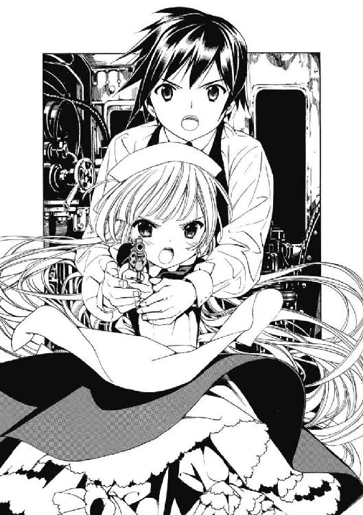

| GOSICK 06 仮面舞踏会の夜 | |
| 桜庭一樹 | |
| KADOKAWA / 角川書店 (2012) | |
GOSICK Ⅵ
─ゴシック・仮面舞踏会の夜─
桜庭一樹

角川ビーンズ文庫
本作品の全部または一部を無断で複製、転載、配信、送信したり、ホームページ上に転載することを禁止します。また、本作品の内容を無断で改変、改ざん等を行うことも禁止します。
本作品購入時にご承諾いただいた規約により、有償・無償にかかわらず本作品を第三者に譲渡することはできません。
本作品を示すサムネイルなどのイメージ画像は、再ダウンロード時に予告なく変更される場合があります。
本作品は縦書きでレイアウトされています。
また、ご覧になるリーディングシステムにより、表示の差が認められることがあります。
目次
──死者と木こり、孤児と、ブリタニア公妃のおかしな物語──
口絵・本文イラスト／武田日向
やがて、まんまるい月がのぼると、ヘンゼルは、妹の手をひき、あの小石をたどって、歩いていきました。小石は、つくりたてのお金みたいにきらきら光って、ふたりに道を教えてくれました。
──「ヘンゼルとグレーテル」
『グリムの昔話１』フェリクス・ホフマン編・画
大塚勇三訳 福音館文庫
第一部 仮面舞踏会
──死者と木こり、孤児と、ブリタニア公妃のおかしな物語──
１
オールド・マスカレード号は夜を切り裂くように、雷雨の中を走り続けていた。
凝った巻葉装飾のデザインをしたコンパートメントの窓の外には、闇より深い、漆黒の海が広がっていた。夜のバルト海は見たこともないぐらいの濃い黒味を帯びた波しぶきをあげ、この、揺れながら夜を切り裂く蒸気機関車を、雄叫びのような波の音で威し続けた。
ピカッ──、と、閃光が走り、鈍い雷鳴が響く。そのたびオールド・マスカレード号は、まるでこころもとなく瘦せた老人の如く、ぶるると車体を震わすのだった。
その混み合った列車の、コンパートメントで......。
「ちょっと待ってね、ヴィクトリカ。お鼻のよこっちょも拭いてあげるから」
「うるさいぞ、久城。人の顔をさすってないで、目をつぶっておとなしく祈りでも捧げていてはどうだね。もっとも、君が何教徒なのかは知らないが」
「もちろん仏教徒だよー。あと、さすってるんじゃなくて拭いてあげてるの。顎、ちょっと上げて」
「......うむ」
ヴィクトリカが不承不承、ほんのちょっと、貴族的なラインをしたちいさな顎を上げた。お付きの一弥は生真面目な顔に、達磨に目を入れる男の如き真剣な表情を浮かべ、ヴィクトリカの顔に向かって絹のハンカチを近づけた。
「む」
「取れたよ、ヴィクトリカ」
ちいさな形のいい鼻の横についていた、かすかな砂を拭くと、一弥はよかった、とにっこりした。ヴィクトリカはつまらなそうに鼻を鳴らした。
「......余計なことだ」
「あのねぇ、ヴィクトリカ。拭いてくれてありがと、は？」
「ふん」
ヴィクトリカがぷいとそっぽを向く。赤スグリ色をした、トーションレースを何重にも重ねた豪奢なドレスの裾が、ふわりと夢のように揺れた。ドレスにかかる髪は見事な金髪で、まるで絹のターバンがほどけて床に向かってひろがっているみたいだった。そしてちいさな頭には、繊細な薔薇のコサージュがいくつもあふれる赤いミニハットを被り、顎の下でサテンのリボンで結んでいた。
とがった銀のブーツがちいさな足を包んでいる。だが、深い碧の瞳が輝く、高貴なビスクドールを思わせる貴族的な美貌はいまは不機嫌そうで、薔薇色のほっぺたが、つつきたくてたまらなくなるような様子でぷっくりとふくらんでいた。
「なんだよ。どうして不満そうなの？」
一弥が、ちいさな妹にするように、首をかしげて優しく聞く。
ヴィクトリカは胸を張って、えらそうに答えた。
「わたしの知性は、鼻のよこっちょにわずかについた砂ごときで揺らぐような軟弱なものではないのだ」
「......君ってほんとに、あっけに取られるほど自信家だね。あ、いけない。君の知性がまた揺らいでるよ。ほら！」
ミニハットにくっついていたちいさな貝殻をつまんで、取ってやる。ヴィクトリカは「むぅ」とまたふくれた。栗鼠がほっぺたに木の実をいっぱいつめたような様子だった。しばらくそのまま、薔薇色のほっぺたをふくらましていたが、やがてあきたようにもとの顔に戻ると、百年も生きた老人のような不思議な悲しみの宿る、深い碧色の瞳をなんどか瞬かせた。
「危機が去ったよ」
「う......」
「ん？ 眠いのかい」
「うむー......」
「眠りなよ。ぼくが起きて、見張ってるからさ。君の知性を」
「頼むぞ、君......。命を懸けて、見張りたまえよー......」
ちいさなぷくぷくの手でなんどか目をこすっていたかと思うと、ヴィクトリカは小猫のように背を丸め、となりに座る一弥の肩にコテンと頭を預けた。すぴー、すぴー、と小猫みたいな寝息が聞こえてきた。一弥は、幼少のころから父に、背中にものさしを入れられて鍛えられた姿勢のよさで、いかにも生真面目な軍人の息子、といった様子でぴしりと座っていた。まっすぐに前をみつめ、顔がこんなかわいらしい少年でなかったら、強面で硬派にも見える雰囲気だった。だが次第に、肩にもたれたちいさな友達のことを思ったのか、生真面目そうな顔の口元に、優しい微笑が浮かんできた。
すぴー、すぴー......。
列車は雨の中を、暗い夜を切り裂いて走り続けている。
──久城一弥がオールド・マスカレード号に乗っているのは、夏休みの終わりとともに聖マルグリット学園から姿を消した、〝知恵の泉〟にして大切な友達、ヴィクトリカ・ド・ブロワを連れて帰るためだった。ヴィクトリカはその父、アルベール・ド・ブロワ侯爵の手によって、バルト海沿岸に建つ不吉な修道院〈ベルゼブブの頭蓋〉に、閉じこめられてしまっていたのだ。
旧大陸に伝わる不思議な力を使って、国力を強くしようとするブロワ侯爵とオカルト省、そして科学の力で未来を切り開こうとするジュピター・ロジェの科学アカデミー、二つの勢力がソヴュール王国ではぶつかりあっていた。修道院で、オカルト省の手によって科学アカデミーのスパイが殺された事件をヴィクトリカは見事に見抜いた。そして、十年前、世界大戦の折に起こった怪異も説いてみせ、海に沈む修道院から無事に逃げて、オールド・マスカレード号に乗り、いままさに、二人は聖マルグリット学園に帰ろうとしているところなのだった......。
コンパートメントの中は静けさに満ちていた。ぴしりと姿勢を正して座る、生真面目そのものの東洋人の少年と、その肩にもたれて眠る、豪奢なドレスに身を包んだ、ちいさな、おそろしい美貌の金髪の少女。向かい側の席には二人の女が黙って座っていた。一人は、肩の辺りでまっすぐにカットした黒髪に、青い瞳をした十七、八歳ぐらいの少女だった。白いブラウスに格子縞のスカートを穿いた、簡素な学生風の服装をしていた。思いつめたような青白い顔をして、さっきから窓の外をみつめ、なにかぶつぶつと独り言を言っている。もう一人は中年の婦人だった。茶色い髪を後ろでまとめて、喉元まで隠すブラウスに長いスカートを穿いていた。化粧っけはなくて、落ち着いた雰囲気だった。婦人のほうはさっきから、興味深そうにヴィクトリカと一弥をみつめていた。一弥と目が合うと、にこっと微笑んだ。一弥は恥ずかしそうに、かすかに顎を引いてうなずいた。
すぴー、すぴー、と、ヴィクトリカの立てるちいさな寝息が、一弥の耳元で響いていた。一弥はちらりと、豪奢なドレスに身を包んだ友達の寝顔を見やった。
赤いトーションレースと、薔薇のコサージュつきミニハット、夢のような銀のブーツに包まれたヴィクトリカ。いまは瞳を閉じて、おどろくほど長い金色の睫毛が、息をするたびにかすかに揺れ、彼女が精巧なビスクドールではなく、まぎれもなく呼吸をしている少女なのだと伝えていた。ちいさな手の指には、暗い紫色をした指輪が輝いていた。ヴィクトリカが求めてやまぬ、その母。うつくしく妖艶な、金色の母狼、コルデリア・ギャロから、修道院で贈られた指輪だった。すぴー、すぴー、と眠りながらもヴィクトリカは、大切そうに、なくすのが不安そうに、指輪をはめたぷくぷくの手をぎゅっと握りしめていた。
向かい側の座席に座る中年婦人は、しばらく二人を見比べていた。この婦人と、となりにいる黒髪の暗い少女が、波に飲まれそうになるヴィクトリカと一弥に手を伸ばして、列車に引き上げて助けてくれたのだ。そのあとのヴィクトリカの見事な謎解きも、婦人と少女は一緒に聞いていた。
婦人はなんどか一弥に話しかけようとしたけれど、そのたびにヴィクトリカの顔をちらりと見て、起こしちゃかわいそうだわ、というように微笑んで口を閉じた。
やがてヴィクトリカが目を覚ました。むぅ、とうめきながらちいさな手で目をこする。それから、床に落ちていた新聞に目を落とした。読むものがなくて、〝知恵の泉〟が退屈し始めたのだろう。一弥も新聞を覗きこんだ。炭鉱を持つ著名な富豪がロンドンで殺されたという物騒な事件が一面を飾っていた。そのとなりには小さく、ソヴレムで十七歳の学生、レグラント嬢が行方不明になった、という記事も載っていた。レグラント嬢の特徴は腰まで伸ばした黒髪で、性格はおとなしく、家族が安否を気にしている、と書かれていた。
新聞の上を、不吉な黒い蜘蛛がゆっくりと這っていった。黒と白の縞模様になった幾本もの脚がぞわぞわとうごめいて、灰色をした新聞の、レグラント嬢の記事の上を、ゆっくりと通過していく......。
コンパートメントに乗り合わせた暗い少女は、相変わらず窓の外をみつめてぶつぶつと独り言を言っていた。肩の辺りでまっすぐカットされた黒髪が、列車が揺れるたびにべつの生き物のようにうごめいた。黒と白の格子縞のスカートは、長いあいだ着続けているのか、裾が少し汚れていた。
婦人が少女のほうを、心配するような目つきで見た。それから努めて明るい声で、
「どこに行っちゃったのかしらね、レグラント嬢。家族の方は心配ねぇ」
「そうですね」
一弥が礼儀正しく相槌を打った。すると、「あとね、殺された富豪ってねぇ、ほんとは破産寸前だったらしいわよ～。噂で聞いたわ」などと、どうも明るい話題とはいえない気もしたが、婦人は楽しそうにしばらく、どこかで仕入れてきたらしい社交界ゴシップを披露した。相槌を打つのは一弥だけだったが、それでも空気がだいぶほぐれてきた。
婦人が遠慮がちに、
「あの、自己紹介してもいいかしら？」
「ええ」
一弥がうなずくと、婦人は目尻にしわを寄せてにっこりした。
「わたしの名前は、ブリタニア・ガブリ、エ、ル......」
婦人が笑顔で話し始めたとき、コンパートメントのドアがノックもされずに乱暴に開いた。少女がビクッとして、顔を上げた。
小山のように大きな身体をした、三十歳ぐらいの髭面の男が立っていた。丈夫そうな革のベストに、土で汚れたブーツ。両手はごつごつとして、いかにも労働者風の男だった。後ろにもう一人、男がいた。こちらは二十歳ぐらいの見目のいい男で、いかにも貴族の子弟といった洒落た服装をしていた。一弥をちらりと見て、東洋人か、というようにかすかに顔をしかめた。それから小声でつぶやいた。
「おや、ここも人がいたとは」
「ややっ！ 仕方ない。廊下に座ってやり過ごすとしようぜ、若いの。俺はカードを持ってきている」
二人がせわしなく言いながら出て行こうとするのを、中年婦人があわてて止めた。
「座る場所はありますから、よかったら」
「やや、それはかたじけない」
大男がうれしそうに髭面をゆるめて、コンパートメントに入ってきた。若い男も続いて、「たいへんな夜ですね、みなさん」と上品な声で言い、辺りを見回した。
大男はうれしそうに、
「せっかくだから、自己紹介といきませんかね。ややっ」
一弥の陰に隠れていた、小さな薔薇の花のようなヴィクトリカをみつけて素っ頓狂な声を上げた。若い男もヴィクトリカに気づいて、おどろいたように目を見開いた。
「ものすごくきれいなお嬢ちゃんがいるな。お嬢ちゃん、いくちゅ？」
「..................百十四歳だ」
ヴィクトリカが、嵐の前の静けさのような、不機嫌な低い声で言った。お、怒ってる、と一弥は思わず笑いをこらえた。ヴィクトリカは子供扱いされるととても不機嫌になるのだ。
秘密の花束のようなうつくしい、ちいさな少女の口から、老女の如きしわがれた声が響いたので、大男も、若い男もびっくりしたように目をぱちくりした。不吉な沈黙が流れた。
バリバリバリバリッ──、窓の外で雷鳴が轟く。一瞬、雷に照らされてコンパートメントの中が白く染まった。目がくらんで、一弥はごくっ、と息を呑んだ。
──コトン！
ちいさな音がした。
激しい雷鳴のあとでは、あまりにかすかな音だったが、一同はつられて床を見た。
そこに、赤いちいさな箱が落ちていた。
一弥は、あれっと思った。見覚えのある箱によく似ていたのだ。修道院〈ベルゼブブの頭蓋〉で、ヴィクトリカの母、コルデリア・ギャロが持ち出そうとしていた箱。オカルト省と科学アカデミーの両方が探しているという、〈形見箱〉というものだ。コルデリアはそれが、この国の命運を左右する大事なものだ、と言っていた......。
その箱によく似た赤い箱が床に落ちていた。コンパートメントにいる六人、ヴィクトリカと一弥、中年婦人、黒髪の少女、髭面の大男、貴族風の青年のうちの誰かが、
ビクンッ──、
と、緊張したのがわかった。あれ、と一弥は辺りを見回した。いまの緊張が誰のものなのかよくわからなかったのだ。でも、見回してみたらどの顔も普通の、落ち着いた表情を浮かべていた。
「あら、いけない。落としてしまったわ」
窓際に座っていた黒髪の少女が、床に手を伸ばして赤い箱を拾った。それから大事そうにしまいこんだ。
その仕草を大男がじいっと見ていた。
それから、髭面をごりごりとかいて、言った。
「さて、全員で自己紹介といこう──」
２
上機嫌でコンパートメントを見渡して、大男は破顔した。一弥は思わず、国にいたころに年に数度、顔を合わせた親戚の伯父さんを思い出した。普段は田舎に住んでいる伯父や伯母たちは、ひとなつっこくて、なんでも聞くし遠慮がないから、ちょっと閉口しつつも、なんだか憎めないのだ......。
大男のごつごつとした無骨な手から、切っていたカードがざらざらと座席にこぼれ落ちた。青年が拾うのを手伝った。険しい顔をした国王や王妃の横顔、死神めいた不吉なジャックなどが描かれたカードが散らばっている。
「自己紹介......？」
窓辺で物憂げに頰杖をついていた黒髪の少女が、カードをちらりと見ながら、面倒くさそうにつぶやいた。
なおもなにか言おうとする大男を制して、暗い声で、
「わたしは何者でもないわ。わたしは〈孤児〉なの」
「孤児？」
大男が聞き返した。
「じゃ、家族はいないのか？」
「ええ、いないわ」
足元に落ちていた新聞を、大男が踏んづけた。這っていた黒い蜘蛛を踏みつぶそうとしたのだろう。行方不明のレグラント嬢の記事が、ブーツの泥で汚れて、しわが寄った。少女は続ける。
「わたしは自分の誕生日を知らないの。だから、あの不思議な修道院で誕生日をみつけてもらおうと思ってやってきたのよ。だって、誕生日を知らなかったら、死ぬときも黄泉の国に行く道に迷ってしまうんだもの！」
急に、暗い青色をした瞳を見開いて少女──〈孤児〉が叫んだ。大男と若い男が同時にひゃっと首を縮めた。コンパートメントの中に、静かな少女がとつぜん叫んだ声と、狂気じみた気配が満ちて息苦しいほどだった。ヴィクトリカだけが、おどろくことなく少女の顔をじっとみつめていた。
中年婦人が心配そうに〈孤児〉の顔をみつめた。それから、おかしな雰囲気をほぐそうとするようににっこり微笑んだ。〈孤児〉と大男を見比べながら、努めて明るい声で話し出す。
「えっと、じゃ、つぎはわたしの番ね。ええと、その、わたしは......そう、わたしはじつは、お忍びで修道院のショーを見に行った、とある国の〈公妃〉なの。いつもお城にいて、つまらないから、こっそり抜け出したのよ」
「......おいおい」
「えっと、だから、みつかったら国に戻されてしまうから、変装してるのよ」
地味な服装をして、化粧っけのない落ち着いた顔で中年婦人──〈公妃〉はむりやり、言い切った。うつむいて、自分でもちょっと照れ笑いしている。大男はあきれて、髭面をごりごりかきながらなにか言おうとした。
「あの、なぁ......」
そのとき、ずっと黙っていた貴族風の青年が口を開いた。真剣な顔つきをしているが瞳がすこしうるんで、笑いをこらえているような顔にも見える。
「つぎはぼくですね。ええと、ぼくは......。どうしようかな......。そうだ！ ぼくはねぇ、冥界の王に捕らえられた妹を捜す旅をしています。山から山へ。国から国へ。妹を人質に取られてるから、冥界の王の言いなりなんです。だから、なにをするかわかりませんよ～」
〈公妃〉が、感謝するように優しく微笑んだ。青年と〈公妃〉はみつめあってにっこりした。どうやらこの青年は、気弱でおとなしそうだが、心優しい性格であるらしかった。
「職業は？」
と、〈公妃〉が優しく質問した。
青年はちょっと悩んで、
「ええとね、職業は──〈木こり〉にしよう。そう、ぼくは木こりなんです。山から山へ、木を切り倒しては、進むんです」
むっつりしていた〈孤児〉も、一生懸命話している青年、〈木こり〉の様子にちょっとだけ表情を柔らかくした。大男はあきれた顔で、木こりだと言い張る青年の、どう見ても羽振りのいい贅沢な衣装と、貴族的な顔立ちをみつめた。
少女〈孤児〉と、中年婦人〈公妃〉と、貴族の青年〈木こり〉は三人で顔を見合わせて、楽しそうに微笑んだ。「......ちぇっ！」と、髭面の大男が舌打ちをした。とはいえ本気で怒っている風ではなくて、苦笑しているのだった。
「わかった、わかったよ。君らはみんな、真面目に自己紹介する気がないんだな。みんなしておかしな名前を名乗って、俺はまるで悪い魔法にかかってるような気分だよ」
「あら、わたしは本当にお忍びの公妃ですよ」
〈公妃〉が真面目な顔で抗議してみせた。
「はいはい、わかったよ。......どうせ俺たちは、たまたまこの列車で行き合ったどうしってだけの間柄だ。あの修道院のショーだって、見に行っていたことを周りに知られてかまわないやつもいりゃ、知られたらなにかと困る立場の客もいただろう。俺は、なんてことねぇ立場の人間だからさ、考えがいたらなかったよ」
すねたように言って、また髭面をかいた。自分の泥だらけのブーツに視線を落とし、粗末なベストをごつごつとした両手で引っぱる。
窓の外でまた雷鳴が轟いた。ピカッ──、と白い閃光がコンパートメントの中を不吉に染め上げた。
大男の無骨な声が、低く響いた。
「それなら、俺は──〈死者〉だ」
光に照らされて、髭に覆われたごつごつとした顔が、まるで銀皿に載せられた罪人の生首のように白々と浮き上がった。ちいさな瞳は血走って、まさに断末魔の表情で凍りついた不慮の死者そのもののようだった。
「もう数百年も前のことだ。おそろしい疫病、黒死病が流行ったころに、あの修道院で殺されたんだ。俺は死にたくなんかなかったのに、あんまりな最期を迎えたもんで、魂だけが死に切れず、長いあいだバルト海の暗い海面を、黒い涙を流しながら彷徨っていたのさ......」
大男の声に重なるように、もう一つ、まだ年若い青年のか細い、どこかヒステリックな声色も聞こえるような気がした。
修道院で死を遂げた、伝説の〈死者〉──。
そして、彼を手にかけた、黒いマントの、黒死病の仮面──。
大男は朗々と話し続けている。
「それ以来、数百年もの間、俺の魂はずっとあの修道院にとり憑いて、やってくる人間を呪っていた。世界大戦のときは、海面や砂浜に面白いほど舞い落ちるドイツ軍の戦闘機に、喜びの声を上げたもんさ。若い命を散らした、ドイツの少年兵士たち。だけどどの兵士も飛行機と一緒に黒焦げになったり、四肢をばらばらに散らして死んじまった」
修道院に響く、中世から続く呪いの声。（呪われろ。呪われてしまえ。この城。この場所には、繰り返し、死、を──！）あまりに年若く、愚かで狭量であった、伝説の国王の、恨みに満ちた、冥界からの声......。
「ところがどの死者も、満足な身体を残してくれずに無残に死んじまってね。ようやく今夜、堤防が決壊したどさくさに、新しくて丈夫な死体をみつけた。どこからかショーを見にやってきた、この男さ。こいつはなんと、丈夫で力持ちだけど、山育ちなもんで泳げなくてね。うっかり溺れ死んだところに入りこんで、こうして数百年ぶりに、二本の足で歩き出したってわけだ！」
大男のだみ声が響いた。
──不吉な雷鳴が、しだいに遠のいていった。
コンパートメントの中も、閃光が晴れてもとの薄暗さを取り戻した。列車は老人の歩みのようにこころもとなく揺れながら、夜を切り裂いて走り続けている。
大男──〈死者〉は、話し終わると、どうかな、というように自信なさそうに一同を見回した。
「おぉ～！」
と、〈木こり〉が拍手をすると、〈公妃〉も目尻にしわを寄せて微笑んだ。
「なかなか迫力がありましたわ。ねぇ」
「ちょうどいい具合に、雷が落ちたおかげもあるけど、でもすごくかっこよかったですよ。なんだ、結局、あなたの話がいちばん出来がいいじゃないですか。ねぇ」
「そ、そうかい？」
まんざらでもなさそうに〈死者〉は髭面をかいた。その顔には、ついさっき、閃光の中に浮かび上がった、すでに死んだ男のような不吉な面影はもう微塵もなかった。
それから〈死者〉は楽しそうな、でも残念でもあるような、なんともいえない顔をしてつぶやいた。
「だけど、今夜はまるで──〝仮面舞踏会の夜〟だな。皆の衆」
一同を見回して、一人ずつの目をみつめる。
どの顔もとたんに無表情になって、粗野な大男の髭面を黙ってみつめかえした。〈死者〉の声が不安そうにすこし大きくなった。大きな手の中で、国王や王妃などさまざまな人物が描かれたカードを扇形に広げてみせて、
「だって、そうだろう。俺たちはみんな本当の姿を隠して、まるでこのカードの柄みたいな、不思議な仮面を被って向かい合ってるんだ。誕生日を探す〈孤児〉に、お忍び旅行中の〈公妃〉。妹を捜す〈木こり〉に、彷徨う〈死者〉......。本当の姿は、互いに知らないままだ......」
困ったように髭面をごりごりとかく。
その顔を、ヴィクトリカは黙って興味深そうにみつめていた。
金色の髪が夢のように垂れ落ちて、赤スグリ色をした豪奢なドレスを取り巻いている。薔薇の飾りが躍るミニハットは、夜の闇に咲く秘密の一輪の花のようだ。そのヴィクトリカに目をやって、大男、〈死者〉は軽い調子でなにか言おうとした。
それから、ヴィクトリカをじっとみつめて、異様なうつくしさに改めて心打たれたというように口を閉じた。一同もヴィクトリカをみつめて、彼女の言葉を待った。
なにも言わないので、〈死者〉が髭面を緊張させ、低い声で聞いた。
「それで、お嬢ちゃんは？」
「......むぅ？」
「いったい、あんたは何者なんだい」
ヴィクトリカは、けぶる碧の瞳をうっすらと見開いた。唇をゆっくりと開き、低いしゃがれ声でささやいた。
「我らは、誇り高き太古の〈灰色狼〉と、大まぬけな〈家来〉だ」
ピカッ──！
雷光が白く輝き、コンパートメントを白く染めた。深い輝きを湛えた、しかしおそろしいほど無表情の碧の瞳が、閃光の中ですべてを見通すようにきらりと輝いた。
〈灰色狼〉という言葉に、誰かがびくりと身体を緊張させたのを一弥は感じた。さっき、〈孤児〉が赤い箱を落としたときに緊張したのと同じ人物じゃないか、と一弥は思った。でも、それが誰なのかはわからない。雷鳴がやんだときにはまたもとの空気に戻っていて、一同はリラックスして互いの顔をみつめていた。
......と、一弥がはっと気づいて、反論した。
「ちょっと待ってよ。ぼくは百歩譲って〈家来〉でもいいとして、断じて大まぬけじゃないよ。国の代表でソヴュールにやってきたわけだから、しっかりしてるし、それに成績だって君よりいい。君、授業に出ないしテストも受けないから、言っとくけど、いばってたって、テストは毎回０点なんだからね。......イテッ！」
ブーツのさきっちょで脛を蹴っ飛ばされて、一弥は黙った。
列車が揺れる。
一弥が小声でつぶやく。
「でも、ほんとのことじゃないかー......。ヴィクトリカの万年０点魔......！」
ヴィクトリカがなにか言おうとして口を開けて......。
ちいさな形のいい鼻をひくつかせて......。
深いエメラルドグリーンの瞳をぱちぱちさせ、ぷくぷくした両手のひらを、さくらんぼ色のお口に当てて......。
その、物静かで思慮深い、表情らしきものが浮かんでいないひんやりとした美貌をほんのすこぅしだけ、びっくりしたように緊張させて......。
──ぐじゃ！
と、おかしなくしゃみをした。
一弥は目をぱちくりした。あわてて手のひらを、白い陶器のような、ヴィクトリカのちいさなおでこに当ててみる。
「熱は、ないな。ドレスが海で濡れたから冷えたんじゃないかい？ えっ、なに？ ......きやすくぺたぺた触るな？ 家来のくせに？ ......それはすみませんでしたね。ヴィクトリカのいばりんぼ。......あれれ」
「ぐじゃ！」
「むぅ、ヴィクトリカ。そのくしゃみは、君、あやしいよ」
「......あやしくない」
「そういうところが、ますますあやしいよ。君、いまちょっとだけ返事が遅れたろ？ 若干、自信がないときはそうなるんだよ。自分では気づいてないだろうけど、へへん、家来のぼくにはお見通しですよー、君。......君？」
「うるさいやつだ」
ヴィクトリカは、倦怠と諦念にけぶる瞳をわずかに見開いて、つまらなそうに返事をした。
「そうよ。あなたたち、着替えたほうがいいかもしれないわ」
〈公妃〉が母親のような言い方で口をはさんだ。一弥が、まったくです、とうなずきながら、いやがるヴィクトリカにあれこれと世話を焼く。
そのときとつぜん、窓際で〈孤児〉が叫んだ。
「この中に敵がいるわ！」
一弥も〈公妃〉もほかの人々も、あっけに取られて〈孤児〉を見た。身体を震わせ、目を血走らせて、少女はコンパートメントの中を見回していた。
黒髪をふり乱して、目を恐怖に見開いて、
「わたしは誕生日を知る前に殺されてしまうんだわ。この中に、わたしを狙う敵がいるのよッ！」
なごやかだった雰囲気が、しらけた。〈孤児〉は激しくすすり泣いて、座席の上で身体を震わせた。〈公妃〉があわてて、落ち着いてちょうだい、となだめ始めた。
「大丈夫よ。もしも誰かがあなたを狙ってるとしても、わたしじゃないわ。わたしのそばにいなさいな、あなた」
その言葉に、〈死者〉と〈木こり〉が顔を見合わせた。〈死者〉はちょっと気を悪くしたように顔をしかめている。
「どうやらこの中に怪しいやつがいるらしいぞ。おまえじゃないか？」
「いやぁ、あなたのほうがいかにも怪しいですよ」
「む......。俺も、自分でそんな気がするよ。でも、好きでこんな大きな身体に育ったわけじゃないぞ。まったく......」
つまらなそうな顔で、大男〈死者〉が吐息をついた。コンパートメントには〈孤児〉のヒステリックな泣き声が響いている。〈木こり〉は困ったように〈死者〉に肩をすくめてみせた。
〈死者〉が逃げるように立ち上がると、一弥に声をかけた。
「さっき、食堂車で給仕たちと話したんだけど、制服の替えがあるみたいだぞ。お嬢ちゃん、それを借りて、風邪をひく前に着替えちまいなよ。俺がうまく頼んでやるからさぁ」
「あ、ありがとうございます」
一弥は立ち上がった。ヴィクトリカの手を引いて廊下に出る。
〈死者〉は薄暗い廊下を大股で歩きながら、「おかしなやつらだな。まったく」と吐き捨てるように言った。
「〈公妃〉はどう見たって、普通の家庭にいるいい奥さんってところだ。それに〈木こり〉は貴族のおぼっちゃんにしか見えないし。俺だって、誰より丈夫なのに〈死者〉なんだしなぁ。まったく、おかしな夜だ」
無骨な手の中でカードをなんどか切りながら、ため息をついた。それから振り向いて、髭面をごりごりとかく。
「だけど、考えてみりゃ......。君らがいちばんおかしな乗客だよ。子供が二人だけで修道院のショーにやってきたなんて、さ。どう見たって君らは、十四、五歳の少年と、それと、うーん......」
ヴィクトリカを見下ろして、あまりの美貌に怖れをなしたように目をそらし、髭をかきながら考えこむ。ヴィクトリカがまた不機嫌そうに、
「......百十四歳だ」
「うぅーん、そうか。ま、〈灰色狼〉ならそうかもな......」
小声で〈死者〉がつぶやく。
「それって、あれだろ。〝山奥におそろしく頭のいい灰色狼の村がある〟っていう怪談から思いついたんだろ。俺もその話はよく知ってる。子供のころ、さんざん聞かされたもんな」
〈死者〉はごりごりと髭面をかいて、また歩きだした。
廊下にも人があふれて、混んでいた。食堂車につくと〈死者〉が、黒と白の制服を着た給仕係に屈託なく話しかけた。どうやらすぐに打ちとけるひとなつっこい性格らしく、給仕も愛想よく〈死者〉とおしゃべりをした。
振り向いて、
「制服、貸してくれるってさ。ほら、風邪ひいちゃいけない」
「ありがとうございます......」
「おまえも、海で濡れたんだろ。ほらよ」
一弥は自分用の男物の服と、ヴィクトリカ用の女物のエプロンドレスを受け取って頭を下げた。化粧室をみつけて、自分も着替え、ヴィクトリカにも着替えさせる。
着替えているあいだ、見張りのために化粧室の前に立った。両足を肩幅ぐらいに広げて、両手を身体の後ろで組む。姿勢を正して、年若い軍人のような姿で立っていると、化粧室の中から衣擦れの音や、絹のリボンをほどく音、それから心配でたまらない、ぐじゃっ、というちいさなくしゃみが聞こえてきた。
「ヴィクトリカ、だいじょうぶ？」
「む」
「ぼく、ここにいるからね？」
「知っている」
衣擦れの音が続いている。
ぱさり、とドレスが床に落ちる音。
ブーツが床で立てる、乾いた音。
やがて、エップロンだ～、エップロンだ～、という、かすかな、鼻歌のような低い声も聞こえてきた。
一弥はうっかりつられて、一緒に、エップロンだ～、と小声で歌った。「......君、黙りたまえ」と怒られて、あわてて口を閉じた。
周りにほかの人がいないので、一弥はヴィクトリカに気になっていたことを聞いてみた。
「ねぇ、ヴィクトリカ。さっきあの女の子──〈孤児〉が床に落とした赤い箱、見ただろ？」
「うむ」
「あれ、なんだろう......」
一弥は、海に沈んだあの修道院で、ヴィクトリカの母コルデリア・ギャロと邂逅していた。コルデリアは灰色狼の村として知られる山奥の〈名もなき村〉で生まれ育った。その村を追われてソヴレムに出て、踊り子となった。そこでブロワ侯爵にみつけられ、ブロワ城に囚われてヴィクトリカを産んだ。その〈名もなき村〉の、コルデリアが住んでいた家の床下に隠されていた形見箱という箱を、コルデリアのパートナーである赤毛の男、ブライアン・ロスコーは村に出向いて持ち出した。そして十年前、修道院に隠した。
コルデリアは、修道院からその形見箱を持ち出して一足先に去った。まぎらわしい偽物をおいていく、と言い残して。形見箱は、赤くて、ちいさくて......さっき〈孤児〉が床に落としたのとそっくりの箱だった。
「あれが、コルデリアさんがおいていった偽物の箱なのかしらん。だけど、ヴィクトリカ。形見箱っていったいなんだろう？ コルデリアさんは、オカルト省と科学アカデミーが必死で捜す、とんでもないものだと言っていたけれど......」
一弥がつぶやいたとき、食堂車のドアが開いて、〈死者〉がご機嫌な顔つきで戻ってきた。食堂車で一杯やったのか、頰がかすかに赤かった。一弥の声がすこし聞こえたらしく、
「おぅ、〈家来〉くん」
と、近づいてきて一弥の肩を叩いた。
「いま、形見箱って言ったか？ なんだよ、若いのにずいぶん古い言葉を知っているなぁ」
「えっ、古い言葉？ もしかして形見箱を知ってるんですか」
「おぅ。なにしろ俺は大昔の〈死者〉だからな。昔の風習には詳しいんだ。......いやぁ、いまのは冗談だよ。でも、なつかしいな。子供のころに聞いて以来だ」
化粧室の中でも、ヴィクトリカがちいさな耳をぴくんとさせて、耳を澄ましているのがわかった。一弥は聞いた。
「ぼく、その言葉を聞いたことがあるだけなんです。でも、形見箱っていったいなんなんですか？」
「なんだ、そうなのか。そりゃあそうだよな......」
〈死者〉は照れたように笑った。
「俺が育った東欧の村じゃ、昔はよく形見箱をつくったらしいんだよ。形見箱ってのは、つまり、そいつの人生そのものさ。大きな家の跡継ぎの長男しかつくらないらしいけどね。生まれたときに箱を一つもらってさ、そこに自分の〝歴史〟そのものを入れていくらしいんだ」
声が不思議な哀感を帯びて廊下に響いた。なつかしむように、怖れるように〈死者〉はゆっくりと続けた。
「そのうち箱はいっぱいになっちまってね。満杯になったときに、その男の寿命もやってきて、そして静かな死が訪れるってわけだ。どんな偉大な精神の持ち主も、頼りにされる一族の長も、箱の大きさ以上に長く生きることは許されない。そして男が死ぬと、棺に形見箱も一緒に入れられる」
「へぇ......」
「つまり形見箱ってのは、ちいさな箱に縮められた、一人の男の生きた証さ。極めて個人的な神話とでもいうべきものだね。昔、じいさんが死んだときに箱を見たけど、中身まではどうなってるのか知らないんだ。いまじゃ誰もやらない、古の風習だしな。昔々、人生にもっと深い意味があった時代の、古きよき、小さくて底なしに深い、人生の箱、だ」
酔っ払った赤い顔をして〈死者〉は笑うと、「じゃあな。先に戻ってるぜ」と大きな手を振って、廊下を遠ざかっていった。
それを見送っていると、化粧室の中からヴィクトリカがつぶやいた。
「混沌だな」
「ん？ どしたの、ヴィクトリカ」
「......教養のある男だ。少なくとも精神は、だが。どう思うかね、久城。彼の粗野そのものの外見と、服装。そしていま語っていた声に、隠せず残響していた、ある種の知性と教養というべきものの気配だ」
「そういえば、そうだね。あの人がぼくらに与える印象は二通りあって、その二つにはずいぶん隔たりがあるみたいだ」
「外見と内面がどうも合致していないのだ。あたかも、そう......」
化粧室のドアがゆっくり開いた。ちいさな両手で、ドアがなかなか開けられないようなので、一弥が手をそえてやった。ヴィクトリカはちいさな薔薇色のほっぺたをふくらまして、体重をかけて、一生懸命ドアを押していた。
押しながらも、老女のような深く暗く、しわがれた声で、
「あたかも、そう......死者の身体に、別人の魂がむりに入ったよう......だっ！」
ドアが開いて、ヴィクトリカが廊下に転がり出てきた。勢いあまって、立っていた一弥に突進して、お腹の辺りにおでこをぶつけて、両手をばたばたさせる。一弥にそっと支えられて、転ばずになんとかその場に立つと、えらそうに胸をはって一弥を見上げた。
豪奢な赤いドレスを脱いで、黒と白のシンプルなエプロンドレスに着替えたヴィクトリカは、生来の凄みのある美貌と、絹糸のように垂れ落ちる金色の髪が映えて、輝くばかりだった。碧の瞳は聡明な、悠久の時を生きた野生動物のように静かで、ひんやりと輝いていた。その瞳に映るのは、知性と、倦怠、そして──かすかに見え隠れする、きらきらして透明ななにか。
野生動物の尻尾のような金の髪が、あまりに誘うように輝いているので、みつめあっていた一弥は、思わず手を伸ばして、その毛先に、そうっ──と、触れた。
天上の絹の如き、やわらかでしっとりとした手触りだった。でも。
......怒られた。
「触るな！ 下僕」
「......ごめんなさい。えっ、いや、下僕じゃないよ。触ったのは、君の髪があんまりきらきらしてたから、つい胸がいっぱいになって......。けど、ぼくは断じて、誰の下僕でもないよ。ちょっと、こら、ヴィクトリカ。いばりすぎると、転ぶよ。気をつけて、君」
勝手にすたすた歩いていくので、ヴィクトリカが、うつくしい赤い蛇が脱皮したかのようにその場に残したトーションレースとフリルのかたまり──豪奢なドレスと輝くミニハットをかきあつめて、大切に抱えた。それから、抱えこんだ赤いレースとフリルに視界を遮られながらも、ぶつぶつ文句を言いながら友達の後を追った。
フリルは空気を得てふくらむように、一弥の腕の中でふかふかと嵩を増していく。帽子が腕から落ちそうになって、一弥はあわてて、床に落として汚してしまわないように、自分の頭にそっと載せた。黒と白の給仕服に、頭にかしいで載る赤いミニハット。興味なさそうにむっつりとして振り向いたヴィクトリカが、一弥の姿に、つめたい碧の瞳をわずかに見開いた。
うつくしく、しかし冷酷にけぶるちいさな顔が、かすかにゆがむ。......笑ったのかもしれない。
「君、頭に花が咲いているぞ。ぷくく」
「ぷくく、じゃありません！ まったく、君はいつも散らかしっぱなしで。いったい誰が片付けると思ってるんだろ」
「君だろう」
ヴィクトリカが、当然だというように、不思議そうに返事をした。一弥もため息混じりにうなずいた。
「そうなんだよね......。でも、どうしてなのかしらん......」
「君が几帳面な片付け魔だからだ、ろ、う......。んっ？」
ヴィクトリカが、ちいさな形のいい耳をぴくぴくっ、とうごめかせた。一弥も気になって、ヴィクトリカと一緒に耳を澄ませた。
どこからか、ガーッ、ピーッ......と、不吉に機械的な音が響いてきた。
揺れるオールド・マスカレード号の轟音にかき消されながらも、冥界から響くような不気味な声が、耳を澄ますヴィクトリカと、ミニハットを被った一弥に届いた。
〈助けて、タス、ケテ......〉
それは、若い女の声だった。
苦しそうな、寂しそうな、黄泉の国から届く声──。
ガーッ、ピィィーッ......と機械の立てる音も響いている。
〈おにいちゃん、助けて、はやく、タ、ス、ケ、テ......！〉
ヴィクトリカと一弥は顔を見合わせた。
と、二人が立っていたすぐ近くのドアがとつぜん、乱暴に開いた。貴族的な顔立ちに、羽振りの良さそうな服装をした青年──〈木こり〉が、まるで見えない手に押されたように飛び出してきた。廊下に膝をついて、肩をわななかせながら、大きくなんども深呼吸している。
「あの......どうかしましたか？」
一弥の声に、〈木こり〉はギクリとして、顔を上げた。
その顔には、見たこともないほど強い恐怖がはりついていた。灰色の目を見開いて、薄い睫毛を小刻みに揺らし、色のない唇はまるで、悲鳴を上げたまま氷の女王の息吹で凍らされた若き旅人のように、凝り固まって動かすことさえできないのだった。
まさに亡霊を見たような顔だ。さっきまでのにこやかで感じのいい青年とは別人のようで、生気を失い、とつぜん百歳も年を取ったかのようだった。一弥はゾクッと寒気を感じて、思わずヴィクトリカと〈木こり〉のあいだにそっと割って入った。その後ろからヴィクトリカがぴょこんとちいさな頭を出して、〈木こり〉の顔をじっとみつめた。
「あ、あ、いや......。いや、その」
〈木こり〉はあわてて立ち上がると、埃を払い落とした。冷静を装うように気弱に笑って、
「見苦しいところを、見せちゃって。やだなぁ」
「いま、なにか声が聞こえたような......」
「こ、声？ いや、それは知らないね。ぼくの、その、独り言かもしれない。じつはぼく、はずかしいんだけど、列車が苦手でね。乗ると必ずこうやって気分が悪くなってしまうんだ。恰好悪いから隠れてたんだけど、よりによって年下の子にみつかっちゃうとはね」
「列車が苦手なんですか......？」
「うん。昔、子供のころに両親が、列車事故でね......。それ以来なんだ。でも、もう大丈夫さ」
ふらつく足取りで、〈木こり〉は廊下を遠ざかっていった。それを見送っていた一弥は、はっ、と、ヴィクトリカの姿が見えないのに気づいた。あわてて「ヴィクトリカ？」と呼びながらきょろきょろすると、いま開いたドアの向こうからかすかに、返事のような、うめき声のような、合図のような声が聞こえた、気がした。
「ヴィクトリカ？ なにしてるのさ、君......？」
覗いてみる。
ぴょこん、と顔を出した赤いミニハットと、一弥の顔を振り返って、ヴィクトリカはつまらなさそうに鼻を鳴らした。
「......通信室のようだ、君」
言われて一弥も、狭い部屋の中を見渡した。どうやら人が一人ようやく入れるぐらいのスペースの通信専門の部屋のようだった。いまはなんの音もせず、しんと静まり返っている。
「さっき、へんな声が聞こえたよね......。空耳なんかじゃないと思う。それに〈木こり〉の声でもなかったような気がするけど......」
一弥がつぶやいた。
「うむ」
「おにいちゃん、助けて、って聞こえたけど。なんだったんだろう。そういえば、あの人......冥界の王に連れ去られた妹を捜してる、なんて言ってたね。作り話とばかり思ってたけど。さっきの〈死者〉が持つ二面性といい、今夜はなんだかおかしな感じだよ、ヴィクトリカ」
「む」
そういうヴィクトリカと一弥も、本当に伝説の灰色狼の末裔であり、心優しきその従者なのだ。
列車が右に一度、大きく揺れた。それから、左にも、一度。
汽笛が甲高く鳴った。
窓の外で、闇がいちだんと濃さを増した。黒い雲が流れて月が陰り、夜に漆黒のヴェールを被せたような、物寂しく不吉な闇がオールド・マスカレード号の周囲に立ちこめていた。
ヴィクトリカと一弥は顔を見合わせ、同時に同じ方向に首をかしげあった。ヴィクトリカの金髪がさらりと床に垂れ落ちた。一弥の頭に載った赤いミニハットも、ちょっとかしいで、中世の騎士が被る帽子みたいに頭の上で斜めになった。
一弥が不安そうな声でつぶやく。
「今夜はとてもおかしな〝仮面舞踏会の夜〟だね、ヴィクトリカ。〈死者〉が言うとおり、みんな仮面を被って変装しているようなものだけど、その仮面を取っても、もしかしたら、仮面とおんなじ顔が現れるかもしれないなんてさ」
「一人だけ、確実に噓をついてる人物がいるぞ」
ヴィクトリカが通信室を出て、ぴょこぴょこと歩きだした。真っ赤なフリルのかたまりを抱えて、頭にミニハットを斜めに載っけて、一弥もあわてて小走りで後を追う。
窓の外で夜が更けている。もう真夜中なのだ。
「ぼくにだってわかってるよ。〈公妃〉のことだろう？ あの人はまさか、ほんとうの話をしてたわけじゃないだろうしね。それに落ち着いた感じの婦人だし。ただ、あの女の子に話を合わせたんだよね」
「いや──」
ヴィクトリカは短く答えた。
「噓をついているのは、──〈孤児〉だ」
「......えっ？」
ヴィクトリカは振り向いた。
千年の時を生きた、太古の生物の如き静かな瞳が、一度、瞬いた。
一弥はおどろいてヴィクトリカをみつめかえした。
「あの子が？」
「うむ」
「でも、いちばん本気で話しているように見えたけど？」
「おそらくあれは演技なのだよ、久城。だが、混沌の欠片がたりない。まったくもってたりないのだ。だからまだ再構成することができない」
「でも......」
「たりないったら、たりないのだ！」
ヴィクトリカはエメラルドグリーンの瞳を瞬かせて、繰り返した。癇癪を起こして、地団駄を踏むように銀のブーツの靴音を響かせた。ちいさな音がなんどか鳴った。一弥の頭に載った赤い薔薇のミニハットが、さらにちょっと、横にかしいだ。
「戻るぞ、我が下僕」
「うん。......あの、下僕っていうのはさ、君」
文句を言いながらも、一弥はあわててヴィクトリカの後を追った。
窓の外で、黒ずんだ不吉な海が、ざばり、ざばりと暗い波を寄せては返していた。
コンパートメントに戻ると、〝仮面舞踏会の夜〟に同乗した四人の乗客は思い思いにくつろいでいた。〈死者〉と〈木こり〉は二人でカードを切って遊んでいたし、〈孤児〉はというと、疲れきったようにぐったりして〈公妃〉の肩にもたれていた。ときどきぶつぶつと独り言を言っている。その〈公妃〉はというと、膝にひろげた婦人雑誌をめくって、熱心に読んでいた。
一弥は、目を閉じている〈孤児〉をうかがうようにみつめた。疲れきり、精神が消耗したようなその顔つきに、（でも、噓をついているようには見えないけれど......）と首をかしげる。なにか気づくことはないかと熱心にみつめ続けていると、〈公妃〉がその視線に気づいて、うかがうように一弥を見上げた。それに気づかず、一弥は〈孤児〉をみつめ続けている。
と......。
──ばちん！
とつぜん誰かに、顔を叩かれた。
一弥はびっくりして、目をぱちくりとした。ほかの乗客もいまの音におどろいたように、一斉に顔を上げて一弥を見た。
一弥の前で、顔を真っ赤にして背伸びをして、ヴィクトリカが両手を伸ばしていた。黒と白のエプロンドレスの裾が揺れて、銀のブーツが、うんしょ、と背伸びしたせいでぷるぷるしているのが見えた。ヴィクトリカはぷくぷくしたちいさな手をいっぱいに広げて、もう一回、一弥の顔を、
──ばちーん！
さっきよりいい音を立てて、叩いた。
「いたい！」
「うむ！」
「......うむ、じゃないよ、ヴィクトリカ。いったいなんなんだよ。ぼくのなにが気に入らないのさ。紳士の顔を、いきなり正面から叩くなんて」
「うむ！ それはだな、君！」
説明しようと口を開きかけて、ヴィクトリカは急に面倒くさそうに、さくらんぼみたいなちいさな唇を閉じた。興味をなくして横を向きかけて、ふいにまた一弥を見て、あっと叫んだ。
──べちっ！
「いたい！ なんのつもりだよ。いたいってば」
──べちっ、ばちっ、ぼこん！
ヴィクトリカが両手を伸ばして、ほっぺたを真っ赤にして一生懸命、顔や、首や、背中を叩くので、一弥はせまいコンパートメントの中をあっちにこっちに逃げ回った。あきれ顔で二人を見上げていた〈死者〉がなにか言いかけたが、まぁいいかと言うように口を閉じて、またカードに意識を戻した。
しばらく一弥が逃げ回っていると、〈死者〉と〈木こり〉が誘い合い、食堂車で葡萄酒でも飲もうと立ち上がった。二人が出て行くと、一弥を追いかけ回していたヴィクトリカは両手をおろして、満足そうに言った。
「ふぅ！ もういいぞ、久城。座って、せいぜいゆっくりしたまえ」
「......ゆっくりしたまえ、じゃないよ。なんなんだよ、いったい！」
「なにって......君から、危機が去ったのだ」
ヴィクトリカは不思議そうに一弥を見上げて、当然だという顔をして、言った。自信満々でちいさなほっぺたをふくらませ、なんの疑いも持たない澄んだ瞳をして一弥をみつめている。
一弥は首をかしげた。
「どうして君は、そうやっていつも、ぼくを叩いたり蹴っ飛ばしたりするのさ」
「......け、蹴っ飛ばしたりなんてしてないぞ」
自信満々に輝いていたヴィクトリカの顔が、ゆっくりと陰った。うつむいて、しょんぼりと肩を落としている。一弥は不機嫌になって、
「そりゃ、いまは蹴ってないけど。でも、いきなり叩くなんてどういう了簡だい、君？ 紳士の顔というものは、ご婦人からもっと尊敬されてしかるべきものだよ。それなのに、君ったら。答えによっては、ぼく、怒るよ」
「............」
「君ね、人の顔をいきなりひっぱたく、どんな正当な理由があるのかわからないけどもね、言ってごらんよ。ほら、ほら」
「......うるさい。もう、いい」
ヴィクトリカはふくれっ面をして、どすんと座席に腰かけた。一弥もそのとなりに座って、ヴィクトリカにぷいっと背中を向けた。
そのまましばらくどちらも黙っていた。列車は揺れて、走り続けている。夜はどんどん更けて、二人の向かい側に座る〈孤児〉と〈公妃〉も眠そうに目を瞬かせ始めた。〈公妃〉の膝から、ばさりと雑誌が床に落ちた。
一弥はそれを拾って、優しい仕草で、そっと膝に戻した。
それからヴィクトリカをちらりと見る。
「ヴィクトリカ。......ごめんなさいは？」
「............」
ヴィクトリカは返事をしなかった。
身動き一つしないので、もしかして眠っているのかな、と一弥は思案顔になった。身を乗り出して、金色の髪に隠されたちいさな横顔をそっと覗きこむと......。
ヴィクトリカは碧の瞳いっぱいに涙をためて、黙っていた。ほっぺたはふくらんで、ぷっくりしている。瞳は悲しみにうるみ、ほっぺたは傷つけられた誇りに赤く染まって、そのうえ、きゅっと結んださくらんぼみたいな唇からは、断じて一言も口を利くまいという強い意志が見て取れた。
「な、なんだよ、その顔は？」
一弥がとまどって、聞いた。
「............」
ヴィクトリカは返事をしない。かすかに低い声でうめいたような気もするが、言葉は発しようとしなかった。
「まったく、君ってわからない人だなぁ。なんでまたそんな、複雑怪奇なお顔をしてるのさ、君。もしもし、ヴィクトリカ？」
「............」
返事がないので、人差し指の先でほっぺたをつついてみる。すると、がうっ、と仔狼の吼え声にも似た、短い低い声で抗議された。一弥はあきらめて、自分もすねたように頰杖をついた。
「わかったよ。わかりましたよ。ヴィクトリカ、君はなぜかいまとても不機嫌で、なおかつぼくに怒ってるんだけど、その理由はぜったい教えないぞ、ってところだね。それじゃ、ぼくだってどうしたらいいかわからないよ。まったく、君ってほんとに子供っぽいんだから」
ヴィクトリカの瞳が、ちょっとだけ大きく見開かれた。でもまた、知らんぷりしてぷいと横を向いた。悲しそうな、涙のたまる目元が気になったけれど、一弥は立ち上がって、
「ぼく、食堂車に行ってくるよ」
「............」
ヴィクトリカは、立ち上がった一弥の後ろ姿に目をやって、ほんのすこし寂しそうな顔をした。でも、コンパートメントを出ようとした一弥が気にして振り返ったときにはもう、再びそっぽを向いて頑固に知らんぷりをしていた。
一弥は、ちぇっ、とちいさくつぶやいた。
「じゃあね。──いばりんぼのヴィクトリカ」
ドアを閉める。
一弥は、揺れる列車の廊下を歩きだした。
甲高い汽笛を背中で聞いた。夜更けを迎えた廊下は、灯りを落として薄暗かった。
いつのまにか雷鳴は遠のいたようだった。夜は静けさに満ちていた。
３
「ちぇっ......。ヴィクトリカったら、思いっきりひっぱたくんだから......」
薄暗い廊下を歩きながら、一弥はなんどもため息をついた。
血のように赤い絨毯はふかふかしていて、靴の底越しに、足の裏になんだか気味の悪い感触を伝えてきた。橙色に輝いていた洋灯もいまは光を落として、薄明るい夕闇のようにこころもとなく一弥を照らしていた。
列車は右に、左に、ときおり大きく揺れた。汽笛が甲高く響いて、動物の夜鳴きのように尻すぼみに、夜の闇に吸いこまれて途切れていった。
「まったく。理由もなしに叩きまくるなんて、どういうことだろ」
一弥はぶつぶつと文句を言いながらも、廊下を歩いて食堂車に入った。
白いテーブルクロスが輝く幾つかのテーブルに、人々がひしめいていた。今夜は列車のどこもかしこも人があふれて、混み合っている。給仕の制服で入ってきた一弥に、顔を赤くした中年紳士が大声で、
「君、葡萄酒とウイスキーのおかわりを！」
一弥はあわてて、給仕ではないのですと言いながらテーブルを離れた。「そうだった。ぼく、この服を着てるんだった。ここにいたらまぎらわしいな......」とつぶやいたとき、誰かに強く腕を引っぱられた。
「ぼく、給仕じゃ、なく、て......。なんだ、〈死者〉さんと〈木こり〉さんでしたか」
獅子の足を象った凝ったデザインの丸テーブルに、髭面の大男と貴族風の青年が座って、カードに興じていた。国王や王妃の暗い横顔、死神めいた黒尽くめのジャックなどの柄がテーブルに散らばっている。〈死者〉は一弥を空いている席に座らせると、葡萄酒をぐいっと呷った。
列車は揺れて、走り続けている。
汽笛が細く高く響いている。
「おや......、あの二人もきましたよ」
〈木こり〉が顔を上げてつぶやいたので、一弥は顔を上げた。食堂車のドアを開けて、〈公妃〉が〈孤児〉を連れて入ってきたところだった。〈木こり〉が女二人に手を振って合図をすると、こちらに近づいてきた。〈公妃〉がにっこりして聞いた。
「ご一緒してもいいかしら？ どうも目がさめてしまって」
「もちろん。どうぞ」
「ありがとう」
〈木こり〉が気を遣って椅子をずらし、丸テーブルに二人は座った。それからグラスが配られた。大人三人は葡萄酒を、一弥と〈孤児〉は水を飲み始めた。
一弥がそわそわとして、なんどかドアのほうを振り返った。カードを切り始めた〈死者〉に、
「連れを一人で残してきちゃったから、ぼく、戻ります。〈公妃〉と〈孤児〉さんがここにいるってことは、友達が一人でコンパートメントにいるんだろうから......」
「もう、眠ってるんじゃないか。夜更けだぜ」
「あら、あの子なら起きてましたよ」
〈公妃〉が言った。
「誘ったんだけど、黙ってぷるぷる首を振ったから、おいてきちゃったの。なんだか、一人でいたそうに見えたから」
「......そうなんですけど。いつも、そんな感じなんですけど。でも」
一弥はなにか言いかけて、口を閉じた。
あの子は......、ヴィクトリカ・ド・ブロワは怖ろしいほど頭がよくて、その頭脳と一日遊んでいて、たった一人で山ほどの書物を読んで、ときどきお菓子を食べて、過ごすけれど......。あの子は一人が好きだけど......。でも、ほんとうは寂しがり屋なんだ......。
いまでは一弥は、ヴィクトリカという難解な、迷路の如き頭脳を持つ友達のことを、もしかしたら、とそんなふうに理解していた。それがほんとうなのかはわからないけれど、あの子は図書館塔の迷路階段より複雑怪奇で、大いなる謎だけれど、でも、なんだかそんな気がしてしまうのだ......。
一弥は様子を見に戻ろうと、急いで立ち上がった。そのとき大きな力で腕をつかまれて、椅子に戻された。一瞬、〈死者〉のごつごつした手につかまれたのだろうと思ったが、考えてみれば〈死者〉は一弥の正面に座っているのだった。手が届く距離ではなかった。
おどろいて自分の腕を見下ろすと、ほっそりと華奢で、青白く不健康な手に、痛いほど強くつかまれていた。
〈孤児〉の手だった。暗い青色の瞳が瞬いて、一弥を睨んでいる。
「なんですか......？」
「まだ帰らないで。ゲームをしましょうよ、みんなで」
「ゲーム？」
〈死者〉がカードを切る手を止めて、興味深そうに〈孤児〉を見た。
「いいね。ちょうど、カード遊びにもいい加減あきてきたところだ。どうせこんな夜じゃ眠れないし。あんたの言うゲームをやってみようか。どんなのだい？」
「干し葡萄取りゲームよ」
〈孤児〉がグラスの水を一口飲んで、言った。〈死者〉と〈公妃〉が同時にうなずき、一弥と〈木こり〉が首をかしげた。〈公妃〉が代わりに説明する。
「東欧でよくやる遊びよ。でも、なつかしいわね。冬のあいだによく家族でやったものよ。雪に閉じこめられて外に出られない時季に、姉たちと遊んだものだわ。あのね、まずボウルにたっぷりの干し葡萄を入れて、熱いブランデーを注いで......」
〈木こり〉がかいがいしく立ち上がった。ぱたぱた小股で走って給仕のもとに行き、干し葡萄を入れたボウルを持って戻ってきた。〈死者〉も立ち上がったかと思うと、大股でどすどす歩いていって、目に沁みるほど熱したブランデーを持って戻ってきた。
干し葡萄の上からたっぷりとブランデーをかける。
「干し葡萄に熱いブランデーを注いで、火をつけるの。そうして、あちち、と言いながら火の中の葡萄を取って、食べながら願い事を言うのよ。葡萄を取るのもひやひやして楽しいし、人の願い事を聞くのもなかなかおもしろいものよ。家族でやっても、お互い、意外な発見があるものでね」
〈公妃〉はなにかを思い出すような、あたたかな声でつぶやいた。大切な家族を思い出しているような、穏やかな微笑を浮かべている。〈死者〉も「そうなんだよな......」とつぶやいて、なにかをなつかしむように目を細めた。
ブランデーに火がつくと、薄暗い食堂車の中でそこだけが不吉に青白い炎とともに浮き上がった。風にはためくタフタ生地のように、青い炎は薄く、風もないのに右に左に不吉に揺れた。
「あの、ぼく......」
ヴィクトリカのことが気になってそわそわとする一弥に、〈公妃〉は気遣うようににっこりして「すぐ終わるわ。ちょっとだけやってごらんなさいよ。そしたらコンパートメントに戻ればいいわ」と言うと、葡萄酒を一口飲んだ。
一弥も仕方なくうなずいて、水を一口飲んだ。
汽笛が遠くで鳴った。
葡萄酒の空瓶をテーブルの上で回すと、瓶の口が〈木こり〉のほうを向いて止まった。「あなたからよ」と〈孤児〉が低い声で言う。〈木こり〉がびっくりしたように、
「えっ、でも、ぼく、やったことないんだけど」
「だいじょうぶ。ぱっと手を入れれば、熱くないわ。一瞬よ」
「うーん、なんだかこわいなぁ......」
〈木こり〉はぶつぶつと言いながらも、えいっと思い切って炎の中に手を入れた。
あちち、とつぶやきながら干し葡萄を一粒取って、口に入れる。
みんな、じっと〈木こり〉をみつめている。視線に気づいて〈木こり〉は照れたようにちょっとうつむいて、
「ええと、食べましたよ......」
「願い事を言うのよ」
「そっか。じゃ......。冥界の王に連れ去られた妹が、無事にみつかりますように、かな......」
暗くて哀感のこもった声だった。つられてテーブルがしんと静まり返った。一弥はふと、さっき廊下を通ったときに聞こえた気がした、不思議な声のことを思い出した。おにいちゃん、タスケテ......。あれはいったいなんだったのだろうか......？
その重苦しい空気を変えるように、〈公妃〉が元気よくボウルに手を入れた。あちち、と言いながら干し葡萄を口に入れて、
「じゃ、わたしは......追っ手にみつからずに、楽しい旅を続けられますように！」
そう言って、にっこりした。
それから、〈孤児〉のグラスをみつめながら真剣な顔をして、つぶやいた。
「でも、このまま旅を続けていたら、だんだんわたしの王国がなつかしくなってしまうにちがいないわ。冬になると海水が白くなって、空一面が潮に染まるの。不思議な、わたしの国。民はわたしを待っていることでしょうね......」
テーブルはまた静まり返った。やりすぎだよ、というように〈死者〉があきれ顔をした。〈公妃〉は目尻に涙を浮かべ、しんみりとして黙ってしまった。
〈死者〉がため息混じりに、
「つぎは俺の番だな」
「ええ」
しかめっ面をしながら、でもかなり大胆な仕草でボウルに手を入れると、何粒も口に放りこんだ。むぐむぐと咀嚼しながら、
「じゃ、俺は......墓守にみつからずに、君ら生者とともに楽しく旅が続けられますように！ ......かな？ しかし、こりゃ熱いな。口の中をやけどしちまったよ。うわっ！ あっちち！」
〈木こり〉があきれたようにその肩を叩いた。
「食べすぎですよ。一粒だけならなんてことないのに」
「腹が減ってきたのかもしれんな。ははは」
一弥は青白い炎をみつめながら、願い事になにを言おうかと考えていた。このままなにごともなく、ヴィクトリカと一緒に、無事に聖マルグリット学園に戻れますように、というのがいまの一弥の願いだった。よし、それを言おう、と決めたとき、となりに座る〈孤児〉が、つかんでいた一弥の腕をようやく離した。一弥の腕の、ぐいぐいとつかまれていたところが赤く染まっていた。
〈孤児〉がボウルに手を入れて、一粒、干し葡萄を手に取った。
炎の中から細い手が出てくる。
〈孤児〉が干し葡萄を口にふくんだ。
嚙む。
咀嚼して、水を飲み、青白い顔に一瞬、微笑を浮かべた。色のない唇を開いて、なにか言いかける。また笑ったように見える。ヒクッ、と喉が痙攣する音がして、笑いがヒステリックにゆがんだ。
笑っているのではない。喉を押さえて、おどろいたような顔をして......。
苦しみ始めた。
〈孤児〉は立ち上がり、つぎの瞬間、猫足の椅子ごと派手に後ろに倒れた。〈公妃〉が細く悲鳴を上げた。〈木こり〉はギョッとしたように飛び上がって、テーブルから後ずさった。〈死者〉は大きな声を上げて立ち上がった。
喉を押さえて、〈孤児〉は苦しみ続けている。格子縞柄のスカートが、震える脚に合わせてぶるぶると揺れた。裾がめくれあがり、青白く不健康な肌色をした脚が片方、あらわになった。一弥はアッと叫んで、それに釘付けになった。
青白い太股に、女の子には似合わない無骨な黒いホルスターが見えた。ずっしりと重く、冷たい回転式拳銃が一丁、輝いていた。
（銃を隠し持ってる......！ でも、いったいどうして、こんな女の子が銃なんかを......？）
〈孤児〉は苦しみ続けている。
青白い顔の中で、瞳がおおきく見開かれている。
「あなた、どうしたの!?」
〈公妃〉が抱き起こした。「誰ッ！ 誰が、わたしの、干し葡萄に......毒、を......！」途切れ途切れに叫ぶと、〈孤児〉はふらふらと起き上がった。支えようとする〈公妃〉をおそろしい力で突き飛ばすと、ふらつきながらも走りだした。
「〈孤児〉？ いったいどうしたの、どこへ？」
「誰かが、わたしに毒を。渡すもんか。誰にも形見箱を渡すもんか。それなら、列車もろとも消えてしまえばいい！」
〈孤児〉は食堂車を出ようと、よろめきながら遠ざかっていった。スカートをまくりあげて、太股のホルスターに手を伸ばしたのが見えた。〈公妃〉と〈死者〉があわてて後を追った。羽交い絞めにしようとした〈死者〉に、一弥は思わず叫んだ。
「気をつけて！ その子、銃を持ってる！」
「......銃ぅ？ なんだって、女の子が銃を持ってんだ？」
振り向いた〈死者〉が啞然として聞き返した。そのあいだに〈孤児〉は食堂車を飛び出し、乱暴にドアを閉めた。追おうとした〈死者〉が、ひゃっと首を縮めて立ちすくんだ。ドアの向こうから乾いた銃声が響き、ドアが向こうからの力で激しく揺れたのだ。
〈公妃〉が甲高い悲鳴を上げた。食堂車にいた客も、その銃声ではじめて立ち上がり、ざわめき始めた。
一弥はドアに走りよった。手をかけてみるが、開かない。〈死者〉と顔を見合わせた。
「だめだ。鍵をかけて、それから向こうから撃ったんです。鍵が開けられないように......」
「どういうことだ。なんだってこんなことを？ それに、あの子、かなり苦しそうだったぞ。ぜぇぜぇいって、顔色もおかしかった」
近づいてきた〈木こり〉が、ドアに手を伸ばしてガタガタとさせた。やがてあきらめて、
「あの子、干し葡萄に毒を入れられた、と叫んでいたけれど......」
列車が大きくかたむいた。
食堂車中が悲鳴に包まれた。開かなくなったドアの向こうからも、乗客たちの悲鳴が聞こえてきた。
また列車が大きくかたむく。今度は反対側に。汽笛が悲鳴のように夜空をつんざき、いつまでもやまずに甲高く響き続けた。
はるか遠く......そう、運転室のほうで、今度は続けざまに二発、銃声が響いた。
食堂車は、しん、と静まり返った。
汽笛だけが、危機を告げるように、咆哮するように、細く高く響き続ける。
──がたんっ！
列車が横に揺れた。〈公妃〉が床に倒れて、〈木こり〉に抱き起こされた。〈死者〉が顔色を変え、つぶやいた。
「まずいぞ、おい」
「なんです？」
「......スピードが、上がった！」
一弥はドアの向こうに向かって叫んだ。
「ヴィクトリカ！ いないの？ おーい、ヴィクトリカ、君、無事かい？ おーい！」
肩を震わせて〈公妃〉が泣き始めた。食堂車にいたほかの婦人たちも泣き始め、連れの男性があわてて手を握ったり、抱き寄せて慰め始めた。
一弥は拳で何度もドアを叩いた。
「おーい、ヴィクトリカ！ 君ッ！」
「これは、まずい......」
〈死者〉がつぶやいた。
オールド・マスカレード号は激しく横揺れしながら、確かにスピードを増していた。「一度目の銃声で壊されたのは、このドアの鍵だ。二度目と三度目の銃声のどちらかで、もしかしたら、あの子はブレーキ弁を破壊しちまったんじゃないか」と〈死者〉が震え声でつぶやく。
〈木こり〉もおそろしそうにうなずいた。
「あの子、こんなことを言ってました。列車もろとも消えてしまえばいい、と......！」
汽笛がつんざくように鳴った。
悲鳴に包まれて、洋灯が瞬き、消えて、室内は暗くなった。
車体が揺れる。
〈死者〉がつぶやいた。
「まずい。──暴走し始めた！」
４
汽笛の音が、止まることなくなんども、なんども鳴った。車体は激しく揺れながら走り、車輪と線路がきしむような悲鳴を上げ始めた。
オールド・マスカレード号は貴婦人と称される豪華にして上品な列車から、夜の奥底で、黒い、鉄のかたまりである近代の怪物にその姿を変異させたようだった。赤い二つの目を光らせ、吼え、夜をひた走る鉄の化け物。ギザギザの歯のような車輪をきしませる。石炭がすさまじい火を上げ、赤い舌のようにうごめく。その道程で、死が通りすぎたかのような灰を線路に、森に暗く残していく。真っ黒な息吹のごとき、たえまない黒煙。咆哮するような不吉な甲高い汽笛と、激しい揺れ。死という名の無慈悲な怪物は巨大な鉄の胴体をきしませ、夜を引き裂いて乗客をどこかに──冥界に連れ去ろうとしていた。
「ヴィクトリカ！ おーい、ヴィクトリカ！ 君！」
一弥はしばらく、ドアを叩いたり、小柄な身体で蹴っ飛ばしたりしていたが、テコでも開かないとわかると辺りをきょろきょろし始めた。パニックに陥って立ち尽くしている大人たちの中で、一弥は落ち着いてなにごとかを考えていた。
「窓、だ......」
やがて一弥はつぶやくと、うんと一度うなずいた。真っ青な顔で震えていた〈木こり〉が、その声を聞きとがめて、
「窓が、なんだって？」
「ドアが開かないし、向こう側にいるはずの人たちも開けてくれそうにない。だったら、窓から出るしかない」
「窓ぉ？ この、暴走してる中で？ おいおい、正気か」
〈死者〉が首をなんども振った。一弥は食堂車の窓を開けると、夜の闇の向こうを見渡した。海沿いの線路を走っていたオールド・マスカレード号はいつのまにかバルト海沿岸を離れ、深い森を分け入るようにして走っていた。緑の森が闇に沈んで、その向こうにぽつぽつと古めかしい民家の灯りが見えていた。
一弥は目をこらした。どこのコンパートメントの窓も開いていないように見えた。小柄な身体を生かして、窓に背中を向けてそっと這い出し、屋根に手を伸ばした。強い風が一弥の漆黒の髪を激しく揺らした。黒と白の給仕の制服が、夜の強い風に、びゅんっと乾いた音を立ててなびいた。
黒い鉄のかたまり──怪物の如きオールド・マスカレード号が、嘲笑うかのように汽笛を響かせた。
「......よせ！」
強い声とともに、足を引っぱられて、一弥は食堂車の床に倒れ落ちた。したたかに臀部を打って、短く声を上げた。目を開けると、そこに〈木こり〉の青白い顔があった。
みんなと話しているときの、上品で感じのよい顔つきと違って、いまは恐怖で真っ青になっていた。あの、通信室から転がり出てきたときと同じ、まるで亡霊を見たかのようなおそろしい顔つきだった。かぶりを振って、
「よせ。そんな無茶をしたら、ひどい事故になるかもしれない。走ってる列車の窓からなんて、出られるもんか」
「でも、ぼくは行かないと」
きっぱり言い切る一弥に、〈木こり〉は強固に首を振った。
「だめだ。......ぼくの両親は、むかし列車事故で死んだんだ。いまみたいに暴走した列車を止めようとして、ぼくと妹の目の前で、死んだ。父も、母もだ。結局、一般の乗客が無理をしなくても、列車は無事に停まったんだ。列車に乗るたびにあのときのことを思い出して、つらくて、さっきみたいにひどく気分が悪くなる。君は無茶をしようとしている。ぼくは年長者として、君を止めないといけない」
「向こうにはヴィクトリカがいるんだ」
一弥はきっぱりと言った。
「だから、ぼくは向こうに行かないと」
「ここで誰かがなんとかしてくれるのを待とう。大人に任せるんだ」
「大人も、誰もなんとかできないかもしれない。そういうこともある」
一弥はそう言い返しながら、聖マルグリット学園を飛び出すときに、ヴィクトリカの異母兄、ブロワ警部に言い切った、自分の言葉を思い出した。
〈ぼくは、ヴィクトリカを迎えに行きます。でも......〉
〈あなたやあなたの父親、ブロワ侯爵のためじゃない。ほかの誰のためでもない。ぼくは、ヴィクトリカの、友達だから......〉
そして夏休みの前、錬金術師リヴァイアサンの秘密が眠る時計塔で、ブライアン・ロスコーと対峙したとき、一弥のこころもとない拳に、投げつけられた冷たい声も......。
〈その程度の力で、守れるかな──〉
〈移送に、気をつけろ──〉
一弥は唇を嚙んだ。
これまでだって、喧嘩もしたけれど。それも、とてもつまらないことで怒って、口を利かなかったことだってあったけれど、ヴィクトリカも一弥も、元来、人とそんなに喧嘩なんてするたちじゃないのだ。こんなにむきになるのは、お互いに対してだけで、だけど、こんなタイミングで口喧嘩をして、お互いに離れた場所にいるなんて......。
一弥は〈木こり〉にあやまった。
「ごめんなさい」
「ん？ なにがだい？」
「蹴ってごめんなさい！」
と言いながら、一弥は目をつぶって、〈木こり〉の顔を蹴っ飛ばした。もんどりうって、〈木こり〉が食堂車の向こう側の壁まで飛ばされた。一弥は自由になった両足で床を蹴り、窓枠に飛び乗った。屋根に手を伸ばして、よじ登る。
気になってちらりと食堂車の中を見ると、両手で顔を押さえながらも、〈木こり〉が叫んでいた。よせ、と口が動いた。一弥はかぶりを振った。
その隣に〈公妃〉が立ち、なぜか高笑いをしていた。その瞳に狂気に似たおかしな光をみつけて、一弥はぞくっとした。一緒にいるときに見せたことのない不気味な表情を浮かべて〈公妃〉は楽しそうに笑っていた。その甲高い声が列車の轟音の向こうからかすかに耳に届いた。
〈死者〉はなぜか後ずさっていた。きょときょとと辺りを見回して、こそ泥のようなずるそうな目つきをしていた。それもまた、一緒にいるときには見せたことのないおかしな態度だった。
〈今夜はまるで──〝仮面舞踏会の夜〟だな。皆の衆〉
彼の声がよみがえった。
〈みんな、カードの柄みたいな、仮面を被ってる──〉
ここまで、コンパートメントで行き合って旅をともにした彼らは、いったい何者なのだろう。一弥はふと心臓をつめたい手で握られたような怖さを感じた。わかっているようで、互いのことをなにも知らないのだ。
でもいまはおかしな仮面舞踏会どころではない。
オールド・マスカレード号は黒い怪物と化し、どこにともなく夜を暴走しているのだ。
一弥は敏捷な動きで屋根に這い上がると、揺れる車体の上でバランスを取るようにしばらく立ち尽くした。まだ夜だと思っていたけれど、怪物のような揺れる列車の上から見ると、東の空から青白い朝陽がのぼろうとしているところだった。夜明けだ。夜明けの、寂しく不吉な光だ。一弥の目前に、鬱蒼とした太古からの森と、遠く青白い朝陽、そしてこれから向かう、都市の四角い街々のシルエットが見渡せた。こういうときの気持ちを、なんというのだったか、と一弥は思った。軍人である厳格な父や、優秀な兄たちが、ここぞというとき口にしていた言葉。かの国から船便で届く、彼らの愛読書『月刊・硬派』にもときおり書かれる言葉──。
そうだ、と一弥は思い出した。
──〝褌を締めなおす〟だ。
「ぷぷっ！」
一弥は思わず吹き出した。「褌を締めなおす、なんて。まったくおかしな言葉だなぁ。親父も、兄貴たちも、気に入ってよく使うけど」それから、笑っていた口元を引き締め、真剣な顔になった。漆黒の瞳が暗く輝き、決意を秘めた、大人びた表情が浮かんだ。目の辺りまで伸びた漆黒の髪が、激しい風に煽られてばさりと音を立てた。
一弥は、屋根を蹴って走りだした。
小柄で敏捷な、黒い猟犬のように。
黒煙が上がり、黒い巨大な舌のように一弥をなめた。車輪が機械の歯のようにきしんで、線路を喰い散らした。死のような不吉な灰が夜明けの森に、彼らの行く先を告げるかのように撒き散らされていた。列車が咆哮した。耳をつんざくその音に、一弥は唇をかみ締めた。
列車がカーブに差しかかり、揺れた。敏捷な動きを止めて一弥はぱっとしゃがみ、風の影響を受けまいとした。身体が揺れ、踏ん張っていたけれどいまにも屋根から落ちそうにかしいだ。つるつると滑って、落下しそうになり、両腕で屋根の縁にかろうじてしがみつく。両脚がぶらぶらと揺れた。激しい夜の突風に煽られて、いまにも身体ごと空に舞い上がりそうになる。コンパートメントにいる乗客と、窓越しに目が合った。年配の婦人たちだった。屋根から落ちそうになってしがみついている東洋人の少年給仕をみつけて、婦人が悲鳴を上げて卒倒した。窓を開けてくれと合図を送ったけれど、みんな悲鳴を上げるばかりだ。「くそっ」と、一弥は両腕に力をこめて、足で窓を蹴り、屋根に這い上がった。カーブが終わり、線路はまた直線になっていた。一弥は屋根の上を再び走りだした。屋根を蹴って、敏捷に。
風が髪をなびかせた。
汽笛が激しく鳴った。
灰色の煙が容赦なく一弥に向かってなびいてきた。咳きこみながら、一弥は進んだ。
夜が......、
ゆっくりと、今日もまた波瀾であるぞと警告するかのように不吉な青白さで、明けてきた。
朝陽というにはあまりに暗い光が、一弥の緊張と決意で青白く染まった顔を照らした。ようやく運転室まで走ると、狂ったようにもくもくと吐き出される灰色の煙に視界をさえぎられながら、足を止めた。列車は激しく揺れる。怪物がいやいやをするように。一弥は落ち着いて、その揺れに合わせて敏捷に、屋根から車内に思い切り飛びこんだ。
「えいっ！」
「むぎゅ！」
そこに──、
ヴィクトリカがいた。
視界いっぱいに、はるばる海を渡ってヨーロッパの小国、ソヴュール王国に留学して、ここ一年のあいだ一瞬たりとも一弥の心から離れることのない、夢のようにきらきらと輝く金色の、絹のヴェールの如き見事な髪が広がって、一弥の胸をいっぱいにした。
金色は一弥にとって、ほかのなんでもなく、ただヴィクトリカ・ド・ブロワの色だった。図書館塔のいちばん上の、不思議な植物園で彼女に出会って以来、金の花を見ても、金の蝶を見ても、もちろん、金の髪を見ても。ほかのなんでもなく、ただヴィクトリカのことを想うのだった。一瞬たりとも離れたくない、愛しい、眩しい金色の輝きを。
そして、深くて底なしに暗い、知性と倦怠にけぶる、この碧の瞳を。
〈ともには、死ぬまい〉
〈しかし、案ずるな。心は、ずっと離れまいからな──〉
〈名もなき村〉で、村長から下された不吉な予言を思い出して、一弥は強く唇を嚙んだ。あのときの不思議と悲しい気持ちの正体がわかった気がした。
（たとえ心が離れなくてもなんになるんだ。身体ごと、そばにいて守らなくちゃ。離れるときは、死ぬときだ。従者でも家来でも、友達でも、肩書きなんてなんでもいい。ただ、ぼくはあの子のそばにいたいんだ......。ぼくは、けっして離れないぞ......）
「離れないと息の根を止めてやるぞ、久城」
非常に機嫌の悪い、低いしわがれ声がした。
（......ん？）
一弥は、我に返った。
「いま、むぎゅ、って言ったの、誰？」
「それはほかでもない、このわたしだ。......ばか者！ 愚か者！ 死神！ つぶれる、どけ、反省のために歌って踊って今宵は眠れぬほどに生き恥をさらせ、おい、......どけ────！」
ヴィクトリカが老女の如き低い、しわがれた声で、どけー、と吼えたので、一弥はあわてて起き上がった。
運転室の床に、むぎゅー、とヴィクトリカがあおむけに伸びて、ぷっくりとほっぺたをふくらませて睨み上げていた。一弥はあわてた。どうやら、屋根を走って窓から運転室に飛びこんだのはいいが、そこにいたヴィクトリカの上にふわりと勢いよく着地してしまったらしい。
もちろんその逆なら、これまでもあった。いままでもヴィクトリカは、よじ登ったトランクの上からつるっと足を滑らせて一弥の上に落っこちてきたり、木に登ったまま降りられなくなって、梯子をかけた一弥によってようやく救出されたり、さまざまなことがあった。そのたび一弥はいろんなポーズで、怒ったり、心配したり、笑ったり、いろんな思いとともに、豪奢なフリルとレースに彩られた不思議な友達を、両手で力いっぱい受け止めてきた。
でも、一弥がうっかりヴィクトリカの上に落っこちたのは、もちろん、初めてで......。
「ご、ごめんね。君、怪我は？」
「......ない」
ほんとうに不機嫌な、地獄の底から響くような声で、ヴィクトリカが答えた。瞳は怒りと屈辱に、とても危険な光を放っていた。
「ごめんよ。ごめんよ。で、機嫌は？」
「......もちろん悪い」
「だよね。もう君の上には落っこちてこないから。ちゃんと確認してから、なにもない、硬くて危険なほうを選んで落ちるから。誓うからさ。ごめんよ、君」
一弥は床に片膝をついて、騎士のような姿勢で誓った。ちいさな友達を助け起こして、汚れたエプロンドレスをはたいてやる。それから、どうしてここにヴィクトリカがいたのだろうと、辺りを見回した。
運転室は、血の海だった。
壮年の機関士が、腕を押さえてうめいていた。さっきの銃声だ、と一弥は気づいた。立て続けだった二発の銃声のうちの一発は、機関士の腕を撃ち抜いたのだ。
もう一発は、〈死者〉が予測したとおり、ブレーキ弁を見事に破壊していた。車掌と何人かの大人の乗客が顔を出していたが、悲鳴を上げたり、真っ青になって壁にもたれているばかりで誰もが冷静さを失っていた。
床に〈孤児〉が倒れて、虫の息で白目をむいていた。その手に握りしめられた銃を、駆けつけたヴィクトリカはなんとかして奪おうとしていたらしい。〈孤児〉が渾身の力で握りしめる銃を、一弥はしゃがんで、片手でえいっと奪い取った。ヴィクトリカに、はい、と渡す。ヴィクトリカはちいさなぷくぷくした両手で、受け取った。
機関士が、一弥を見て、「お、い......」とうめいた。
「少年......。ブレーキを、見てくれ......」
「はい！」
一弥が、破壊されているブレーキ弁を両手でつかんだ。レバーがブレーキを使わないとき用の運転位置で固定されて、ぴくりとも動かなかった。朝陽がゆっくりと運転室を照らし始めた。赤い血がぬらぬらと光って、床で靴底を滑らせる。機関士が、震える指で先をさした。
「この先に、ポイントがある」
「ポイント？」
「線路と線路を切り替える分岐器だよ......。ほうっておいたら、列車はこのまま終点のソヴレムまで暴走し続けちまう。そうなったらソヴレムのシャルル・ド・ジレ駅に、これまでにない大事故を引き起こしちまう。路線を本線から側線に切り替えろ。側線は上り坂になってるから、自然にスピードがゆるむ。レールの先端と連動する転換装置を撃って、切り替えるんだ......」
一弥は、機関士の腕に自分のエプロンを巻いて止血しながら、うなずいた。機関士は感謝を伝えながら、また先を指さした。
「見えてきた......。まだ遠い......。あれだ。黒と白の、四角い標識。あれを撃て」
「わかったぞ」
低い声がした。振り向くとヴィクトリカが、さくらんぼ色の唇を引き結んで、銃をかまえていた。ちいさな身体でかまえると、あまりに似合わぬ、巨大な大砲をかかえているように見えた。
一弥はおどろいて、
「君、無理だよ」
ヴィクトリカはつまらなそうに返事をした。
「いや、それがじつは、無理ではないのだ」
「ど、どういうこと？ もしかして、銃が使えるの？」
「いや？」
ヴィクトリカは胸を張っていた。そうすると、銃がとても重たいらしくて、ちいさな銀のブーツを履いた足元がふらついた。
「灰色狼に、不可能はひとつもないのだ」
「あるでしょ、いろいろ！」
一弥が叫んだ。
「思い出しなよ、自分のいろんな失敗を。君って人は、登った木から、自分で降りられなくなった人なんだよ！ お菓子食べ過ぎて、お腹が重たくて動けなくなっちゃう困った人なんだよ。思い出して。謙虚さも、時には必要だよ！」
「よく言った、久城。もちろん、君のような凡人にはなにより必要なものだ。明日から心がけたまえ」
「いやいやいや、君にこそ必要だってば！ あっ......。こらー！」
一弥が止める前に、ヴィクトリカが引き金を引いた。
銃声とともに、金の髪が舞って、ちいさな身体が反動でふわり、と宙に浮き上がった。一弥はすばやく、ヴィクトリカが落下すると予測した地点に滑りこんだ。胸と膝とおでこを床で強打する。痛さにうめいた。一弥の臀部にぽこん、と着地したヴィクトリカは、ふにゃ、と一弥の背中の上で、繊細なフランス菓子のクリームのように、伸びた。銃弾はもちろんあらぬ方向に飛んで、壁にめりこんで止まっていた。
ヴィクトリカがびっくりしたように、吐息のようにちいさく、
「......どうやら、できないようだ」
「そりゃそうだよ......！」
「新たな発見だ、君」
「やる前に気づいてよ！ 君、銃なんて撃ったことないだろ！ 言っとくけど、凡人のぼくは最初から気づいてましたよ！ 聞いてる？」
「むっ」
誇りを傷つけられたというように、ちいさな灰色狼は抗議をした。
「人間の能力のすべてを行動、もしくは経験で論じるのは、愚かな野蛮人の発想だと思うがね。久城、わたしは銃を撃ったことはなかったが、その論理はもちろん熟知している。なにより、誰より明晰な〝知恵の泉〟、つまり、頭脳が、ある、か、ら、な......」
いつもどおりの低い声だが、若干、自信がなさそうだ。はずかしそうに、ぷくぷくしたほっぺたもかすかに赤く染まっている。
「そんなの、関係ないだろ！ ヴィクトリカの大ばか者！」
一弥は怒りながら立ち上がった。ヴィクトリカから銃を奪おうとするが、ヴィクトリカがしょんぼりして、自分からおずおずと銃を渡そうとしているのに気づくと、思案顔になった。そして、ちいさな友達の手からおおきな銃を奪い取るのを、やめた。
「......わかったよ、ヴィクトリカ。君、かまえてごらんよ」
「う、うむ」
びっくりしたように瞳をぱちくりとさせて、ヴィクトリカがうなずいた。それから、銀のブーツを履いたちいさな足を踏ん張って、銃をかまえた。......論理を熟知しているとは思えないほど、いかにも心配なかまえ方だった。
一弥がそれに、そうっと手を添えた。
男の子の手が触れると、とたんに銃身がピタリと安定した。ひとつの銃を真ん中にして、お揃いの、黒と白の給仕服を身にまとったヴィクトリカと一弥の小柄な身体が、優しく寄り添った。まるで二人で一つになったかのように。誰かに見られては困るほど親密な姿であると感じさせるように。それはいまだけの、魔法のような、とくべつな近さだった。
ヴィクトリカがそっと一弥に背中を預けた。
一弥は、ヴェールのような金の髪が、きまぐれに自分の腕に流れ落ちるのを感じた。
胸の中にヴィクトリカのちいさな頭があった。それはおおきな光、これまで触れたことのない、エネルギーのかたまりのように感じられた。
（ええと、ええと......）
一弥は秀才の頭脳を駆使して、頭の中ですばやく計算をした。回転式拳銃の弾は、六発。〈孤児〉がまず、食堂車のドアの鍵を一発、撃った。それから運転室に走り、続けざまに二発。機関士の腕と、ブレーキ弁を撃った。そしてたったいま、ヴィクトリカが一発。すでに四発の銃弾が発射されている。
（弾がすべて込められていたとしても、残りは二発。もしも、最初から六発用意されていなければ......）
一弥はごくっとつばを飲んだ。
ヴィクトリカはその胸の中で、かすかに震えている。
銃身はピタリと安定している。
転換装置が......近づいてくる......。
「いまだ！」
一弥のささやきに、ヴィクトリカがいそいで引き金を引いた。乾いた銃声が響いた。惜しいところで、かすって失敗する。転換装置はびくともしない。一弥の胸の中で、ヴィクトリカが不安に脅えた小鳥のように、震えた。
（残りは、あと一発だ......。たぶん......まだあと一発......）
失敗すれば、つぎはなかった。でも一弥はそのことをヴィクトリカに言わなかった。力づけるように、優しい声でささやいた。
「ヴィクトリカ」
「う......」
「震えないで。大丈夫、ぼくがいる。この危機を、二人でぜったいに乗り越える。それで、また一緒に聖マルグリット学園に帰るんだ。約束だ、ヴィクトリカ」
「む......」
「二人で、もう一回やろう。今度は失敗しない」
「うむ」
一弥のささやきに、ヴィクトリカは震えながら、強くうなずいた。
「久城、もう一回だ......」
呼吸を合わせて、寄り添いあい、落ち着いて狙いを定めた。
最後の銃弾、二人の、そしてたくさんの人々の運命を決めるちいさな黒い塊が......。
「──いまだ！」
放たれた......。
乾いた銃声が響いた......。
もう反動で飛ばされないように、胸にちいさなヴィクトリカを抱きしめて、踏ん張る。二人で力を合わせて放った銃弾は彼方に向かって、まっすぐに飛んだ。
そして──、
転換装置の中心に見事に命中した。
驚いたようにおののきながら、ゆっくりと、線路が切り替わっていく。
一弥は安堵のあまりちいさく息をついた。
「ほら」
ヴィクトリカがささやいた。
「ほら、できる」
首をすこし曲げて一弥を見上げている。子供のように得意そうな顔をしている。
「うん」
一弥はにっこりして、うなずいた。
二人の表情は、いまの魔法の余韻のように、よく似た、不思議とおだやかなものだった。
「そうだよ。君はできた」

列車は切り替わった線路に沿って、右へ右へ、カーブし始めた。
床から、地獄の底から響くような不吉な声がした。
〈孤児〉がうめいているのだ。
「列車を、停めないで......」
ヴィクトリカがちらり、とそちらを見た。
「おねがい。列車を停めないで。みんな一緒に死んでしまってもいい。ジュピター・ロジェの形見箱を、オカルト省に渡すわけにはいかないの。このまま逃げられないなら、列車ごと破壊してでも、止めなくては......ごほっ！」
最後の言葉とともに〈孤児〉は真っ赤な血を吐いた。目は開かず、ちいさく痙攣している。その言葉が、コンパートメントや食堂車にいたときとあまりにちがう様子なのに一弥は驚いた。いかにも気が狂っているかのようにおかしな話し方をしていたのは、演技だったのだろうか。どうやらヴィクトリカはそうだと見抜いていたようだったけれど......。
線路が切り替わり、次第に上り坂になった。増す一方だったスピードが落ちて、激しかった横揺れも収まってきた。
オールド・マスカレード号はゆっくりと揺れ、車輪と線路とがこすれて低く不気味な音を幾度か立てて、ようやく停まった......。
列車が停まると、あちこちから安堵の声や、泣き声が響き始めた。
食堂車の窓から這い出たらしく、〈木こり〉の青年が外を走ってきた。運転室に飛びこんで、一弥がいるのを確認すると泣きそうな顔になり、まるで子供どうしのようにぎゅうっと抱きついてきた。
「あっ、さっきは......蹴って、すみません」
「いいんだよ。そんなの、平気だよ。あぁ、よかった。君、無事だったんだな」
〈木こり〉は涙を浮かべて、一弥を強く抱きしめた。
「よかった。屋根から振り落とされて死んだんじゃないかと思ってたよ。ぼくの父も、むかしそうやって死んだんだ。振り落とされて窓の向こうに消えていく父を、ぼくと妹は見たんだよ......。あぁ、よかった。生きててくれなくちゃ」
「ありがとう、〈木こり〉さん......」
そう言うと、青年は首を振った。
「その呼び方はよそう。もう仮面舞踏会は終わりだ。ぼくは木こりじゃなくて、ほんとはソヴュール大学の学生なんだよ。名前はギデオン・レグラントというんだ。改めて、よろしく」
照れたように、一弥と握手をする。
かたわらでヴィクトリカが「レグラント、だと......？」とちいさくつぶやいた。一弥も、どこかで聞いた名前だとふと思った。でも、どこで聞いたのか思い出せなかった。
そのとき、〈木こり〉ことギデオン・レグラントが、床に倒れた〈孤児〉をみつけて、あっと叫んだ。
「君......！」
ヴィクトリカが〈孤児〉のかたわらにゆっくりと膝をついた。流れる血でエプロンドレスが赤く染まるが、気にする様子もなく、低い声でささやいた。
「〈孤児〉──君は、科学アカデミーのスパイなのだな」
「ええ、そうよ......」
返事は細く、いまにも消えそうな声だった。
「君に毒を盛ったのは、オカルト省の手の者か。あの仮面舞踏会のメンバーに君の敵がいたのだな。君が修道院で形見箱をみつけ、持ち出したことに気づいて手にかけたのだろう？」
「............」
もう一度血を吐いて、全身を痙攣させ、〈孤児〉は静かになった。ヴィクトリカはその耳元に唇を寄せてなにごとかささやいた。なにを言ったのか、その声はそばにいる一弥にも聞こえなかったけれど──、〈孤児〉の顔に、深い安堵の表情が広がった。
よかったわ、というようにゆっくりと微笑んで、〈孤児〉は、そして、事切れた......。
反対側にしゃがみこんで、〈木こり〉が恐ろしそうに叫んだ。
「死んでる......！」
腰を抜かしたようにしばらく座りこんでいたが、やがて震え声で、
「じゃ、ほんとに......、この子は毒を盛られたんだな。恐ろしいことだ。あの仮面舞踏会はいったいなんだったんだ？ それに、ぼくたちだって同じ干し葡萄を食べたのに、どうしてこの子だけ毒入りのを口に入れたんだ......？」
胃の辺りを押さえて不思議そうにつぶやいていたが、見開いたままの〈孤児〉の瞳に手のひらを当てて、そうっと閉じてやった。
そうすると、安堵の表情もあって、〈孤児〉の血にまみれた死に顔は、それでも聖母のように穏やかでまるで眠っているだけのように見えた。
「結局、この子、誰だったんだろう。それに、どうしてこんな目に。ぼくの......妹と同じぐらいの年の子だから、たまらないよ......。生きててくれなくちゃ......」
ギデオンがつぶやいたとき、列車の外から金切り声が聞こえた。
〈公妃〉だ。
あわてて外に出ると、〈公妃〉が狂ったように髪を振り乱し、あの落ち着いた婦人と同じ人とは思えないぐらい怖い顔をして、遠くを指差していた。
「どうしたんです、〈公妃〉？」
「いやね。わたしの名前はブリタニアよ。おかしな仮面舞踏会はもう終わり」
血走った瞳をして、〈公妃〉ことブリタニアは言った。
それから山のほうを指差し、
「それより、あいつが逃げたわ！」
「えっ？」
「だから、逃げたの。列車が停まったとたん、後ろ暗そうな顔できょろきょろしていて、怪しかったわ。いま、人目を忍んで走って逃げたところよ」
「誰が......？」
ブリタニアは叫んだ。
「だから、〈死者〉よ！ あいつ、こそこそ逃げようとしてるの。ほらっ！ 見て！」
線路のずっと遠くを、大柄な男が走って遠ざかろうとしていた。こちらを振り返り、あわててまた走り出す。
一弥とギデオンは顔を見合わせた。
「〈死者〉が......？」
「確かに、おかしな態度、ですね......」
運転室の床に倒れた、〈孤児〉の無残な死体を振り返った。そしてつぎの瞬間、揃って地面を蹴り、二匹の若い猟犬のように、逃げる髭面の大男を追い始めた。
その背中を、ブリタニアの甲高い笑い声が追いかけてきた。
朝陽が昇り、周囲の山々から小鳥の声や、風のざわめきが響いてきた。
第二部 宴のあと
──〈野莵〉どもと、二つの嵐をめぐる物語──
「そこまではわかった......。しかし」
ソヴュール王国の首都。ソヴレムの中央にそびえるレンガ造りの建物。
黒い鉄と透明なガラスでできた近代建築である、巨大なシャルル・ド・ジレ駅の前には大きな交差点があり、黒塗りの自動車や乗合馬車がすごいスピードで通りすぎていく。
ほんの数時間前、朝もやがソヴレムの灰色の空を覆う夜明けに、ヨーロッパの〝小さな巨人〟と呼ばれるソヴュール王国が誇る近代建築の雄、シャルル・ド・ジレ駅をあわや、暴走機関車が破壊する危機があったことなど誰も知る由もなかった。そのことを、ちいさな少女と東洋人の少年が、力を合わせて銃弾を放ち、人知れず回避したのも、もちろんのこと。
夜が無事に明け、午前のあたたかな日射しがソヴレムの街を照らしていた。秋の風がふわりと吹いた。パラソルを差した上品な貴婦人が、紳士とともにゆっくりと舗道を歩いている。デパートの華やかなウインドウにはドレスや帽子、ぴかぴかの婦人靴などが溢れ、ヨーロッパの繁栄の限りを尽くしている。だが、路上には真っ黒な顔をした浮浪児がしゃがみこみ、通りがかりの紳士が小銭を恵んでくれるのを、なにも映らないかのような暗い瞳でただ待っている。
都市の光と闇。近代化の波と、前世紀から続く古き文化。いまこのときも、交差点であやうくぶつかりかけて警笛を鳴らす自動車と乗合馬車に象徴されるように、新しい力と古い力は不思議な均衡でソヴレムに存在していた。あたかもソヴュール政府の、オカルト省と科学アカデミーの対立にも似て......。
その朝。華やかであやういソヴレムの中央にそびえる、歴史あるレンガ造りの建物。警察庁の四階にある大きな部屋で、一人の男が腕を組み、話していた。
「そこまではわかった。だが、しかし......。しかしだ」
仕立てのよいスーツに、銀のカフスボタン。革靴はぴかぴかに磨かれて、絹のシャツをすこしはだけた首もとには、同じく銀のチョーカーが輝いている。一分の隙もない伊達男といった様子で、男は壁にもたれかかり、変に色っぽくナイスポーズをキメていた。
金色に眩しく輝く男の髪は、前方に向かって大砲のようにとがり、鰐の口のように二股に分かれて、ぐりぐりとねじって固められていた。ドリルとドリルのあいだに深い闇があり、さっきからそれを、傍らにいる東洋人の少年──久城一弥に不気味そうに覗きこまれては、いやがるように、上下に激しく振っていた。
右腕に金髪の見事なビスクドールを、左腕に黒髪の、東洋風のやはり素晴らしいビスクドールを一体ずつ、大事そうに抱えていた。双子をあやす父親のように忙しく、両方の顔を覗きこみ、ナイスポーズをキメて、頭を上下に激しく振りながら、男──ソヴレム警察庁が一目も二目もおく男、名警部グレヴィール・ド・ブロワは話し続けていた。
「しかしだな、久城くん。......おい、君、そんなにここを覗きこむな。覗いたってなにも出てこないぞ」
「あ、いや、つい......。深遠な感じがして」
「ただの髪だ。深遠なものか、気のせいだ。そんなことより」
「でも、ほんとにどうしたんですか、その頭。なにか辛いことがあったとか、逆に、うれしくてたまらないことがあって増やしたとか」
「うれしいからって、増やすわけないだろう。常識で考えたまえ、君！」
ブロワ警部はうるさそうに、一弥に背を向けようとした。向けても向けても、一弥がくるくると覗きこんでくる。助けを求めるように、傍らに立つ妹──ヴィクトリカをちらりと見やった。
エプロンドレスから、兄が持参した豪奢な緑のタフタのドレスに着替えたヴィクトリカは、つやつやと輝く緑のフリルと、黒いかぎ針編みレースに彩られて、ふっくらと夢のようにふくらんでいた。ドレスは腰から下に向けてチューリップの花の形に一度すぼまって、裾にかけてふくらみ、裾はレースで黒く縁取られてふわふわしていた。金色の髪が流れるように床に垂れ落ちていた。ブロワ警部が手にした、大きな屋敷が一つ買えるほど高価なビスクドールも、一瞬でかすむ姿だった。
機嫌悪そうに、白い陶器のパイプをくわえて、ぷかり、ぷかり、と吸っている。白い細い煙が天井にゆっくりのぼっていった。
視線を感じて、兄をぎろりと見る。切れ味を感じるほどひんやりと冷たい瞳だった。
「......まったく、愉快な頭になったな。我が兄グレヴィール」
「貴様のおかげでな、我が妹ヴィクトリカ」
兄と妹はどちらも不機嫌そうに、形のよい眉をぴくぴくとさせた。それからヴィクトリカが先に、ふんっとそっぽを向いた。ブロワ警部は妹につられたのか、抱えた人形の一つをテーブルにそっとおいて、自分もパイプをくわえた。火をつける。白い細い煙が、ヴィクトリカとブロワ警部、それぞれの不機嫌そうな口元から天井に向かって漂った。
三人の周りには学校を出たてのような若い刑事たちがいて、固唾を呑んでその様子を見守っていた。今日未明に起こった、〈オールド・マスカレード号事件〉の捜査のために緊急で呼び集められた若くてやり手の面々だったが、いまは、初めて目にする名警部グレヴィール・ド・ブロワの妹、太古の生物の如き不思議な存在感を示すちいさな金色の少女、ヴィクトリカ・ド・ブロワに目を奪われていた。
誰かがつぶやく。
「兄妹らしいよ......」
「まさか、そんなことが......」
「でも、ほら......？」
兄と妹は背中を向け合って、とてもよく似た仕草でパイプを吹かしていた。さらには兄の腕にはなぜか、豪奢なドレスで着飾らせたビスクドールがぎゅっと抱えられていた。
刑事たちは顔を見合わせて、首をかしげた。
「わかるような」
「わからないような......」
「ねぇ......？」
「うん......」
「なんだろうね......？」
彼らのこそこそ話す声をかき消すように、ブロワ警部が大声で言った。
「しかしだな、久城くん」
「だから、ブロワ警部」
一弥がようやく、魅入られていた警部の頭からなんとか目をそらした。真剣な顔で、
「昨夜。ぼくたちはサイモン・ハントが細工をして、開いてしまった水門から流れ込む水から逃げて、大陸横断列車、オールド・マスカレード号に間一髪、乗りこんだんです」
「そこまではよくわかったよ。だが、しかし......。どうして列車の中で殺人事件が起こったのだ。なぜ、そしてどうやって、あの女性が殺されたのだ？ 犯人は誰だ？」
「............」
「最初から話してみたまえ、久城くん」
「説明はしますが......」
「早くしたまえ。わたしは〈オールド・マスカレード号事件〉の捜査を、警察庁から全面的に任されているのだ」
一弥はちらちらと二股ドリルを見上げながらも、背筋を伸ばして生真面目な様子で話し出した。
「まずは、ぼくたちが列車に乗って、そしてお互いに自己紹介を始めたところからなんです。殺されたあの女性は、不思議な、小さな赤い箱を持っていたんです......」
──一弥の説明が終わると、ブロワ警部はときおりナイスポーズを自在に変化させながらも、困ったように黙りこんでいた。
さては、ぜんぜんわからないんだな、と一弥にはピンときた。とはいえ、ソヴレム警察庁の刑事たちは信頼しきった表情を浮かべて警部を見上げている。なにしろブロワ警部は、迷宮入りを噂された〈幽霊船QueenBerry号事件〉や〈ジャンタンの闇オークション事件〉などを華麗に解決し、新聞にも幾度も活躍が掲載された、著名な、そしてみんなの憧れの警部なのだ。
期待に輝く刑事たちの顔に、警部は困ったように、所在無くまたポーズを変えた。
「うむ......」
パイプを吹かして、遠い目をして天井を見上げている。困ったあまり、ちょっと涙目になっているようだ。
「つまり、その......殺された少女は、コンパートメントの仲間に敵が潜んでいる、と言い張っていたのだね？ そして干し葡萄取りゲームの最中に、自分で言ったとおり、誰かの手にかかって毒を口にした。瀕死のまま、運転室に走り、機関士を撃ってブレーキ弁を破壊した、のだ。幸い、機関士の命は助かったが......しかし、謎は多く、残る......」
「ええ......」
一弥は首をかしげた。
「あのとき、ボウルの中から誰がどの干し葡萄を手に取るかは、誰にもわからなかったはずです。つまり偶然だったと思うんです。それに、あの女の子より先にほかのメンバーももぐもぐ食べていたけど、みんな平気だったし......」
「うむ、なるほど......」
警部はちらっと妹を見た。
一弥もつられて、振り向いた。
うつくしい闖入者のために若い刑事たちの手によって用意された、警察庁の中でいちばんいいふかふかの赤い椅子に座って、ヴィクトリカはむっつりとパイプを吹かしていた。視線に気づいて一弥とブロワ警部のほうを見ると、興味なさそうにまた目をそらそうとした。それから、アッ、と短くつぶやいて、しげしげと兄をみつめ始めた。ブロワ警部がなにか期待するように、片脚を高く上げてビシリとポーズを決める。
しばらく、碧の瞳をけぶらせて、ヴィクトリカはなにごとか考えていた。沈黙が部屋を支配した。やがてヴィクトリカは、あぁ、と、合点がいったというようにうなずいた。
ブロワ警部が、なんだ、と寄り目になる。
ヴィクトリカはぷくぷくの指でブロワ警部を指差して、ぼそりと、
「わかったぞ。......アホウドリだ」
「えっ？ あぁ、なるほど。確かに大きな鳥の嘴みたいにも見えるよね。このおかしな髪型。いまにも、ケェェ、と啼きそうだなとぼくも思ってたんだよ。めずらしく意見が合うね、ヴィク、トリ、カ......。警部、顔が真っ赤になってますよ。もしかして、怒ってるなんてこと、あります？」
ブロワ警部は全身をわなわなと震わせていた。
「おまえが増やせというから、男らしく黙って増やしたのに、どうしてそうなんだ。おまえのせいでわたしは......」
「警部？」
「なんでもない。平気だ。捜査を続けよう。警察庁のほうでわかっているのは......」
涙目のブロワ警部が、努めて冷静に話し出した。
「干し葡萄のボウルからは、毒の入った葡萄はみつからなかった。任意で選んだ葡萄が毒入りだったとするならば、その一粒だけだった、ということだろう。被害者の荷物からは、確かに、久城くんがいう赤い箱がみつかった。ただし中身はからっぽだ」
「からっぽ？」
「あぁ」
ブロワ警部がドリルをくるくる振り回すようにして合図をすると、刑事の一人がうなずき、部屋を出て行った。まもなく、袋に入れられた赤い箱を持って戻ってきた。
一弥はうなずいた。
「確かにこの箱だったと思います。でも、中身は空なんですか？」
「あぁ」
「じゃ、からっぽの小さな箱をめぐって、あの子は殺されたってこと、かな......」
ヴィクトリカをちらりと見る。
彼女はなにを考えているのか、いないのか、静かにパイプをくゆらしていた。
「それからな、久城くん。君たちがおかしな冥界からの声を聞いたという、列車の通信室だが、確かに通信機が充実していて、どこかと交信していた形跡がある。それはまだ列車を検分中だ。君たちと一緒にいた三人は、証言を取るためにこの警察庁にきてもらっている。どさくさにまぎれて逃げようとした怪しい者がいたようだが、君が捕まえてくれてよかったよ。これから、一人一人の証言を聞こうと思っているのだ」
「ぼくたちはもう証言しましたけれど。でも......帰れ、ま、せんよ、ね？」
ブロワ警部はあきれたように一弥を見た。
「もちろん帰れないとも！ 我が妹はともかく、久城くん、君は立派な容疑者の一人なのだ。犠牲者が毒入りの干し葡萄を口に入れたとき、同席していたうちの一人なのだからね」
「えっ！」
一弥は困ったように叫んだ。
（そうか......。でも、ぼくはともかく、ヴィクトリカをちゃんと学園に送り届けたいのに......。このまま足止めされたらどうしたらいいんだろ......）
一弥の暗い、落ちこんだ顔とは対照的に、ブロワ警部はなぜか上機嫌になって、ぱちん、と指を鳴らした。間近で顔を指差して、
「久城くん、君、困ってるね」
「そりゃ、そうですよ！ ねぇ、ヴィクトリカ」
パイプをくゆらしていたヴィクトリカが、びっくりしたように瞳をぱちくりして、顔を上げた。それから真顔で、
「久城、君をここにおいて、先に帰っていいかね」
「エッ!? ぼくをおいてきぼりに、一人で戻っちゃうの、君!?」
「ここにいてもつまらないし、それにお腹が空いてきた」
「君ねぇ！」
一弥は真面目な顔をして、説教をし始めた。
「ヴィクトリカ、君、それはないんじゃないかい。ぼくはとっても苦労をして、あの恐ろしい修道院まで君を迎えに行ったんだよ。それなのに、ぼくが容疑者になったとたんにおいて帰っちゃうなんて。人間としての、その、品性の問題だよ、君」
「うるさいなぁ、久城は」
ヴィクトリカが機嫌悪そうに、ちいさな形のいい鼻を鳴らした。
それからすねたように、
「おいていくと言ったのは、冗談だ」
「君ねぇ、だいたい......。えっ、なに？ なんだ、冗談だったの。怒ってごめんよ。あと、なんだっけ、お腹が空いてる？」
一弥は自分の服の胸ポケットを探し、尻ポケットを探し、頭をかきむしり、靴まで脱いで探してから、お菓子を一つも持っていないことをようやく認めた。手近な若い刑事に、
「なにか、おいしいものを」
「いや、君、ここは警察庁だから......。カフェじゃない」
「おいしいものを」
有無を言わせぬ口調で繰り返されて、若い刑事は気おされて後ずさりし、部屋を出て行った。そして、私物らしいチョコレートボンボンの山を持ってきて、一弥におとなしく渡した。
一弥が礼儀正しくお礼を言い、ヴィクトリカに差し出した。
「はい」
「うむ、ご苦労」
「相変わらず、君ったらあきれるほどいばってるねぇ」
「むぐ。むぐ。むぐ」
ヴィクトリカが、口の端にチョコをつけながら食べ始めると、ブロワ警部が低い、厳かな声で言った。
「いったい誰が、どうやって、毒入り干し葡萄で〈孤児〉を殺したのか？ 仮面舞踏会に交ざったジャックのカード──つまり殺人者は誰なのか？ そして動機はなんなのか。犯人は久城くんなのか。もしそうなれば、もちろん監獄行きだ。窓もなくてトイレもなくて、そのうえ鼠に首をかじられる」
「お、脅かさないでくださいよ」
「真相は、どこにあるのか」
ブロワ警部は急に声を落とした。刑事たちに聞こえないように、小さな声で、
「......さて、お手並み拝見と行こう。ヴィクトリカ」
「警部、やっぱりヴィクトリカに頼る気満々じゃないですか！ じゃないかと思った！ すこしは自分で考えてくださいよ、ブロワ警部！」
怒り出す一弥に、ブロワ警部はあわてた。辺りを気にしてしーっと叫ぶ。
それから、一弥を威すようにしなやかに上体を曲げて、鋭利な二股ドリルを一弥に向けて、突き刺すようなポーズをした。厳めしい顔をして騒ぐ一弥を威嚇しているのだが、一弥は顔つきより、その上にあるものに目を奪われていた。ドリルのあいだにある深遠な闇に魅入られたように、一弥は漆黒の瞳を幾度も瞬かせた。
覗きこむほどに、不思議と尻子玉を抜かれるような心持ちになった。
底なしに暗いのだ。
「ヴィ、ヴィクトリカー......」
「怖いなら、目をそらせばいい」
ヴィクトリカがつまらなそうに言った。一弥はハッとして、
「そ、そうだね。すっかり魅入られてたよ」
「久城、君、そのアホウドリみたいなグレヴィール、苦手か？」
なにか思案するように、ヴィクトリカが聞いた。
一弥が強くうなずく。
「うん。なんだか、とてつもなく不吉で。奥の暗いところが特にね」
「そうか。ふむ」
こともなくうなずいて、ヴィクトリカがパイプを口から離した。
「おい、グレヴィール」
「なんだ。我が妹よ」
「そのおかしな髪型、もう、やめたまえ。久城がなぜかいやがってるみたいだし、それに......わたしも、もういい加減、見飽きたのだ」
「貴様っ！」
ブロワ警部がぎりぎりと歯軋りした。ビスクドールを放り出して妹に飛びかかろうとするブロワ警部を、一弥があわてて羽交い絞めして、止めた。
刑事たちは啞然として、おかしな、そして凄惨な兄妹喧嘩を見守っている。
「なにが見飽きただっ！ 会ってからまだ三十分も経ってないんだぞ。わたしはもう何日もこの髪型なのだ。まとめるのもたいへんで、ここしばらく、毎朝二時間近くかかって、固めては乾かし、固めては乾かし、固めては乾かし、固めては乾かし！」
ブロワ警部は涙を浮かべて訴えた。羽交い絞めしながら一弥が、緊張感のない声で、
「でも警部、そんなことより......」
「そ、そ、そんなことだと？ えっ、なに？ そんなことって言ったのか!?」
「いや、まぁ、もしかしたら大事なことかもしれませんけど、ブロワ警部だけにとっては。でもそんなことより、いまはこの〈オールド・マスカレード号事件〉ですよ。証言を聞かないと。証言を」
「そうだな......」
ブロワ警部は暴れるのをやめた。恥ずかしそうに吐息をつき、胸ポケットから取り出したレースのハンカチで、汗の浮かんだ額を拭いた。照れたような、恥ずかしそうな笑みを口元に浮かべて、
「取り乱してしまったようだ」
「いいんですよ。まぁ、どうでもいい髪型のことは後にして、と。......わっ！」
またドリルの先を自分のほうに向けられて、一弥は飛び上がった。ブロワ警部の瞳は涙にうるみ、きりきりとつりあがっている。
不機嫌なブロワ警部に合図をされて、刑事たちがそわそわと立ち上がった。
一人が振り向いて「どの人物を呼びましょうか？」と問う。
問われたブロワ警部は、ヴィクトリカを振り返った。
いいわけのようにちょっとしどろもどろになって、
「そうだな。ここは妹に決めさせてやろう。これはまだまだ子供だが、その、兄を尊敬するあまり犯罪捜査に興味があってね。こほん......」
一弥はあきれてブロワ警部を見上げた。刑事たちはというと、意外そうにうなずいて、ビスクドールのような姿をした、あまりにうつくしい闖入者をみつめた。ブロワ警部はやけにそわそわしている。
ヴィクトリカは面倒くさそうにあくびをして、「......誰でもかまわないがね。最初にめくるカードはどれでもよいのだ」と言った。それから一弥をちらりと見て、
「久城、君、あの中でいちばん親しくなったのは誰だ」
「誰って......。まぁ、〈木こり〉ことギデオンさんかな。年も近いしね」
「ふむ。じゃ、ギデオンからでいいだろう」
刑事がうなずいて、ばたばたと出て行った。
部屋の中に気まずいような、息の詰まる沈黙が流れた。片方は金色の見事な髪を床に垂らし、片方はおかしな形にセットした兄と妹は、それきり互いに背を向けて、黙ってパイプを吸っていた。白い細い煙が二筋、天井に向かってたゆたっていた。
しばらくして、ドアが開いた。刑事に連れられて、いかにも貴族的な風貌をした二十歳ぐらいの若者が入ってきた。〈木こり〉としておかしな仮面舞踏会に出席していた若者だった。すっかり憔悴した様子ではあったけれど、ヴィクトリカと一弥の姿をみつけると、すこしだけほっとしたように笑顔を浮かべた。一弥もうなずいてみせた。
部屋の中央にあるテーブルに、青年はついた。刑事から差し出された聖書の上に手を載せて「噓偽りのない証言をすることをここに誓います」と、ちいさな声でつぶやいた。ちょっと恥ずかしそうにうつむいて、自分にも言い聞かせるように、うん、とうなずく。
「さて」
ブロワ警部が口火を切った。
「まず、名前から言ってもらおう。そして、昨夜から今日未明にかけてのことを、なるべく詳しく証言してくれたまえ」
「わかりました......」
青年は真面目な顔でうなずいた。一弥を見て、つぎにヴィクトリカを見た。旅の仲間がそこにいることに安心するように、すこし微笑んだ。それから口を開き、名前を名乗った。
「ぼくの名前はギデオン・レグラントと申します。ソヴュール大学で建築学を学ぶ学生です。ええ、そうです。もちろんぼくの職業は、木こりではありませんでした......」
木こりの証言
ぼくの名前はギデオン・レグラントと申します。ソヴュール大学で建築学を学ぶ学生です。ええ、そうです。もちろんぼくの職業は、木こりではありませんでした。ただ、オールド・マスカレード号の中で、それぞれ孤児や公妃などといった噓の身の上話をする雰囲気になったので、現実の自分とはぜんぜんちがう職業を名乗ったのです。ほかの乗客には苦笑されてしまいましたが。
ぼくは普段はソヴレムで下宿生活を送っています。そうだ。そこにいる東洋人の少年......クジョー、と呼ばれていた彼ですね、彼に話した身の上話は本当なんです。両親が子供のころ、列車事故でなくなってしまって、それ以来、養父の援助で学生生活を続けてきました。学費については、いろいろな方法で養父に返そうとしています。ただで援助してくれるわけではありませんからね。
列車に乗ったのは、ええと、ほかのみなさんと同じく、修道院のショーを見に行ったためです。ちょっとした縁でショーのチケットが手に入ったので。うーん、ショーがおもしろかったかですって？ 正直、ぼくにはよくわからなかったな。ご婦人たちは楽しそうに、きゃあきゃあと悲鳴を上げてましたけど、ねぇ。
......えっ？
さっきからどうして、きょろきょろしてるんだって？ いや、してませんよ？
してる？
......いやだなぁ。落ち着かないせいですよ。こんな、警察で証言するなんてこと、ありませんから。なにより、目の前で人が一人、死んだんですからね。落ち着いて証言していたら変でしょう？
ええ。だいじょうぶです。もう落ち着いてきました。続きを話します。
あのコンパートメントに入ったのは、偶然です。列車はおどろくほど混んでいて、どこも人がいっぱいだったんです。そのうち、席を探して歩く男の人......〈死者〉を名乗った大男と行き合って、二人でぺちゃくちゃしゃべりながら廊下を歩いていたんです。そしたら、あのコンパートメントを覗きこんで、男が、ここが空いてるぞ、って言ったんです。それならと思って入ったら、じつは先客が四人もいた。覗いたところの席だけ、ちょうど人がいなくて、それで勘違いしたんじゃないかな。〈公妃〉を名乗った女の人が許してくれたので、それでぼくたちもあのコンパートメントに落ち着いたんです。あの女性、よい人ですね。あんな人がおかあさんだったらな、と思いました。子供っぽいですかね。......はずかしいな。言わなきゃよかった。
えっ？
......ぼく、またきょろきょろしてますか？
いや、してませんよ。
してる？
無意識かなぁ。落ち着かないんですよ。とっても。だってそうでしょう？ こんな警察の一室で、刑事さんたちに囲まれて。脚、震えてるんですよ、さっきから。気が小さすぎるかしらん。
......なんどもドアを振り向いてる？
誰かの到着を待ってるのかって？
君、なんて言ったっけ。ええと、たしか〈灰色狼〉を名乗ってた女の子だね。風邪、ひいてない？ ドレスが濡れて、〈家来〉がとても心配してたね。仲がよくてうらやましかったよ。ぼくと妹みたいだった。えっ？ 妹は君より大きいよ。でも、子供のころのことを思い出したのさ。妹も華奢で、風邪をひきやすくってねぇ。
......あ、すみません。話を戻します。......この女の子がさっきから、なんども、ぼくがきょろきょろするって指摘するもんだから。もう疑われないように首を固定してますよ。自分ではおかしな態度をしてるつもりはないんですけど。
警部は、気にならない？
そうですか。よかった。警部が気にならないなら、べつにいいですよね。
素敵な髪型ですね。......いや、お世辞じゃないですよ。個性は大事です。
ええと、それで、どこまで話しましたっけ。
そうだ。コンパートメントで四人の乗客と同席したんですよ。
一人は優しそうな女性で、〈公妃〉を名乗った人です。ずっと、となりにいる女の子を気にかけていました。とってもね。となりの女の子は黒髪に青い瞳をしていて、全体的に青白かったですね。ぶつぶつ独り言を言っていて、なんだか怖かったです。箱を落とした？ あぁ、そういえばそんなことがありました。......赤い箱？ そう、そうでした。ぼくの手のひらぐらいの大きさの箱でした。なんの箱だろ。筆箱にしては正方形だし、お菓子の箱にしては無地で硬い感じだし、不思議なデザインでしたね。そういえば。
あと、ここにいる別嬪の女の子と、東洋人の友達。ぼくたちはお互いに自己紹介をして、話し始めたんです。最初に黒髪の女の子が、ノイローゼなのかな、それともヒステリーというやつか......わかりませんけど、わたしは〈孤児〉で、誕生日探しをしてるなんてオカルティックな感じで言い出したもんだから、大男が機嫌を悪くしたんです。それで、気を遣って女性が、わたしも〈公妃〉なんです、なんて女の子に話を合わせたんですよ。ぼく、あの優しい女性がとても気に入って、おかあさんみたいだなんて思ったもんだから......あっ、また。言わなきゃよかった、はずかしいな......とにかく、彼女のために話を合わせて、ぼくも、冥界の王がどうのとか、職業は〈木こり〉で、木を切りながら旅をしているとか言ったんです。ぼくまでそんなこと言い出したもんだから、大男も笑い出して、彼は彼で、修道院に伝わる怪談〈黒死病の仮面〉を使った身の上話を始めたんです。自分は〈死者〉で、死んだばかりの男の身体に乗り移って、歩き出したんだ、って。なんのことはない、彼の話がいちばんおもしろくて、笑っちゃいましたよ。
そのあと彼と、ここにいる二人の子供が着替えるために出ていって。ぼくは〈公妃〉と少し話をしました。だけど、〈孤児〉が泣いているのをなだめなくちゃいけなくて、たいへんそうだったので、ぼくもしばらく席を外そうと思ったんです。
廊下を歩きだしたとたんに、気分が悪くなりました。......えっ？ そう。そうだよ。恥ずかしいな、覚えてたのかい。そうです。ここにいる二人に、気分が悪くて震えているところを見られちゃったんです。どうして調子を崩したのかって？ 両親の列車事故のことを思い出したからです。子供のころのことだけど、ぼくは、両親が暴走した列車から落ちて死んでしまうところを見たんですよ。この目でね。人と一緒にいておしゃべりしていたらまぎれることでも、一人きりになったら、闇のようにせまってくる、なんてこと、あるでしょう？ それです。廊下で目眩を感じて、手近な部屋に入りました。......通信室？ そうだっけ。あぁ、そうですね。そうだ。あれは通信機器のあるちいさな部屋だった。でも、よくわかりません。えっ？ 通りかかったとき、声がした？ なんて？
おにいちゃん、タスケテ......？
......。
............。
...........................。
おかしな冗談はやめてください！ そんな声、ぼくは聞いてませんよ。通信機器は動いてなかったし、ぼくも、どこも触ってません。頭がガンガンして、苦しくて悲しくて、心が痛むあまりにべつの人間になったような、いやな気分だったんです。せまい部屋にいることが息苦しくなって、廊下に転がり出たとたんに、そう、君たちと行き合ったんだよ。ここにいる二人です。給仕の制服に着替えて、廊下を戻ってきたところだったんです。
それから、どうしたんだっけ......？
気分が悪くなってからは、記憶があいまいです。たしか、一度コンパートメントに戻ったけど、〈死者〉と一緒に食堂車に行ったんじゃなかったかな。〈孤児〉が泣いたり、敵がいると叫んだりで落ち着かなかったんです。殺される、なんて言っていて、この子、危ないなぁと思ったんだけど。でも、本当に殺されたんですよね......。敵がいるって、本当の話だったのかな。それならうるさがらずにちゃんと聞いてあげればよかったのか。後の祭りですけれど。
食堂車にいたら、この東洋人の少年〈家来〉が、続いて〈公妃〉と〈孤児〉がきました。〈家来〉は、コンパートメントに残された〈灰色狼〉を気にして帰ろうとしたけれど、引き止められて残ったんです。ぼくと〈死者〉は葡萄酒を飲んでたんで、あと三人分のグラスをぼくが用意しました。給仕は忙しくて、呼ぶのもたいへんそうだったんでね。〈公妃〉はぼくたちと同じく葡萄酒、残りの二人は水を飲んで、しゃべっていたら、〈孤児〉が干し葡萄取りゲームとかいう遊びを提案したんです。
ボウルに干し葡萄を入れて、持ってきたのは、誰だって？
......。
...............。
ぼく、です。
疑われてるんでしょうか？ あぁ、膝が震えてきた。でも、ちがいます。だいたい、どの干し葡萄を誰が取るかなんて、わかりませんよ。そうでしょう？ えっ？ ブランデーを持ってきたのは？ 〈死者〉です。でもそれだって、ブランデーのほうに毒が入っていたら、みんな倒れて死んでましたよ。でしょう？
食べる順番は、空の葡萄酒瓶を回して決めました。回したのは......〈公妃〉じゃなかったかな。瓶の口がぼくに向かって止まったので、それで、ぼくから食べることになったんです。偶然ですよ、それだって。
瓶の口を回すのを、コントロールできたんじゃないかって？
それは、ぼくにはわかりません......。
でも、そんなことないと思いますけどね。
〈公妃〉はそんな人じゃないですし。
いや、ええ、もちろん......初対面ですけど。でも、いい人ですよ、きっと。
それでぼくが食べて、願い事を言って。つぎに〈公妃〉が食べました。そういやあのとき、彼女、ほら話のはずの、公妃だけど国から逃げてきた、という話をやけに熱心に語りましたね。このまま旅を続けていたら、わたしの王国がなつかしくなってしまうだろう、とか。冬になると海水が白くなって、空一面が潮に染まる、とか。民はわたしを待っている、とかね。
よく覚えてるって？
ええ、まぁ。
気になったんです。〝空一面が潮に染まる〟って、どういうことかしらん、って。海辺の国って設定なのはわかりましたけどね、空は潮に染まらないでしょう。だって、空は空だ。海じゃない。
いや、それだけです。
それで、つぎに〈死者〉が干し葡萄を食べました。おかしな仕草はなかったかって？ いや、とくに......。
とくに気づきませんでした。よく見てなかったですしね。そういえば思い切り炎の中に手をつっこんでたっぷり取って、食べて、口の中をやけどしてました。一粒だけでいいのにって、〈公妃〉があきれてましたよ。
そしてつぎがいよいよ〈孤児〉でした。
普通でしたよ。普通の仕草でした。ボウルに手を入れて、一粒、適当に......うん、適当に選んだ感じでした......つまんで口に入れて、それで......苦しみだしたんです。
そのあとは、もう、大騒ぎですよ。
苦しみだして、干し葡萄に毒が入っていたと言って、食堂車を飛び出したんです。〈家来〉が彼女は銃を持ってるというんでおどろいていたら、閉まったドアの向こうから本当に銃声がしました。鍵を壊されてドアが開かなくなって、遠く......運転室のほうで銃声が一発、いや、二発だったかな、聞こえてきて、列車は暴走し始めたんです！ 悪夢でした。子供のころにこんなことがあった、両親が死んだと思って震えていたら、〈家来〉がこともあろうに窓から屋根に出て、運転室のほうに行こうとしたんです。僕の両親の事故に似ていたので、必死で止めました。でも、彼は結局、ぼくを蹴っ飛ばして屋根に上がっていきました。
そのあとのことは、よく、わかりません......。
パニックになって、覚えてないんです。
誰か、女の人が笑っていたような気がします。誰の声だったのか......？ 〈公妃〉かな？ でも、いったいどうしてあの状況で笑ったりできたんだろう。〈死者〉はあわててました。なにか言っていたような......。「まずい」とうわごとのように。たしか。
「まずい。こんな事故になったら、人が集まってくる」
と言っていたような気がします。
意味、ですか？
いえ、わかりません。ぜんぜん。
聞き返しもしませんでした。とにかく怖くて、気が遠くなってたんです。
妹の名前を呼びました。ぼくまで列車事故で死にたくない、って思いました。
一人残していくのがいやでした。この儚い世に。か弱い妹だけ残るなんて。
遠くで銃声が響きました。ぼくは目を閉じて祈りました。
一発。
二発。
そして......もう一発。
ぼくは祈りました。泣きながら祈っていました。女の人の笑い声はそのときも続いていたと思います。誰の声なのかわかりませんが。
やがて、列車が停まりました。
......噓みたいでした。
ぼくは初め、助かったということを疑いました。本当はもう列車は大破して炎上しているんじゃないか。死んだぼくが、助かった夢を見てるんじゃないか。ここはすでに冥界なのではないか。恐ろしい想像に、ぼくは少女のように震えました。
〈家来〉がさっき這い出した窓から、ぼくも外に出ました。
あぁ、なんということ！
朝が、朝がきていました。
東の空から青白い朝陽が昇り、ぼくの顔を照らしていました。列車は上り坂の途中で停まっていました。下のほうに、本来、暴走し続けるはずだった線路が見えました。助かったのだ、と思いました。そしてまた疑いました。ぼくは走りました。運転室に飛びこむと、〈灰色狼〉と〈家来〉がいました。〈家来〉は銃を握りしめていました。
ぼくよりずっと勇敢な顔をしている、と思いました。ぼくより年下で、しかも東洋人ですけれど。人種が劣っていると思っていた自分を、すこし恥じました。たまたま行き合っただけで、そしてもう会うこともないだろう少年に、友情のような、仲間意識のようなものを感じました。〈灰色狼〉はというと、床に座っていました。そこに〈孤児〉が倒れていることに気づきました。ぼくの妹はちょうど同じぐらいの年で、やはり〈孤児〉と同じ黒髪をしています。まるで、列車が無事に停まった代わりに妹が召されたような気がしました。一瞬の、イメージですけれど。そのとき〈灰色狼〉がなにかささやきました。いまにも息絶えようと痙攣している〈孤児〉の耳元で。
......なんと言ったのかな。君は？
おや、黙ってるね。〈灰色狼〉。
ぼくにはすこし聞こえたんだけど。確か君は、「偽物」とささやいた気がする。なんとかは、偽物だ、そう言ったんじゃないかい？ それとも、聞き間違いかな？
......黙ってるんだね。まぁ、いい。
そのあとぼくは、震えながら、すでに死んでいる〈孤児〉に手を伸ばして、目を閉じさせました。穏やかな死に顔だったのでびっくりしました。無念に歪んでいるとばかり思ってたんです。
列車の外で、〈公妃〉が叫び声を上げました。外に出ると、なぜか〈死者〉が走ってどこかに逃げようとしていました。〈家来〉はおどろいていたけど、ぼくはそうでもありませんでした。さっき〈死者〉がつぶやいていた「まずい。こんな事故になったら、人が集まってくる」という独り言を思い出したんです。
──〈死者〉には、なにかある。
そう気づきました。ぼくはそれで、〈家来〉ことクジョーくんと一緒に線路を走り、逃げる大男を捕まえんとしたのです......。
えっ？
結局ずっと、ぼくは話しながらきょろきょろしてた？
まるで誰かの到着を待つように、ドアのほうをなんども振り返ったって？
......。
............。
.....................。
そんなこと、ないですよ？
いやだなぁ、〈灰色狼〉さん。
「そんなこと、ないですよ？」
部屋に、ギデオンの静かな、落ち着いた声が響いた。刑事たちに囲まれてメモを取られながらなので、さっきから顔色は悪く緊張した面持ちだったが、話すうちに少しずつ落ち着きを取り戻し、いまでは静かな目をして、口元には微笑までたたえていた。
「いやだなぁ、〈灰色狼〉さん」
そうささやくと、ギデオンは、パイプを吹かしながら自分をみつめる、見事な金髪に緑のタフタのドレス姿の少女から、そっと目を離した。
それからゆっくりと首を曲げて、ドアのほうを振り返った。
誰かの到着を待つように、目を細めてじっと、開かないドアをみつめている。おそらく無意識の動作なのだろう。ヴィクトリカがこほん、と咳をして「また振り返っているぞ」と言うと、ギデオンは不思議そうに「えっ」と聞き返した。
「君には誰か、秘密の待ち人がいるのだね」
「おかしなことばかり言うなぁ、〈灰色狼〉さん。......ねぇ、警部。この子がなにを言っているのか、ぼくにはよくわかりませんよ。あれ、髪型、少し変わりましたね？」
「むっ？」
妹と同じくパイプを吹かしながら、遠い目をしていたグレヴィール・ド・ブロワ警部が、はっと我に返った。
「なんだね？」
「警部、聞いてましたか？ ぼく、一生懸命、証言していたのですが」
「もちろん聞いていたとも。髪がどうしたのかね？」
傍らに立つ一弥が、恐ろしそうに覗きこんできていることに気づき、警部はそっと自分の頭に手をやった。
二股ドリルの下のほうが、重力に負けたようにゆっくりと垂れ下がってきていた。巨大な鳥が嘴を開いたかのような、深遠な闇がゆっくりと開き始めた。いまにも、ケェェ、と不吉な啼き声が聞こえそうだ。「いかん。今日は秋にしては暑い日だからな。どうやら溶けてきたようだ」と警部はつぶやいて、パイプの吸い口でなんどもドリルをつっついた。
パイプの火がドリルの先に当たり、ちりちりと金色の毛先が燃えた。もくもくと煙が上がり始めたのを、一弥は「あぁ......！」と啞然として見守っていた。ブロワ警部はすばやく走り、刑事の一人が飲んでいたコーヒーのカップに、お辞儀するアホウドリのように腰をきっちり九十度曲げて、ドリルの先をつっこんだ。
じゅうっ──！
コーヒーから、煙たい匂いが漂ってきた。
火を消し終わると、ブロワ警部はコーヒーカップから顔を上げて、絹のハンカチでコーヒー液が滴るドリルを拭いた。拭きながら、いかめしく、
「もちろん証言は聞いていたよ。君、おかげで状況がはっきりと読めた」
「そ、そうですか......。あの、大丈夫ですか」
「どうってことないさ、君」
「そうですか......。あの、その、でも、お役に立てたのならよかったです」
ギデオンは不安そうな顔をした。
「殺された女の子、本当に、かわいそうだったから......。必ず殺人者をみつけてください、警部さん。こんなことは許されない。そのはずです」
ギデオンはいたましそうにつぶやいて、顔を曇らせた。しょんぼりした顔つきのまま立ち上がって、
「それじゃ、これで終わりですか。でもまだ帰れないんですよね」
「あぁ。君たちは容疑者だからな。事件が解決するまでここにいてもらう」
「わかりました。お役に立てるなら、喜んで」
ブロワ警部は、ちょっと不安そうな顔をしてヴィクトリカのほうを振り返った。ほかになにかないか、と問いたそうな顔つきだ。ヴィクトリカのほうは興味なさそうに、兄のほうをちらりとも見なかった。
ブロワ警部がじりじりとして、妹をみつめている。
やがてヴィクトリカが、パイプからさくらんぼのようにつやつやした唇を離して、言った。
「我が兄はなにか忘れてるぞ」
「なにしろ髪が燃えたものだからな。......なんだ、我が妹よ。わたしは動揺しているので、なにか忘れていたらせいぜい指摘したまえ。......頼む」
最後の一言だけは、刑事たちには聞こえないような極めて小さな声だった。ヴィクトリカは興味なさそうにパイプをくゆらしていたが、一弥も自分のほうをみつめているのに気づくと、仕方ないというように、低いしゃがれ声で、
「......荷物検査だ」
ブロワ警部は、垂れ下がるドリルで前が見えないらしく、両手で持ち上げながらうなずいた。警部が命令する前に、ギデオンは素直に自分の鞄を差し出した。一泊旅行の荷物がちょうど入るぐらいの、上質な革製の茶色い小型トランクだった。角のところが丸いデザインになっていて、もしや女物ではないかと思わせるかわいらしいトランクだった。
「ちょっと恥ずかしいですけど。お役に立てるなら、どうぞ」
ヴィクトリカが聞き返した。
「君、どうして恥ずかしいのだね？」
「うーんと、なんていうか、ちょこちょことおもちゃが入ってるからだよ、〈灰色狼〉さん。ぼくにはちょっとばかり子供っぽいところがあって、それで、妹にもよくからかわれるんだ。どうしてそんな小物を大事にしてるの、おにいちゃん、ってね。きっと君にも笑われちゃうよ......。あっ、ほら、それとかですよ、警部」
トランクを開けた警部が取り出した、小さな黄色い香水瓶を指さして、ギデオンは言った。恥ずかしそうに頰が染まっている。
「なんだ、こりゃ」
「それは、その、母の遺品です。ほかにもいろいろあるんだけど、それがいちばん小さいし、きれいだから、いつも持ち歩いてるんです」
「ふぅむ。......こりゃなんだ？」
つぎにブロワ警部は、くにくにとしたみみずの死骸みたいなものを持ち上げた。ギデオンはあわてて、
「わぁ、すみません。先週森で拾ったんです。虫の死骸を拾って、鞄に入れるなんて......子供のころからの癖なんですけど、いまだに直らなくて。主に妹を脅かすのに使います」
「いやな兄だなぁ！」
ヴィクトリカがぼそっと口をはさんだ。
ブロワ警部が恨みのこもった顔つきで妹を睨んだ。刑事たちに聞こえないようにちいさな声で、
「世の中には、ショック死する寸前まで兄を威す、おそろしい妹もいるがな。〝知恵の泉〟とやらで悪魔のようになんでも当てて、かわいい兄の寿命を百年も縮めるのだ」
ヴィクトリカは興味なさそうにパイプをくゆらした。
「......百年も縮んだら、もうとっくに死んでいるぞ、グレヴィール。わたしはまったくかまわないがね」
お通夜のような暗く重苦しい空気に、ギデオンはきょとんとしてきょろきょろした。
ブロワ警部がまたトランクに手を入れた。魔法のように、こまごまとしたものが出てきた。なんだこれは、とぶつぶつ言いながら、テーブルの上に出していく。ギデオンは本当に恥ずかしそうだ。
ノートの切れ端。〝振り向かない〟と一言、走り書きがある。
「あっ、それは......。大学で、かわいい女の子がいて、その......ぼく、振られちゃったんです、こないだ、思いっきり......。それで、その......決意を、書いてみました」
ちいさな肖像画。森の中で、男の子が立っている絵だ。ギデオンは得意そうに胸を張り、
「ぼくの子供のころの絵です」
「なんでまた、絵なんだね？ 写真じゃないのかい」
「うちは肖像画のほうが多いんです」
「なるほど。ちかごろ流行りの懐古趣味というやつだな......」
ブロワ警部がうなずいた。
科学が発展したさいきんでは、記念写真を撮ったり、女優のブロマイドを買う人々が増える一方、貴族のあいだでは高いお金を払って画家を雇い、中世風の肖像画を描かせることが流行り始めていた。新しい技術を喜ぶ一方で、古い習慣を愛する人々も増え、両者は交差しあいながら共存していた。
トランクから出てくる着替えや教科書のほかに、ときどき出没する妙な小物をテーブルに並べながら、ブロワ警部はあきれたようにつぶやいた。
「ギデオン君、君の荷物はなんというか、その、まるである種のご婦人のハンドバッグみたいじゃないかね。なにに使うんだかわからないこまごまとした小物や息子の肖像画でいっぱいで、そのくせ必要なものは入っていないのだ。ハンカチを忘れたり、お財布を忘れたり、家の鍵が入っていなくて家から閉め出されたりする。君はまるで、おっちょこちょいのご婦人だよ」
「だから最初に、恥ずかしいけど、って言ったじゃないですか。自分でもそう思うんですけど、でも癖なんです」
ギデオンは真っ赤になって、トランクに荷物を放りこみ始めた。その様子をヴィクトリカが興味深そうに、瞳を細めて眺めていた。
「......もう、いいですか」
ブロワ警部が、うかがうように妹を振り返った。ヴィクトリカがかすかに、形のいい顎を引いてうなずくような仕草をしたので、ブロワ警部は自信を持って、
「うむ。控え室で待っていたまえ」
「わかりました」
ギデオンはトランクを片手に優雅に一礼すると、部屋を出て行った。一弥はその横顔をじっとみつめていた。ブロワ警部に礼をしたときは笑顔だったけれど、くるりと背を向けたとたんに、ギデオンの横顔から、いかにも罪のない若者といった、如才ない笑顔がかき消えた。
緊張してひきつる、暗い横顔だった。なにか秘密がありそうに見えた。一弥は気になって、部屋を出て行くギデオンの背中を目で追った。ドアが閉まると、思わずヴィクトリカのほうを振り向く。
ヴィクトリカも、ギデオンの背中を睨むように鋭い瞳でみつめていた。閉まったドアを、パイプをくゆらしながらいつまでも睨んでいる。
「さて」
ブロワ警部が、片脚を上げてナイスポーズを決めて、ぱちんと指を鳴らした。
「つぎの証言者だ。どっちにするかね？ またかわいい妹の意見を聞こう。もちろん必要があるわけではないが、なんというか、これはわたしなりの、その......家族サービスなのだ！ ......おい、我が妹、聞いてるか？」
ヴィクトリカが、ふわ～あ、とあくびをした。ブロワ警部は怒り出し、
「真剣さが足りないぞ、おまえ」
「どちらのカードを選んでもかまわないだろう。順番が問題ではないのだ。だが、まぁ......〝空一面の潮〟が、気になるといえば気になるからな。〈公妃〉を呼びたまえ。グレヴィール」
「よし、あの女性だな」
ブロワ警部はうなずき、刑事たちに指示をした。
「彼女を呼びたまえ。あの中年婦人だ」
ほどなくドアが開いて、オールド・マスカレード号のコンパートメントで行き合った、落ち着いた顔つきの中年婦人が入ってきた。殺された黒髪の少女とともに、ヴィクトリカと一弥を列車に引き上げて助けてくれた人だ。
おぼつかない足取りで二、三歩、よろけるように進んだので、刑事の一人が手を貸して、椅子の前まで誘導した。〈公妃〉は、一見しておかしな髪型をしているブロワ警部が見えているのか、いないのか、おどろくこともあきれることもなく、まったくなんの反応もしなかった。自分の世界に埋没しているようにぼんやりして、背を曲げて椅子に腰をかける。その様子は、おそらく四十歳前後と見られる年齢よりもずっと上、疲れきり、背骨も曲がった老婆が、ただ訪れる死を待っているだけとでも見える憔悴ぶりだった。
一弥は、列車の中で会ったときの、生き生きとして気遣いを怠らない〈公妃〉とは別の人のように見えて、おどろいて身を乗り出した。そういえば、列車が暴走し始めたとき、目に危険な光を湛えて笑い声を上げていたところを見た、と思い出す。あのとき確かに〈公妃〉は様子がおかしく、それまでの印象とはちがった危険な感じがした。でも、いまのげっそりとやつれた様子はそれともちがう。
（いったいどうしたんだろう......？）
気になってみつめていると、〈公妃〉は急に、辺りに人がいることに気づいたようにきょろきょろした。それから背筋を伸ばし、威厳のある様子で、下々のものを見渡すような目つきで一人一人の顔を見た。
目玉をぎょろりとむき出し、白目には、いまにも破裂するのではと危惧するほど、赤黒い毛細血管が太く浮き出ている。瞳孔がカッと開いて、まぎれもなく狂人の目をしていた。一弥はぞっとした。
（この人は、狂人だったのだろうか......。一緒に乗り合わせているあいだ、まったく気づかなかったけれど......）
狂人か、それとも......。
もしも演技だとしたら、怪演といえた。それはまさにすご腕の女優の顔だった。いったいどちらなのだろう。部屋は異様な緊張に包まれ、誰も言葉を発することなく、このおかしな中年婦人をじっとみつめるばかりだった。彼女のどんな隙も見過ごすまいとするように。
衆人環視の中、目玉をむき出して、憔悴した顔色をした〈公妃〉は、刑事が差し出した聖書の上に、優雅な仕草で手のひらを重ねた。そして「噓偽りのない証言をすることを、誓いますわ」と、低い声でささやいた。
ごくっ──、と、ブロワ警部が喉を鳴らす音がした。おかしな雰囲気に激しく緊張しているのだ。垂れ下がった下のドリルが、小刻みに震え始めた。
部屋は異様な沈黙に支配され、誰も、なにも言わない。
「......さて」
ブロワ警部が口火を切った。声が震えている。
「まず名前から言ってもらいましょう。そして、オールド・マスカレード号の中で起こった出来事について詳細に語ってもらいます。いいですね」
「お安い御用ですわ、警部さん」
婦人は鷹揚に返事をした。そして部屋の中を見渡し、ご苦労様というように一人一人にうなずいてみせる。地味なブラウスとスカートを身につけた、化粧っけのない中年女性なのに、身のこなしはまるで別人のようだった。
色のない唇を開いて、オールド・マスカレード号の乗客、奇妙な仮面舞踏会で行き合った中年婦人は、話し出した。誇り高く張り上げられた、甲高い声で。
「わたくしの名前は、ブリタニア・ガブリエル・ココ・ド・クレハドル。リトアニアの北西に位置するクレハドル王国の公妃です。......もちろん、みなさまはもうご存じでしょうけれど」
ブリタニア公妃の証言
わたくしの名前は、ブリタニア・ガブリエル・ココ・ド・クレハドル。リトアニアの北西に位置するクレハドル王国の公妃です。......もちろん、みなさまはもうご存じでしょうけれど。この部屋に入ってきたとき、すぐに気づきましたわ。みなさんはすでにわたくしの正体を知っていらっしゃるのだと。だって、とてもうやうやしくこの席まで案内されましたもの。王族にふさわしい扱いでしたから、あぁ、とわかりました。そう、わたくしこそ、クレハドル王国から消えた、あの有名な公妃なんですの。
こっそり国を出て、気軽な一人旅を楽しんでいましたけど、それももう今日でおしまいですわね。きっと、わが国の大使にすでに連絡してしまったのでしょう？ あら、そんな顔をなさらないで。それがあなたの仕事ですもの。怒ってなんかいませんわ。
えっ？
なんですって。
もう一回、言ってくださらない？
......あなたは、リトアニアの北西にあるクレハドル王国と言うけれど、そんな国は世界地図に載っていない、ですって？ だいたい、リトアニアの北西には陸地がなく、海だ、って？
ほほほほほ！
あぁ、おかしい。
もちろん、そんなこと知ってますわ、おかしな警部さん。あらあら、そんな怖い顔をなさらないで。
わたくしの王国はね、陸地などにあるのではないのです。
どこって？
いやな人。どうしておわかりにならないの？
海、ですわ。
あの黒い、バルト海のはるか底。
あぁ、もちろん大昔、古代のクレハドル王国は地上にありましたわ。黒い森では樹木がそこらじゅうで熟した実を垂らしていました。それに、白い海岸では素敵な琥珀がたくさん取れましたわ。農作物もよく実り、ほんとうに豊かで平和な国でした。ところがあるとき、ほかならぬ公妃のわたくしが、愚かにも海の魔女と恋敵になって恨みを買ってしまい、王国はなんと一夜にして海の底に沈んだのです。それ以来、何百年か、いえ、千年は経ったのでしょうか。もう時間のことはわかりませんわ。とにかく、クレハドル王国は海の底で、神殿を潮に揺らして、いまでも古代と同じ暮らしを続けているのです。天気がよく、波も穏やかな日は、リトアニアの砂の海岸から、海に沈んだ灰色の古代神殿が見えることがありますわ。そんな日は、海の底にいるわたくしたちからも、上の風景が本当によく見渡せます。空一面に潮がたゆたい、波は灰色をして、雲のように流れていきますの。
そんなときはわたくしたちは、海から上がって、岩肌に腰かけて高らかに歌うんですの。ところがこの歌声を聴くと、地上の国に住む船乗りは、船が転覆したり嵐がやってくると言って、いやがるんですわ。わたくしたちは別名、海の精、セイレーンと呼ばれて怖れられております。地上の人を脅かすことはなにもしていないつもりなのですけれど。
ええ、クレハドルはとてもよい王国ですわ。わたくしは国も、民も愛しく思っております。だけどつまらなくなってしまって、ときどきこっそり旅に出るんです。刺激は必要ですもの、ね？
えっ？
なんですって。
......どうしてそんな噓をつくんだ、って？
失礼な！ わたくしは噓などついておりません！
頭がおかしいふりをしているのかって？ なんのことでしょう！ なんのためにそんなことをするというのです？
失礼ですわ！ あなたのその態度は、あとでクレハドルの大使に言いつけますよ。覚えていてくださいな。
......証言、ですか。
ええ、ええ。わかりましたわ。お役に立つのなら。
いいえ、もう怒ってはおりません。わたくしは寛容なたちですの。
......といっても、正直、オールド・マスカレード号の中でなにが起こったのか、わたくしにはよくわからないのです。お役に立てるかどうか。コンパートメントで行き合った人々も知らないどうしですし、いったいどうしてあんなことになったのか、こちらが聞きたいぐらいですわ。
ともあれ、お話ししてみます。
そうだわ。わたくししか聞いていない、〈孤児〉の言葉がありました。〈孤児〉というのは殺されたかわいそうな女の子のことです。本当の名前は知らなくて、わたくしたち、ふざけて、互いにおかしな呼び方をしあったんですの。
わたくしが〈孤児〉と会ったのは、行きの列車の中でした。そこにいる〈家来〉さんも一緒でしたわ。そのときはあまりよくお話はしなかったんですけど、帰りの列車に飛び乗ったとき、また行き合ったので、互いに親しみを感じたんです。それにあの子は、わたくしの威厳といいますか、隠せない気品のようなものを感じとって、敬ってくれましたわ。だからわたくしもあの子をかわいく思ったんですの。
あぁ、あれのことですか。
〈孤児〉が語った身の上話。
誕生日を探しにきた孤児だという......。
あれは、ぜんぶ噓ですわ。
どうしてわかるかって？
だって、本人がわたくしに白状したんですもの。さっきのは噓なのよ、って。気が狂ってるふりをして、自分を守ってるのよって。あの子はわたくしには隠さず話してくれましたわ。
いつって......。たしか、コンパートメントで〈灰色狼〉と〈家来〉と四人でいましたら、〈死者〉と〈木こり〉が入ってきました。自己紹介の後、〈灰色狼〉さんがくしゃみをしたので、濡れたドレスを着替えさせようと、〈家来〉と〈死者〉が出て行ったんです。そしたら、〈孤児〉がなんとなくわたくしに打ち明け話をしたそうな様子になったので、おそらく気を利かせてくれたんですわね、〈木こり〉──あのとても感じのよい貴族の青年が、コンパートメントを出て行ったんです。
そして、わたくしと〈孤児〉はようやく二人きりになりました。
それまで、エキセントリックに叫んだり、涙ぐんでいた彼女の様子が急に変わったんです。
ええ、もう泣いたり叫んだりはしませんでしたわ。
ただなにかに強く脅えている様子でした。
「わたしは誰かに狙われていると思う」
そう彼女は申しました。声は激しく震えていました。わたくしが、どういうことなのと聞くと、
「さっき、自己紹介する前に、大事な荷物をうっかり床に落としてしまったの。誰にも見られてはいけないのに。取り返しのつかない失敗をしてしまったわ」
わたくしは首を傾げました。
あぁ、と思い出しました。〈死者〉と〈木こり〉が入ってきたとき、彼女は確か赤い箱を落としたのです。それを、みんなじぃっと見ていました。彼女が言うには、その箱──なんの変哲もないただの箱に見えましたが──は、たくさんの人が探し続けている重要なもので、それを自分がみつけて修道院から持ち出したことは、敵には知られてはならないのだそうです。落としたときにヒヤリとして、それで、コンパートメントに乗り合わせたメンバーのうちの誰かが、その敵であると感づいたのだと。確かに殺気を感じたと。このままでは、オールド・マスカレード号が終点に着く前に、自分は敵に殺されて、大事な箱を奪われてしまう、と。
なんのことかよくわかりませんでしたけど、彼女になんらかの任務があって、命をかけて遂行しているということは理解できました。それで、こんな年若い子がそんな任務を、と哀れに思いました。まだ十七歳ぐらいの子でしたわ。本当なら学校に通って、友達と語らって、両親とともに仲良く暮らしているはずの年頃の、本当に普通の女の子でしたから。だからとても、とても、哀れに思えたんです。目は血走り、色のない唇は震え、敵の気配に常に脅えていました。だから、わたくし、本当はそういったことに巻きこまれたくなかったんですけど、あの子に言ったんです。
「一人になっちゃだめよ。わたくしから離れないようにしていなさいな。わたくしはただのおばさんよ。敵じゃないわ」
「そうね。あなたは敵のスパイではないと思う。それはわかるの。だって、なんだかおかあさんみたいなんだもの」
本当はクレハドル王国の公妃であることを隠して、わたくしは彼女の力になることを約束したんです。
結局、力にはなれませんでしたけど......。
その後のことはご存じの通りですわ。わたくしたちは食堂車に行き、干し葡萄取りゲームに興じて、なぜか彼女だけが、毒入りの干し葡萄を口にしたのです。犯人は誰か？ わかりませんわ。
ええ、そうですね......。警部さんのおっしゃるとおり、ゲームを提案したのは〈孤児〉です。その後、干し葡萄を持ってきたのは〈木こり〉で、ブランデーをかけたのは〈死者〉です。空瓶を回して順番を決めたのはわたくしですし。
えっ？
いえ。
ええ。誰がどの葡萄を取るかは、誰にもわかりませんでした。すべては偶然だったのです。
あのときも〈孤児〉は、頭がおかしい演技を続けていましたわ。ああして敵がいると騒いでいれば、敵も手出しをしづらいだろうと思っていたんですわね。でも、そんなことはなかった。衆人環視の中、誰だかわからない殺人者は、堂々とあのかわいそうな女の子を毒殺したんですわ。怖ろしいこと！
そして列車は暴走し始めた。
怖ろしくて、気を失いそうでしたわ。
......えっ？
わたくしが、笑ってた、ですって？
そんな覚えはありませんわ。笑ってたとしたら、それは恐怖のためですわ。......ねぇ、わたくしのことをそんな、頭のおかしい哀れな女を見るような目で見ないでくださいな、警部さん。
......ええ。
なぁに、〈灰色狼〉さん。
ええ、そうよ。そう。干し葡萄取りゲームのとき、確かにわたくしのクレハドル王国の話をしましたわ。そういえば、どうしてあのとき王国の話をしようと思ったのかしら。
それが気になるの、〈灰色狼〉さん。
気になってるようね。ええと、あなたのために思い出してみるわ。
......。
............。
..................。
思い出したわ。あるものを見て、それで故郷の空一面の潮を連想したのよ。
なにって？
グラスよ。
ええ、わたくしたちが使っていたグラス。わたくしのグラス......ではないわね。だって、わたくしと〈死者〉と〈木こり〉は葡萄酒を飲んでいたんだもの。ボルドーの赤。ええ、でもわたくしが見たグラスには、透明な液体が入っていたわ。だから、〈家来〉か〈孤児〉のグラスね。二人は水を飲んでいたから。
そう、そのグラスがとても冷えていて、水滴がびっしりついていたの。それを見て、故郷の空に広がる白い海面を思い出したのよ。海底王国から見上げる白い海の泡によく似ていたわ。それでわたくし、つまらない思い出話を長々としてしまったというわけ。
えっ。それは誰のグラスだったかって？
だから、〈家来〉か〈孤児〉よ。
......なぁに、〈家来〉さん？
ぼくのグラスの水は冷えてなかった？ それなら〈孤児〉のほうね。冷たくておいしそうだったわ。
潮よ。
空一面の潮。
ふふふふふ。
もう、いいかしら？
いい？
いいえ。お役に立てたなら光栄ですわ、みなさん、ご苦労さま。
......ねぇ、そういえば。
あの子が落とした赤い箱、結局、いったいなんだったんですの？
ただのつまらない箱にしか見えなかったから、すごく気になってますの。どうしてあの子は殺されたのかしら、あんなただの箱のことで。
形見箱？
あれ、形見箱っていうの？
ふぅ、ん......。
いえ。
その、なんでもないわ。
ええと......。じつは、形見箱という言葉を、列車の中で聞いた覚えがあるの。
ええとね、その、廊下を歩いていたときよ。〈灰色狼〉さんたちと行き合う少し前のことなの。通信用の小部屋があったでしょ。あの前を一人で通りかかったときに、ラジオのようなひび割れた音で、聞こえてきたの。
形見箱を取り返せ、って。
列車の中にあるはずだ、誰かが持っている、って。
低い声で、誰かが答えたわ。わかった、と。
だけど、誰の声だったかはわからない。男だった気もするけれど、自信がないわ。
それだけ。
お役に立てたかしら。
そう。では、失礼しますわ。きっとクレハドル大使館からお迎えがくるでしょうから、そしたらわたくしがいる部屋に案内してくださいましね。
では。みなさまごきげんよう！
「では。みなさま......」
簡素な服を着て化粧っけもない、おとなしそうな中年婦人は優雅そのものの動きで音もなく立ち上がると、舞台を降りる役者のように大仰な仕草で礼をした。
「ごきげんよう！」
部屋にいる一同は、啞然とした表情を浮かべておどろくべき婦人を見送っていた。部屋の隅にある赤いふわふわの椅子に座る、ちいさな金髪の少女が、うふん、と咳をした。身動きもしないグレヴィール・ド・ブロワ警部に代わって、一弥があわてて我に返り、婦人を呼び止めた。
「ブリタニアさん！ あ、ええと......ブリタニア公妃！」
ゆっくりと振り返った婦人、ブリタニア公妃は、下賤なものでも見るようにつめたい、感情のこもらない目をして一弥を見た。列車の中で行き合ったとき、あんなに穏やかで気遣いをする婦人だったのとは別人のような、高慢とも取れる顔つきだった。
「......なんですの？」
一弥は一瞬、言葉を失った。
（なんだろう。この感じ......。ぼくたちはとっくにオールド・マスカレード号を降りて、ソヴレムにいるっていうのに。これじゃ、まるで......）
ごくっとつばを飲む。
（この人だけが、カードに描かれた不気味な絵のままだ。昨夜のおかしな仮面舞踏会がまだ終わっていないみたいだ......！）
列車の中で冥界の王に妹をさらわれたと語った〈木こり〉は、警察庁では、自分は本当はソヴレムの大学生だと証言した。そしてほかの乗客もまた、あのときコンパートメントで、適当な作り話をしあっただけ......のはずだった。
だけど〈公妃〉だけは、いつまでも夢から醒めない人のように、警察庁で証言をしているいまも、あくまでも自分はクレハドル王国の公妃だと言い続けている......。
一弥は、ブリタニア公妃の茶色い瞳をそっと覗きこんだ。演技なのか、それとも......。もしも演技だとしたら、そんなことを言い張るどんな理由があるというのだろうか。
「あの、その、ブリタニア公妃。あのですね......。警部ったら、ほら」
「へっ？」
毒気を抜かれたような顔で、ブロワ警部が聞き返した。一弥は仕方なく、
「みなさんに荷物を見せていただいてるんです。失礼ですけれども、公妃の鞄も見せていただけないですか」
「......かまいませんわ」
ブリタニア公妃は嫣然と微笑んだ。
目の下の皮膚に細かいしわが寄って、そうすると公妃は憔悴した老婆のようにも見えた。まるで何百年ものあいだ、海に沈んだ国に暮らし続けた、老いた、哀れな人魚のように......。
ブロワ警部がようやく我に返って、「あぁ、そうだ。荷物、荷物」とつぶやいた。立ち上がってブリタニア公妃のトランクに手を伸ばす。
それは、さきほどの〈木こり〉ことギデオン・レグラントの女物と見まがうかわいらしいトランクとは対照的に、無骨で大きく、男物のようにも見える質素で丈夫そうなものだった。
遠慮がちに、一弥がトランクを開けた。
そしてはっと息を呑んだ。
その気配に、部屋の隅でパイプをくゆらしていたヴィクトリカも、どうしたのだ、というように振り返り、一弥をみつめた。
「これは......」
一弥は絶句する。
ブリタニア公妃のトランクの中は......。
──からっぽだった！
大きなトランクの中は、まるで海にさらわれてすべて流されてしまったといわんばかりになんの荷物も入っていなかった。啞然として刑事たちも覗きこむ中、ブリタニア公妃はゆっくりと微笑んだ。
「みなさま、驚いていますわね」
「えぇ、まあ、そりゃ......」
「これはわたくしの寝巻きです。絹、ですの」
なにもない空間に手をつっこんで、なにかを取り出すような仕草をする。まるで舞台で見るような見事なパントマイムで、一弥は口を開けて、ブリタニア公妃の手元にみとれた。
なにもないはずの空間に、絹のたおやかな寝巻きが現れてふわりと風になびく。うっとりと、見えない寝巻きの持ち主、ブリタニア公妃は目を細める。続いて「それは部屋履きのシューズですわ。ビーズでびっしりと覆われて。わたくし、こうして粗末ななりに変装して旅行していますけれど、眠るときだけは本来の公妃の姿に戻って、素敵な寝巻きで床についておりましたのよ？」早口でしゃべりながら、幻の、繊細なつくりの靴を両手で持ち、またうっとりと微笑む。そこにないはずのものがいまにも目に見えるような仕草の見事さに、刑事たちは呆然として、公妃と空のトランクを忙しく見比べていた。
「あぁ、その聖書は眠る前に必ず読みますの。母からもらいました。母は、そのまた母から。聖書は心を清めますもの。ふふふ。そっちの小物入れには琥珀の指輪が入っていますの。代々伝わるものですわ。......あら。みなさん驚いていらっしゃるのね。こんな豪華なものが出てくるとは思わなかったのでしょう？ わかりますわ」
くすくすと笑って、公妃はトランクを思い切り閉めた。
ずいぶん乱暴な仕草だった。バタン、と大きな音が響いて、そのあと、部屋は静寂に満たされた。ブリタニア公妃は微笑んで、「では、みなさま」と言った。
ブロワ警部があわてて立ち上がり、
「あちらの部屋で待っていてください。つぎの証言者の話を聞きますから。その......公妃」
全員で、出て行く公妃を見送る。ドアが閉まるまで、公妃は公妃のままだった。ドアがゆっくりと閉まると、ブロワ警部は垂れた下のドリルを引っぱって、
「あのおばさん、いったい誰なんだね？」
と、誰にともなくつぶやいた。
「誰かわかるか？ ブリタニア公妃と言われてもな......。もしかしてどこかの女優か？ しかし、もしいまのがすべて演技なら、パリのオペラ座に立って大きな賞がもらえるほどのすごい実力だぞ。あんな見事なパントマイム、あんな優雅な仕草、どこの舞台でも見たことがない」
「む......」
ヴィクトリカは黙ってパイプをくゆらしていた。
一弥が不思議そうに、
「それにしても、おかしな感じですね、警部。コンパートメントの中では、おかしな人だったのは〈公妃〉じゃなくて、殺された〈孤児〉のほうでした。でもいまの証言では、〈孤児〉はじつはおかしな演技をしていただけだったんですね。そして代わりに、まともな人に見えた〈公妃〉が、列車を降りても不思議な身の上話を本当だと言い張っている......。いったいどうしてなんでしょう？ 〈公妃〉もまた〈孤児〉のように、なにか理由があっておかしな人のふりをしているのでしょうか。でも、それなら、なぜなんだろ......？」
「また久城が退屈なことを言ってるなぁ」
ヴィクトリカが急に言った。一弥はむっとして向き直った。
「それなら、ヴィクトリカの考えを聞かせてよ」
「いやだ」
「な、なんでだよ？」
「面倒くさいのだ。それに、まだ一人証言者が残っている。ある意味、大物なのだよ。つぎのやつも」
言葉とは裏腹に、ヴィクトリカはふわ～ぁ、とあくびをした。こんなときに、ヴィクトリカはこともあろうに退屈し始めているらしい。一弥は椅子に座ると考えこんだ。
ブロワ警部が、鳥のようにドリルの先を揺らしながら近づいてきた。
「仕方ない、久城くんの意見でいいから聞かせてもらおうか。この名警部が聞いてやるのだからありがたくなにか話したまえ」
一弥はつまらなそうに返事をした。
「......さては、まったくなにもわからないんですね？」
「むっ！ そんなことはない！」
刑事たちに聞こえないように小声になって、
「だが......ブリタニア公妃のことは、さっぱりわからない」
「ぼくだって」
一弥はため息をついた。
列車で行き合ったときの彼らとの会話や、一人一人の表情などを思い出す。たまたま行き合った六人の乗客。一人は殺され、一人はどさくさに逃げようとした。一人はへんな荷物を持っていて、そして一人は気が狂っているか、もしくは狂ったふりをしている。
だけど、思い出されるのは列車の中での笑顔ばかりで、一弥は途方に暮れた。
遠慮がちに話し出す。
「あの、証言を聞いていてぼくが思ったのは、警部。ぼくたちは本当に偶然同じコンパートメントに行き合わせたのかな、ということです。もちろんぼくとヴィクトリカは、列車に乗るときに助けられて〈孤児〉と〈公妃〉に同席したから、偶然に同席したんだと思います。でも──〈死者〉と〈木こり〉はどうだろう？」
「どういうことだね？」
「たしかギデオンさんの証言では、〈死者〉がコンパートメントを覗いて、空いていると勘違いして入った、ということでしたけれど。でも、それは本当でしょうか。もしかしたら、〈孤児〉がいることをわかっていて、偶然を装って入ってきた可能性だって考えられるな、と......」
「ふむ」
「あ、あんまり真面目に聞かないでください。ただ、そう感じただけなので。......あと、ギデオンさんのトランクの中身はいったいなんなのでしょうか。女の人の荷物みたいな、香水瓶や、子供の肖像画。そして対照的だった、ブリタニア公妃のトランク。無骨な男物で、なんと、なにも入っていなかった。ブリタニア公妃はどうして荷物を持っていないのか。もともと空だったのか。それとも、途中でどさくさにまぎれて捨てたのかな......？」
一弥はため息をついた。
ちらりとヴィクトリカを見ると、パイプをくゆらしながら、碧に輝く瞳を細めている。なんだか眠たそうだ。きっとぼくが退屈な話をしてるからだぞ、と一弥は落ちこんだ。でもブロワ警部のほうは、身を乗り出して「おい、続けたまえ」とじりじりし、我慢できずにドリルの先で一弥の頭を何度もつついた。
「痛いからやめてくださいってば！」
「むっ。じゃあ、はやく話したまえ」
「まったく......。で、それからですね、警部。干し葡萄取りゲームのときのことを思い出してるんです。あのとき、誰にも不可能だったはずの殺人が行われた。葡萄を取ってきたのは〈木こり〉で、ブランデーを注いだのは〈死者〉、順番を決めたのは〈公妃〉でした。あれは誰にも不可能な犯罪です。少なくとも、誰か一人の手によっては。それにぼくたちは偶然会っただけで......でも、思ったんです。本当にそうだったのかな、と」
「どういうことだね」
「ぼくたちはお互いに初対面の挨拶をして、自己紹介し合った。でも、本当にそのときが初対面だったのかはわかりません。もし、もしもです。みんなが示し合わせて同じ噓をついていたら？ あの三人が初対面でなく、以前からの知り合いだったとしたらどうでしょう？ もっといえば、三人が共犯だったなら？ カードの中に三枚のジャックが交ざっていたのなら......？」
ブロワ警部は啞然として、一弥をみつめかえした。刑事たちも緊張して耳を傾けている。
「つまり......？」
「つまりですね、もしかしたら毒は最初から、すべての干し葡萄に入っていたのではないでしょうか？ 葡萄か、それともブランデーのほうかはわからないけれど。〈孤児〉がどの葡萄を選ぶかは誰にもコントロールできない偶然のことだった。でも、もしもどれもが毒入り葡萄だったら、あのときどれを選んでも、どちらにしろ〈孤児〉は死んだんだ」
一弥は声をちいさくした。
「......警部、順番を決めたのは〈公妃〉でした。〈木こり〉から始まって〈公妃〉、〈死者〉、そして〈孤児〉という順番で、つまり......」
「つまり？」
「ぼくは葡萄を食べていないんです」
「あぁっ......」
「もしかして、あの三人は三人ともが共犯で、食べるふりをして一粒も口に入れなかったのでは？ 干し葡萄の粒はちいさい。一粒なんて、親指と人差し指のあいだにはさまると、見えなくなるほど小さい。それなら......と、思ったんですけれど。あっ」
一弥がなにか思い出したように宙を睨んだ。
すっかり、三人とも逮捕するつもりで立ち上がったブロワ警部が「......ん、なんだね。そのあほ面は」と聞いた。一弥は気を悪くして、
「警部にそんなこと言われるなんて、じつに心外です」
「わたしほどあほ面と程遠い男はいないぞ。......なんだね？」
「やっぱり、いまのはちがうと思います。思い出した！ 〈木こり〉と〈公妃〉は一粒だけ食べたけど、〈死者〉だけは、欲張って五、六粒まとめて食べたんですよ。口の中をやけどして大騒ぎしてました。彼が葡萄をたくさん取って口に入れたところを、見たような気がします」
ブロワ警部はがっかりして、首をぶんぶんと振った。刑事たちも座りなおして、うーむと考えこんでいる。
「なんだね、それは。......まったく、まぎらわしい」
「......振り出しに戻っちゃいましたね、警部」
一弥はちょっと赤面して、しょんぼりとした。
黙って舟を漕いでいたヴィクトリカが、ゆっくりとけだるげに目を開けた。宝石のような深い碧の瞳を瞬かせて、
「いまのは、君、おもしろかった」
「......ほんと？」
一弥の顔がかすかに輝いた。
「なんだかまぬけな推理だったけど、君の退屈しのぎに役立ったなら、せめても、よかったよ」
「うむ。じつにまぬけだった。それとだな、干し葡萄のことはもう忘れたまえ、君」
「えっ？ どうして？」
一弥はびっくりして聞き返した。ブロワ警部が走り寄ってきて、小声で話せ、とジェスチャーで伝えた。
ヴィクトリカは山と積まれたチョコレートボンボンをむぐむぐと食べながら、面倒くさそうに、
「じつのところ、毒がなにに入っていたのかはそう重要ではないのだ」
「どういうこと？」
「謎を解く鍵は〝空一面の潮〟だよ、君。すべての答えはそこにある。ブリタニア公妃はわたしたちにとんだほら話を聞かせたが、ひとつだけ、きわめて大事な証言をしてくれたのだよ。......さて、最後の証言者を呼びたまえ」
ブロワ警部があわてて立ち上がった。ビスクドールを抱えて、「うむ。どうやら我が妹は推理ゲームを楽しんでいるようだ」とつぶやいた。それから大声で、〈死者〉を呼ぶように刑事たちに指示を出す。
ヴィクトリカはもう何個目かのチョコレートボンボンをちいさなお口に入れながら、うっすらと微笑んだ。小声で、
「〈木こり〉のかわいいトランクからは、香水瓶に子供の肖像画に、虫の死骸が出てきた。〈公妃〉の無骨で質素なトランクからは、幻の寝巻きと靴が出てきた。そして〈死者〉の、おそらく上質な紳士物であろうトランクからは、もっともおそろしいものが出てくるはずだ、君」
「おそろしいものって......？」
「それは、おそらく彼の身の上話と大いにかかわりのあるものだろうよ、君。生者と死者が入れ替わった証拠となるおかしなものが、出てくることだろう......」
ヴィクトリカは謎めいたことをつぶやくと、碧の瞳を瞬かせた。
ドアが開いて、ゆっくりと〈死者〉が姿を現した。
無骨そのもののおおきな身体に、髭に覆われた顔。着古した粗末なベストに、泥で汚れたブーツ。その服装とは対照的に、手にした小型トランクだけは高価そうな紳士物だった。
逃走しようとして一弥とギデオンに捕まえられて以来、髭に覆われ日に焼けた顔には深い焦燥が浮かんでいた。いまも両脇を刑事にはさまれ、逃げられないように屈強な刑事たち何人もに囲まれていた。
つかまれた両肩に、屈辱を感じているようにときどき顔をしかめる。「座れ！」と命じられて、しぶしぶと椅子に腰かけた。両脚を大きく広げて座ると、会議中かなにかであるかのように両腕を組んで、ぎろりとブロワ警部を見た。
一弥はその行動に、先の二人の証言者とは違うものを感じた。ギデオンとブリタニア公妃は、入ってきてからやたらきょろきょろしたり、逆になにも見ようとしなかったりして、この部屋の様子をすぐにつかむようなことはなかった。しかし〈死者〉は、座って顔を上げたとたんに、部屋を牛耳る者、ボスたる者が誰かをつかんだようだった。ブロワ警部をまっすぐに睨みつけ、威嚇するようにごわごわした髭を震わせた。ブロワ警部も目をそらさず、じっと〈死者〉を睨み返した。
（でも......）
一弥はブロワ警部と睨みあう〈死者〉の横顔をみつめて、考えた。
（〈死者〉は、気づいていない）
知らず、ごくりとつばを飲む。
（この部屋の本当の主は、誰かを......）
隅にあるかわいらしい赤い椅子に腰かけ、パイプをくゆらして〈死者〉を眺めている、ちいさな少女──見事な金髪を床に垂らし、緑のタフタのドレスにふんわりと包まれた、おそるべき頭脳を持つ灰色狼、ヴィクトリカ・ド・ブロワのほうを、一弥は振り返った。ヴィクトリカはまるで、そこに大切に飾られた人形であるかのように、気配を殺すように静かに座り、黙ってパイプをくゆらしていた。白い陶器のパイプから上がる細い煙だけが、それが椅子におかれたすばらしい人形なのではなく、まぎれもなく生きているということを示しているようだった。〈死者〉はこの部屋の影の主、自らの最大の敵、名探偵ヴィクトリカに気づくことなく、ブロワ警部と睨みあっていた。
警部がとげとげしい様子で口を開く。
「まずは自己紹介からやってもらおう。おっと、オールド・マスカレード号の中で語っていたようなほら話はなしだぞ。おまえは誰か。誰がどうやってあの女の子を殺したのか。それからもちろん......おまえが、停止した列車から逃げ出そうとした理由もだ」
〈死者〉はいまにも殴り殺しそうなほど危険な目つきでブロワ警部を睨みつけた。ちっと舌打ちをする。両脇についた刑事たちが、ぐっと力をこめて大男の身体を押さえた。
〈死者〉は一度、大きく息を吸った。
それから憮然とした声で話し始めた。
「俺の名前は、サム・オネール。イギリス人だ。ずっと炭鉱で働いてる。えっ、どこの炭鉱かって？ ......どこでもいいだろう、そんなこと！」
死者の証言
俺の名前は、サム・オネール。イギリス人だ。ずっと炭鉱で働いてる。えっ、どこの炭鉱かって？ ......どこでもいいだろう、そんなこと！
炭鉱夫が修道院のショーなんかにどうしてやってきたのかって？ おいおい、ずいぶんな言い方だな、旦那。どうしてだっていいだろう？ えっ？ おまえには答える義務があるって？ ......ふん。列車に乗ってたのは、たいした理由じゃねぇよ。賭けに勝ったのさ。俺はカード遊びが得意でね、ロンドンの酒場で賭け事をしちゃ、小金を稼いでいるのさ。......い、いかさまなんかしねぇよ！ 失礼な旦那だな！ 賭け事ってのはつまり、運次第さ。それと、まぁ、頭だね。俺は学はないが、ばかじゃあない。
とにかく俺は先週、賭け事に負けたんだけど金を持ってなかった紳士から、代わりにショーのチケットを譲り受けたのさ。それで気晴らしに、柄にもなくオールド・マスカレード号に乗ることにしたんだ。結局、とんだ事件に巻きこまれちまったけどよ。
逃げた理由？ それは......その......面倒に巻きこまれたくなかったからに決まってるだろう！ こんなふうに警察に足止めされて、つまんねぇ話をさせられて、家に帰れないなんて酷だよ。こっちは、また炭鉱に戻って汗水たらして稼がなくちゃなんないんだ。
だから、どこの炭鉱かって？ ......べつにいいだろう、そんなこと。
昨夜のことを話すんだな？
手短にいくよ。だって、俺はなんにも見てないんだからな。なにが起こったのかこっちが聞きたいぐらいだぜ。
えっ？
俺も容疑者の一人!? なんでだよ!? 殺されたおかしな女の子とは、あれが初対面だし、まったくなんの関係もないんだぜ？ ......わかったよ。じゃ、話すよ。話せばいいんだろう。
ええと、どこからいくかな。
俺と〈木こり〉が一緒にいた理由？
あぁ......。それか。
あいつね、泣いてたんだよ。
そう、列車の廊下で、ぐずぐずとね。男のくせになにめそめそしてんだ、腹でも減ってんのか、って声かけたらさ。予想外に深刻な話をされちまった。
妹が行方不明なんだってさ。
あぁ、そう。そうなんだよ。あいつ、俺に最初に会ったときにちゃんと名前を名乗ったよ。ギデオンです、って。だから俺だけはあいつの本名は知っていたのさ。
ギデオン・レグラントと言います、ってね。
それでピンときたよ。えっ、なんのことかわからない？ あんた、警部だろ。しっかりしてくれよ。ソヴレムで行方不明になったレグラント嬢のニュースを知らないのかい？ えっ、なんだい〈灰色狼〉ちゃん。......そう、それだよ。新聞に出てた。長い黒髪が特徴で、おとなしい女の子ってね。とつぜんいなくなって家族は心配してるって。......そう、呑みこみがはやいね、こっちのちいさなお嬢ちゃんは。心配してる〝残された家族〟がギデオン・レグラント、つまり〈木こり〉だったのさ。あいつはさめざめと泣いて、妹が帰ってきてくれなきゃ生きていけないって言うのさ。なんでも、両親を列車事故でなくして以来、後見人の貴族がついて生活には困らないけど、家族は兄と妹ふたりきりなんだってさ。そんな身の上話をした割には、なんでオールド・マスカレード号に乗ってるのかは、聞いても答えなかったけどね。いろいろあるんです、と言うばかりさ。
とにかく俺は、へんなやつと行き合っちまったなぁと思ったけど、放っとくわけにもいかないからさ。一緒に席を探そうと思ったのさ。座って、カードゲームでもやって気晴らしすりゃあ、男のくせにいつまでもめそめそしたりしないだろ？ なんたって男の子なんだからさ。
そういうわけで、涙を拭いたギデオンと連れ立って、空いているコンパートメントを探したのさ。
えっ？
あのコンパートメントに入った理由？
ギデオンは、俺が、空席と勘違いしてドアを開けたと言ってたって？
う、うん......。
そうだったっけ。いや、思い出してみるよ。
ちがうな......。
そうだ。コンパートメントの前を通りすぎるときに、一瞬、黒髪の女の子が見えたんだ。そう、あの子だよ。殺された、頭のおかしい〈孤児〉。えっ、頭はおかしくなかったって？ 信じられないね。ありゃ、完全にイカレてたよ。......演技だったって？ そいつはびっくりだ。でも、どうしてなんだ......？ 俺には、典型的なヒステリー症状に見えたけどね。ほら、精神分析学者フロイトの説だよ。特殊な状態で抑圧された経験がなんとか、ってやつさ。あの子の芝居じみた台詞や、おかしな叫び声は、まさに精神医学の学説における......いや、まぁ、それはいいさ。
ともかく、俺は黒髪の女の子を見て、ふらふらとドアに手をかけたんだ。そう、ギデオンの行方不明の妹のことが頭にあったのさ。もしかしてこの列車に乗ってるんじゃ、それでギデオンは妹を捜してるんじゃ、となぜか思ってしまったんだ。深く考える前に、空いてるぞ、と言いながらドアを開けちまって、そしたら女の子の黒髪は、よく見たら肩のところで短くカットされてたし、ほかに三人も乗客がいてね。廊下に出ようとしたら、あのおばさん、〈公妃〉がひきとめてくれたのさ。
それで、女と子供ばかりのコンパートメントだし、ギデオンも恥ずかしいからめそめそすることはあるまいと思って、腰を落ち着けたんだ。で、それからのことは知っての通りさ。せっかくだから仲良くなろうと思ったのに、みんなおかしな自己紹介を始めちまった。仕方なく俺も話を合わせてさ。ほかに思いつかないもんだから、とっさに、修道院に伝わる〈黒死病の仮面〉の伝説を使ったんだ。そしたら案外、好評でね。それっきり〈死者〉を名乗るはめになったのさ。
えっ？
いや、もちろんぜんぶ、作り話だよ。だって、みんなそうだろ？
なんだって......？
〈公妃〉はまだ本当の話だと言い張ってる？
信じられないね！ なんでまた？
あのおばさん、しごくまともな人に見えたけどね。ヒステリー症状もないし、年齢にふさわしい落ち着きのあるご婦人だったよ。あの人に限って、どうしてそんなことを言い出したのか、俺にはさっぱりわからないね。
まぁ、ともかく、俺たちは自己紹介しあって、それから俺はここにいる〈灰色狼〉と〈家来〉のために着替えを用意して、またコンパートメントに戻った。俺は虫が苦手でね。......えっ？ 虫がなんの関係があるんだって？ いや、コンパートメントに蜘蛛がいたんだよ。最初からいたよ。いちばん初めに入ったときは、不気味な様子でずるずると床を這ってたんだ。
......ほら、覚えてるだろ、〈灰色狼〉ちゃん？
だってあんた、黒と白の縞々のでっかい蜘蛛が〈家来〉の頭にくっついてたもんだから、一生懸命背伸びしてはらってやってたもんな。届かないから顔を真っ赤にして手を伸ばしてた。それなのに〈家来〉がぜんぜん気づかずに、怒り出すもんだから、おかしかったよ。だって、あんなにでっかい蜘蛛がおでこに張りついてたんだぜ？ 〈灰色狼〉ちゃんが叩いたおかげで蜘蛛は床に落っこちてまた這い回り始めたんで、こっちは逆にひやひやもんさ。大の男が虫を怖がるところなんて女子供に見せられないし。それであわてて〈木こり〉を誘って食堂車に退散したんだ。そしたら〈家来〉もきて、ついで〈公妃〉と〈孤児〉もきて、それでなぜか干し葡萄取りゲームをやることになったのさ。
それからのことは、なにがなんだか、さ。
ん？
......なんだい、〈灰色狼〉ちゃん。
葡萄酒？ あぁ、飲んでたよ。俺と〈木こり〉でね。
あとの三人がきたときに、確か〈木こり〉が気を遣って、三人分のグラスを持ってきたよ。こうやって......右手に二つ、左手に一つ。脚のところをつかんで、さかさまにして持ってきた。それで三人の前に並べて......。彼が〈公妃〉に葡萄酒を注いだ。〈孤児〉と〈家来〉は水だというんで、それは俺が注いでやったよ。水は......たしかもともとテーブルにあったんだ。
〈孤児〉のグラスだけ、冷えてなかったかって？
おかしなことを聞くなぁ、〈灰色狼〉ちゃん！ そんなこと、わからないよ。だって俺は触ってないもんな。わかるのは〈木こり〉のほうだろうよ。えっ？ ......〈孤児〉のグラスだけ水滴がたくさんくっついてなかったかって？ そんなの、覚えてないよ。なぁ、〈家来〉さん、あんたは覚えてるか？ だろ？ そんな細かいこと、いま聞かれてもわかんねぇよ。
ともかくそれで、〈孤児〉が水を飲みながらゲームを提案して、みんなでやってみることになった。〈木こり〉と〈公妃〉、ついで俺が干し葡萄を食べた。なんともなかったよ。口の中をやけどしちまったけど。それから〈孤児〉も干し葡萄を食べた。
そしたら苦しみ始めた。
咳きこみながら走り出したんで、止めようとしたら、〈家来〉が「あの子、銃を持ってる！」って叫んだんだ。ドアの向こうから銃声がして、それで、あとはもう、あの通りだ。
〈公妃〉がなぜか笑い出して、俺はもう逃げることだけ考えてた。
えっ？ 「人が集まるとまずい」と俺が言っていたって？
......さてね。
覚えてないよ。あの場から逃げたかったのは、ただ......面倒なことに巻きこまれるのがいやだったんだよ。早く家に帰りたくて。そ、それだけさ。
本当だよ。それだけさ。
〈灰色狼〉ちゃん、いま、なんて言った？
フロイトがなんだって？
......フロイトの学説なんか、どこで読んだんだって？ 炭鉱夫にしては、俺が教養を持ちすぎてる？ いや、偏見だよ。俺は本なんか読まない。きっと酒場で誰かに聞いたんだろう。
......大学？ いやいや、行ってないよ。本当だ。
本当は俺は、インテリだって？
俺の、外見と中身が違いすぎる？
粗野な生者の身体に、教養ある死者の魂が入ったように？
......なにを言ってるんだよ。おいおい。〈死者〉の身の上話は、とっさにつくっただけの噓なんだぜ？ 俺は見たまんま、このままの男さ。なんにも隠してない。
......〈灰色狼〉ちゃん。あんた、さっきからずいぶん口をはさんでるな。
いいんですかね、警部？ ......あ、いいんですか。
なに？
荷物を開けてみろ、だって。
......いやだ！ 断る！
くそっ！ なんてことだ！ おい、待て、やめろっ！ やめろったら！ 開けるなよ！ そのトランクはぜったいに、ぜったいに......。
開けさせないぞ！ くそっ、おまえらみんな、殺してやる！ 一人残らずだ、殺すぞ！
トランクを開けたら、許さない！
やめろったら！
ちくしょうっ！ ちくしょうっ！
やめろ！
「ちくしょうっ！ ちくしょうっ！」
暴れだした大男を、刑事が五人がかりで止めた。部屋はにわかに騒然とした。ブロワ警部はあわてて片手にパイプ、片手に豪奢なビスクドールを持ったままで小走りに廊下まで逃げた。大男がわめきたてる声が、鼓膜を破らんばかりの大きさで警察庁のビルに響き渡った。
「やめろ！」
髭面を怒りと焦燥に歪め、〈死者〉は怒鳴り続けた。若い刑事が鼻っ面を殴りつけると、〈死者〉はびっくりしたように口を閉じた。
それから、恨みのこもった恐ろしい目つきで、まず刑事を、ついで......荷物を調べると言った人物──部屋に入ってきたときは一顧だにしていなかったちいさな金髪の少女、ヴィクトリカを睨んだ。
「ちく、しょう......。覚えていやがれ......」
廊下から、キラリとドリルの先が顔を出した。もう大丈夫かなと迷うように金色の嘴が揺れ、その後からこわごわとブロワ警部が部屋を覗きこんだ。
一弥が気づいて、
「もう大丈夫ですよ」
「......む」
警部はいかめしい顔つきをして、部屋に戻ってきた。
「腕っぷしには自信があるのだが、ここは、若い彼らに任せようと思ってね」
「......兄妹そろって、いろんなことに自信がありますね」
つぶやいた一弥のくるぶしを、ヴィクトリカの銀のブーツがゴスッと大きな音を立てて蹴った。一弥は片足立ちになって、黙って、顔を真っ赤にしてなんどか飛び上がった。
「......！ ！ !? い......いたいっ......!!」
ヴィクトリカがちいさな声で、
「余計なことを言うからだ」
「銃に触ったこともないのに、自信たっぷりで撃てるって言い張った自信家の女の子のことは、あのおかしな兄さんに黙っててあげただろ。......うっ！ いたいってばっ......！ うぅ、もぅ」
一弥はまた片足立ちでぴょんぴょん飛び跳ねた。
ヴィクトリカは赤い顔をしてしばらくふくれていた。それから立ち上がり、興味深そうに〈死者〉のトランクに近づいた。小猫が怪しいものをみつけたかのようにおそるおそる顔を近づけて、くんくんと匂いをかいだ。ちいさな、形のいい鼻がちょっとぴくっと動いた。
〈死者〉はその様子を、脅えたように顔をひきつらせて見守っている。
ヴィクトリカがぴょんぴょんしている一弥を呼んだ。
「おい、久城。......なにを跳ね回ってるんだ？ ノミのダンスみたいな動きだな。運動不足の解消かね？」
「くるぶしがものすごくいたいんだよ。君に蹴飛ばされたから。......なに？」
「このトランクを開けてみたまえ」
「わかった」
飛び跳ねながら一弥が近づいてきて、涙目でくるぶしをさすり、それからトランクに手をかけた。〈死者〉がウォーッと吼えた。一弥はびっくりしてちょっとだけ手を止めたが、臆せずトランクを開けた。
上質な紳士物のトランクだった。開けるとまず、着替えが出てきた。絹のシャツと仕立てのいいズボンと、揃いのベスト。紳士物の帽子はうっとりするほど繊細なつくりで、これだけで炭鉱で働いた一か月分の給料が飛んでしまいそうな代物だった。
一弥は几帳面に、出てきた荷物をテーブルの上に並べた。
着替え一式のつぎに出てきたのは──。
なんと、札束の山だった！
城が買えそうなほどの莫大な金額だった。刑事たちはざわめいた。取り出す一弥の手もかすかに震えた。
「これは......!?」
最後にトランクのいちばん下から出てきたのは、書類の束だった。なめらかな筆跡で自分の名前が書いてある。一弥はそれを手に取って、読み上げた。
「ジェイソン・ニール。......あれ、名前がちがいますね」
「......ジェイソン・ニールだって！」
ブロワ警部が叫んだ。一弥はあわてて顔を上げて、辺りを見回した。刑事たちもみんな啞然としてこちらを見ていた。冷静な顔でパイプを吹かしているのはヴィクトリカだけで、大人たちはみんな驚き、呆然としている。
〈死者〉がまたウォーッと吼えた。
刑事たちはつぎつぎトランクに駆け寄ってきて、一弥の手から書類を奪い取った。
「なんてことだ！」
「おい、この男、逃げようとしたはずだぜ。手配中の例の運転手じゃないのか。おい、確認しろ！」
ばたばたと若い刑事が廊下に走り出ていった。一弥が警部に「どうしたんです？ ジェイソンって誰なんですか」と聞いた。
ブロワ警部はあわてて右に、左に歩きながら、
「ジェイソン・ニールは一週間ほど前に殺された富豪の名だ。一代で財を成した炭鉱王だよ。車ごと焼け焦げた無残な死体になって、ロンドン郊外の森で発見された。一緒にいたはずの運転手が行方不明になってる。おそらく金目当てで炭鉱王を殺したんだろう」
「あぁ、それですか......」
一弥は思い出した。昨夜、オールド・マスカレード号に乗ったとき、コンパートメントの床に落ちていた新聞に載っていた事件だ。富豪が殺されて......たしか〈公妃〉がいろいろとゴシップを披露していた。そのあと〈死者〉がコンパートメントに乗り合わせて、新聞を踏みつけてぐしゃぐしゃにしてしまった。てっきり蜘蛛が這っているのを追い払ったのかと思ったのだが、もしかするとあれは、自分が起こした事件が載った新聞を、乗客の目からそらせたかったのかもしれない......。
飛び出していった若い刑事が、走って戻ってきた。
「警部、いま、行方不明の運転手の同僚をこちらに向かわせました。顔を確認させます。こいつが、富豪を殺して逃亡中の、例の運転手だってことをね」
「ご苦労！ おい、君たち。ひとまずこいつを連れて行け。厳重に警備したまえよ」
ブロワ警部の声に、〈死者〉がまたウォーッと吼えて怖ろしい力で暴れだした。刑事たちが四人がかりで押さえこみ、怒号とともに大男を引きずって部屋を出て行った。
部屋の中は、ブロワ警部とヴィクトリカ、それに一弥の三人だけになった。ブロワ警部があきれたような声でつぶやいた。
「なるほど。なるほど。彼は別件の犯人だったというわけか。それで、列車が停まった後でこっそり逃げようとしたのだな。あの男──主人を殺した運転手には、こうやって警察がやってきては困る別の理由があったのだ」
「......ちがうぞ、グレヴィール」
ヴィクトリカがちいさな声でつぶやいた。
パイプをくゆらし、退屈そうに、深い湖のような碧色をした瞳を細めている。
「彼はある種の〈死者〉なのだ。事実は一度、反転している」
「なんだ？ いったいどういうことだ」
「......さてね」
パイプを口から離し、ヴィクトリカはちいさく吐息をついた。
窓の外から、ソヴレムの街の喧騒が聞こえてきた。乗合馬車の蹄が立てる乾いた音。車のクラクション。行き過ぎる人々のざわめきと、大道芸人が立てるアコーディオンの音色。
ヴィクトリカは黙ってパイプをくゆらし続けていた。
「警部！ ブロワ警部、たいへんです！」
──刑事の一人が、ばたばたと部屋に駆けこんできた。妹を睨み続けていたブロワ警部は、怖い夢から目覚めたばかりの子供のように、うるんだ暗い瞳をして振り返った。
「なんだね？ まさか、いまの男に逃げられたんじゃないだろうね？」
「いえ......」
刑事が引きつった顔で叫んだ。
「いま、おかしな問い合わせが入りまして......！」
「なんだね、いったい？」
「それが、その......」
刑事は言いづらそうにもじもじとした。
「はやく言いたまえ」
「は、はい......。それが......。ブリタニア公妃を捜しているが、そちらで保護されていないか、という問い合わせなんです」
「......なんだって？」
ブロワ警部は聞き返した。
刑事とみつめあい、同時に首をかしげた。
「どういうことだ......？ 海の底にあるクレハドル王国は、おかしな女のほら話じゃなかったのか？」
「なんのことなのか、ぼくたちにもさっぱり......」
「まぁ、いい。わたしが応対するよ」
刑事と連れ立ってブロワ警部が部屋を出て行くと、後にはヴィクトリカと一弥が残された。二人きりになると、一弥はしばらくヴィクトリカの横顔を眺めていたが、やがて立ち上がるとそばによって、人差し指をそっと差し出した。
ぷくぷくしたほっぺたを、ちょん、とつつく。
......怒られた。
「触るな！ 君」
「......ごめんごめん。あんまりぷくぷくしていたから」
「......わたしは、ぷくぷくしていたことなど一度たりともない」
「いや、常にしてるよ......？」
「なっ!?」
「あのさ、ヴィクトリカ......」
一弥はもじもじとした。
その様子を、ヴィクトリカが不気味そうに見やった。
「なんだね、いったい？」
「列車の中でさ、怒って、おいていっちゃってごめんよ。あのとき蜘蛛がいたんだね。ぼくはぜんぜん気づかなかったよ」
「......ふん！ そのことか」
ヴィクトリカはそっぽをむいた。金色の髪がゆっくりとうごめいて、窓から射す日の光を反射してきらきらと輝いた。
「おおきくて不気味な蜘蛛が、久城、君の頭頂部を這っていたかと思うとおでこに向かって降りてきて、カサカサと、右から左に横断中だったのだ。新大陸に渡った清教徒の旅団の如く、一生懸命、君の顔面を旅していたのだぞ。東へ、東へ、約束の地へ、と言わんばかりになぁ。どうして気づかなかったのか、わたしはそれが不思議だがね、君」
「いや、面目ない。ぼんやりしてたよ。それを、君が追い払ってくれたんだね」
「............」
黙っているので、そうっと後ろから覗きこんでみると、ヴィクトリカはちょっぴり赤い顔をしていた。一弥は微笑んで、
「ありがと」
「......む」
そのときドアが開いて、ブロワ警部が戻ってきた。まっすぐヴィクトリカの前に歩いてくると、ヴィクトリカを見ながら、
「久城くん」
「......警部が見ているのはぼくじゃなくてヴィクトリカですけど。しかも、見間違えようもなく異なる外見です。性別どころか人種もちがう。でも、なんですか？」
「久城くん」
ブロワ警部はあくまでも一弥に話しかけているふりをした。
「く、久城くん」
「だから、なんですか？」
「コンパートメントにいた仮面舞踏会のメンバーのうち、〈死者〉は別件の犯人である可能性が高く、いまこちらに証人を向かわせているところだ。〈公妃〉のことはわたしにはさっぱりわからないが、ともかくいま、ブリタニア公妃を捜しているという一行がこちらに向かっている。しかし、わたしが解決しなくてはならないのは、君、じつのところ炭鉱王殺人事件でもブリタニア公妃の謎でもなく、もっとも難解な〈オールド・マスカレード号事件〉なのだよ。......いったい犯人は誰なんだね？ ......久城くん？」
「警部、さてはぼくじゃなくてヴィクトリカに聞いてるんですね。ヴィクトリカ、こんなアホウドリみたいな頭の人に、犯人は誰かなんて答えなくていいからね」
「誰って、君、ギデオンだろう」
ヴィクトリカが面倒くさそうな口調でつぶやいた。
一弥とブロワ警部は、互いに「じゃまするな、久城くん」「警部はいつもそうなんです。彼女の力を借りては自分の手柄に......」とくんずほぐれつで争い始めていたが、ヴィクトリカの声が耳に入り、互いに一時休戦して振り返った。
「なに？ ギデオンさんが犯人なのかい？」
一弥が聞き返すと、ブロワ警部も緊張した面持ちでヴィクトリカをみつめた。
ヴィクトリカはつまらなそうに、チョコレートボンボンを口に入れながら、
「むぐ。そうだ。むぐ。むぐ。君たち、もしかして気づかずに彼の証言を聞いていたのかね？ むぐ」
ブロワ警部が縄抜けの達人の如く身体をくねくねと動かして、一弥の手から逃れて自由になった。と思うと、ドリルを光らせて駆け出し、部屋を飛び出していった。
一弥は二人きりになると、とまどって、ヴィクトリカにつぶやいた。
「そんな、悪い人には見えなかったけれど......。だってギデオンさんって、普通の大学生といった感じじゃないか」
「......つまり犯罪は、人間の悪によって為されるとは限らないのだろうよ、久城」
「どういうこと？ 悪でなければ、なんによって為されるんだろう」
「それはおそらく、弱さとでもいうものだろう、君。誰の心の中にもある。だがそれに負けてはならない」
そう言うと、ヴィクトリカはその言葉とは裏腹に、おおきなあくびをしてみせた。
「悪ではなく、弱さこそが人を狂わせ、大切なものを永遠に失わせることもあるのだ」
「大切なもの？」
「愛するもの。誇り。そして──うつくしい思い出」
足音を乱して、ブロワ警部が戻ってきた。〈木こり〉ことギデオン・レグラントを連れていた。ギデオンは驚いたような顔で部屋に入ってきて、警部に言われるまま椅子に腰かけた。
その姿をブロワ警部がじっと見下ろしている。
それからちらりと一弥を見た。
「頼む、久城くん。謎解きをしてくれたまえ」
「いやいやいや、ぼくには無理ですよ。なんにもわからないんだから。ヴィクトリカにちゃんと頼んでくださいってば」
「君が代わりに頼んでくれ。泣いたり頭を下げたり、屈辱的な条件を泣く泣く呑んだり──ありとあらゆる手段を講じて、背水の陣で頼むのだ」
「あのねぇ、警部！」
ヴィクトリカは薄く笑った。
ギデオンはいったいなんの話だろうというように三人の顔を眺めていた。不思議そうに、
「あのぅ、ブロワ警部って、有名なグレヴィール・ド・ブロワ氏ですよね。数々の難事件を解決して新聞に載っていた、みんなの憧れの......。それなのに、なんでこのちいさな〈灰色狼〉さんにそんなことを頼んでいるんですか？」
「気にするな」
「でも......。あれ、まさか......」
「ちがう！ でも、まぁ、いろいろあるのだ。話せば長い」
ヴィクトリカが、じりじりしているブロワ警部ではなく、首をかしげて自分を見ている一弥に向かって話し出した。
「面倒だが、君の容疑を晴らすために謎解きをしてやろう。涙を流して感謝したまえよ、君。うっかり君が犯人だと思われて捕まったら、監獄で鼠にあちこちかじられて、チーズみたいに穴ぼこだらけになったあげく、わたしの名を呼びながら、毎日さめざめと泣き暮らすことになるのだからな」
「うん......。たしかに、そうなったら寂しくって君の名前を呼ぶだろうね。鼠にがじがじとかじられながら」
「あたりまえだ」
と、ヴィクトリカは胸を張っていばった。
それから話し出した。
「〈孤児〉が毒殺された件をまず思い出したまえ。君、いいかね。事件の鍵を握っているのは〈公妃〉が語った〝空一面の潮〟だ。毒はいかにして被害者の口に入ったのか？ 〈木こり〉は干し葡萄に毒を入れてはいない。そして〈死者〉も、ブランデーに毒を入れたわけではない。したがってゲームの順番も殺人にはまったく関係がなかったのだ。もちろん〈公妃〉がゲームの順番を決めたことにも意味はなかったのだよ、君」
低い、老女の如きしわがれ声が部屋に響いた。
いつのまにか、魅入られたようにギデオン自身もヴィクトリカの推理に耳を傾けていた。その顔には隠し切れない好奇心が浮かんでいた。じつに興味深そうに、推理を披露するちいさな少女をみつめている。
いっぽうブロワ警部は、誰か部屋に戻ってこないか心配そうに、ビスクドールを膝に載せて落ち着かなそうにきょろきょろしていた。
「毒は、干し葡萄に入っていたのではない」
「それなら......？」
「思い出したまえ。君たちはそれぞれ、大人三人は葡萄酒を、子供二人は水を飲んでいた。〈孤児〉は干し葡萄を口に入れて、水を一口、飲んだ」
「う、うん」
「毒が入っていたのはだね──。水のグラスのほうなのだ！」
ブロワ警部が不思議そうにドリルをかしげた。パイプをせわしなく吸いながら、
「どうやってだね？ だって、久城くんだって同じ水を飲んだのだぞ」
「そう。同じ水を久城も飲んだ。だが──グラスがちがう」
「でも......〈孤児〉は倒れるすこし前にも、グラスに口をつけていた。そのときはなんともなかったのだ」
ヴィクトリカはパイプにさくらんぼ色をした唇をつけて、黙った。
ゆっくりとパイプから口を離し、
「グラスを持ってきたときの〈木こり〉は、脚の部分を握って逆さにしていたという。中身がからっぽでなければ不可能だろう。だがな」
廊下が騒がしくなった。ブロワ警部がそちらを振り向く。
「一見、からっぽであり、逆さにして持てる状態で、一つのグラスにだけ毒を仕込むことは不可能ではないのだよ、君。そこで謎を解く鍵となるのが〈公妃〉の話だ。〝空一面の潮〟だよ。〈孤児〉のグラスだけが冷たく、表面にたくさん水滴がついていたことだ。どのグラスが誰に渡るかをコントロールできたのは──〈木こり〉、つまりギデオン・レグラント、君だけだ」
ギデオンが廊下のほうを見て、またなにかを待っているようにきょろきょろとした。助けを待っているようだった。ヴィクトリカがその様子を瞳を細めて観察していた。と、ドアが開いた！ ギデオンの顔がぱっと輝いた。
「──警部！」
若い刑事が飛びこんできた。小声でブロワ警部になにか耳打ちをする。ブロワ警部が「証人が到着した？ よし！」とうなずくと、ギデオンはがっかりしたような顔をした。
ブロワ警部は部屋を飛び出そうとして、あわてて戻ってきた。ヴィクトリカに小声で、
「謎解きはちょっと待て。すぐ戻ってくる。待つんだぞ」
と叫ぶとばたばたと走り去っていた。
足音が遠ざかっていく。
部屋には灰色狼のヴィクトリカと従者の一弥、そして、犯人のギデオンだけが残された。
ギデオンは落ち着かないというようになんども、ドアのほうを見た。
「どうやら......」
ヴィクトリカがどこか楽しそうにつぶやいた。
「君の待ち人は、まだこないようだな。ギデオン君」
「......なんのことだよ。〈灰色狼〉さん。ぼくは誰も待ってなんかいない」
「わかっているよ」
ヴィクトリカは薄く笑った。
「〈木こり〉よ。君は、君のゲームにとって切り札となる一枚のカード──〈冥界の王〉を待っているのだ」
それを聞いてギデオンもまた、薄く微笑んでみせた。
「いやだな。そんな、あの身の上話は噓なんだよ。みんなに合わせてつくったほら話さ。冥界の王なんていやしないさ」
「ちがう。君は、この窮地から助け出してくれる冥界の王がくるのを待っているのだ、ギデオン君。わたしはそのことに気づいている。君がわたしを見る、その目つき。恐ろしいものを見るような、そのくせ、わずかな親近感のようなもの。気づいているとも......。オカルト省のスパイ、ギデオン君。君こそが科学アカデミーのスパイである〈孤児〉を殺して、形見箱の中身を奪った殺人者、つまりジャックのカードなのだ」
「えっ！」
一弥が叫んだ。
ヴィクトリカとギデオンが同時に一弥の顔を振り向いた。睨み合っていた魔法が解けたように、うるんだ瞳でじっとみつめる。
一弥はあわてて、赤くなりながら、
「どういうことだい？ だって、あの赤い箱はからっぽだって話じゃないか」
「この男が中身をこっそり抜き取ったのだ。だから空だったのだよ」
「えーっ。でも、ギデオンさんはそんなものなんにも持っていなかったよ。ぼくらで荷物を調べたじゃないか」
「思い出したまえ、久城！ すかすか南瓜みたいな、蜘蛛の這う頭で！ いいかね。形見箱とは、〈死者〉の話によれば、一人の男の人生を凝縮した箱だ。なにか記念となることがあるたびに品を入れていき、箱がいっぱいになったときに男の人生は終わる。大昔の習慣だが、それは、昔と同じ生活をしている場所ではいまでも行われていることだろう。たとえば──」
ヴィクトリカはパイプをくゆらした。
「たとえば、山奥の、村......。古代からずっとこもって暮らし、昔ながらの祭りを催す、灰色狼の村落、〈名もなき村〉などでは」
「〈名もなき村〉──！」
一弥は叫んだ。
〈名もなき村〉は、今年の夏至のころ、一弥が聖マルグリット学園をこっそり出奔したヴィクトリカの後を追ってたどり着いた、山脈の奥の奥、中世のままの暮らしをする不思議な村落だった。そこに暮らす人々の多くは金の髪に碧の瞳を持ち、うつくしく、そして恐ろしいほど頭のよい者たちだった。彼らはその昔、東欧の地から戦に負けて追われ、以来、いまでもソヴュールの山奥で昔と変わらぬ暮らしを続けていた。ヴィクトリカの母コルデリア・ギャロはその村に生まれ、殺人の罪をきせられ少女時代に村を追われて里に出て、ヴィクトリカを産み落としたのだ。
そのコルデリアが、生まれた家の床下に隠していた、なにか。
後に、コルデリアの相棒であるブライアン・ロスコーが村から持ち出して、修道院に隠し、いま科学アカデミーとオカルト省が奪い合っているものこそが──形見箱なのである。
「〈孤児〉は死ぬとき、こう言った。『ジュピター・ロジェの形見箱を、オカルト省に渡すわけにはいかない』と──。ジュピターは科学アカデミーの重鎮であり、〈孤児〉はその科学アカデミーのスパイだった。つまりだね、久城。ここから、恐るべき争いの全貌が浮かび上がってくる。灰色狼の村落〈名もなき村〉から持ち出された形見箱は、ジュピター・ロジェのものなのだ。誰よりもオカルティックなものを否定し、機械と科学の時代を推進せんとする科学アカデミーの中心人物が、じつは──よりによってあの村の出身、つまり彼自身が灰色狼であるという、なによりの証拠となる品だったのだよ」
一弥は啞然としてヴィクトリカとギデオンを見比べた。ヴィクトリカは涼しげに、いつもと変わらぬ無表情をしているが、ギデオンは人の良さそうな顔つきのまま、瞳だけを次第にぎらぎらとさせ始めていた。ヴィクトリカを一心にみつめている。
「どういう、こと......？ それじゃ、科学アカデミーの中心人物が、君と同じ、オカルティックな伝説で語られる灰色狼で、その出自を隠し続けていたってことなのかい。それは科学アカデミーの重大な弱味であって、それで、オカルト省はやっきになって探すし、コルデリアさんとブライアンは、我が身の安全を図るために、両方の勢力がほしがる形見箱を、政治的な切り札として隠し続けていたってこと？」
「そうだ。形見箱は世界大戦の最中、修道院のどこかに隠されたということだけがわかっていた。だからこそ、父、ブロワ侯爵は我が母コルデリアをおびき寄せ、箱をみつけようとしたのだ。わたしを監禁して苦しませ、母が助けに現れるのを待ったのだ」
「でも、でも......。箱の中身はからっぽだったけど......」
「だから、中身はギデオン君がどさくさにまぎれて盗み取ったのだ。箱がなくとも、中身さえあれば十分だからだ」
「でも、ギデオンさんの、荷物には......」
「さて、さて。ジュピター・ロジェの人生の断片を再構成するとしよう。わたしの知恵の泉を使ってな。ふむ、ちょっとした退屈しのぎにはなることだろう。......もちろん彼の人生はまだ終わっていない。〈名もなき村〉を出奔するまでの品しか入っていない、つくりかけの歴史だが」
ヴィクトリカはそう言うと、ギデオンのトランクに手を伸ばした。ギデオンは止めなかった。ぎらぎらした瞳で、ちいさな灰色狼ヴィクトリカの言葉も、動きも、なにひとつ見逃すまいとしてみつめ続けている。
ヴィクトリカがトランクを開けた。
ちいさなぷくぷくした手が、勝手にギデオンの荷物をまさぐる。着替えを放り出し、教科書を投げる。一弥が拾ってはテーブルにきちんと並べていく。ギデオンが妹を脅かすのに使うと説明した、虫の死骸をみつけて平気でつかむと、おおきな声で、
「──誕生した！」
と叫んだ。
一弥がきょとんとして、乾いたみみずみたいなものを覗きこむ。
「ヴィクトリカ、君、なに言ってるの？」
「ええい、鈍感なやつだ！」
ヴィクトリカは銀のブーツを履いたちいさな足をじたばたさせた。ちょっとほっぺたをふくらませて、
「だから、赤子──ジュピター・ロジェ君の誕生だ。これが彼の形見箱にもっとも最初に入れられた、記念すべき品なのだよ、君」
「えっ、いったいどういうこと？」
「見ての通りだ」
「虫の死骸がかい？」
「ばか者。愚か者。南瓜頭。よーく見たまえ」
一弥はヴィクトリカがちいさな手でつまんだそれを、より目になってじいっと見た。
それの向こうにヴィクトリカの、気づけ、気づけ、とじりじりとしているちいさな、うつくしい顔があった。
「まさか、これ......？」
「そうだ。虫の死骸などではない。──これはへその緒だ」
「ぎゃっ！ そうだったの。えぇーっ」
「つぎに行くぞ。もうジュピター・ロジェ君は誕生したからな」
ヴィクトリカはぽんとテーブルにへその緒を放った。一弥があわてて拾い、生真面目な様子でテーブルにきちんと並べる。
「無事に成長したようだな。子供のころの肖像画だ」
森の中に立っているちいさな少年の肖像画を、放り投げる。一弥が空中でキャッチして、また並べた。
「そうか......。あの村はほとんど中世のままの暮らしをしていて、カメラなんて誰も持っていなそうだったもんね。それで写真じゃなくて絵だったんだ」
「うむ！」
「だいぶ大きくなったね。ジュピターは」
「恋をした！」
「えっ？」
一弥はすこし赤くなった。
「ほら、これだ」
ヴィクトリカが香水瓶を放り投げたので、一弥はあわててまたキャッチした。女性物のちいさな香水。一弥はそのきれいで繊細な瓶をじっとみつめた。
「そっか......。つまりこれは、彼が好きになったご婦人の持ち物だったんだね。恋の記念だったんだ。でも、お相手はいったいどんな女の人だったんだろう？」
「あまり派手な品ではない。しかし上品だ。......持ち主もそういう女性だったのだろう」
一弥が、そっとまたテーブルに並べる。見知らぬ青年の恋に無言で敬意を払うように、優しげな手つきだった。
「彼は、挫折した！」
ノートの切れ端をみつけだして、ヴィクトリカがつぶやいた。〝振り向かない〟と短く書かれたノートの切れ端だ。
この短い言葉にどんな意味がこめられていたのだろうと一弥は考えた。恋か、進路か。家族のことだろうか。一弥はふと自分の来し方を振り返った。生まれ育った国での、ちいさな挫折。振り向かない、と思いながら、しかし振り返り、振り返り、故郷の国を後にして、そしていまここに、異国の友と二人でいるのだ。家族の──母や姉の優しい笑顔が思い出されて、一弥はあわてて、いまは泣くまいと首をぶんぶん振った。
その様子をヴィクトリカが不気味そうに眺めていた。
「......ジュピターは出奔した。彼の形見箱はここで終わっている。つまりこれは未完の箱、未完の人生なのだ。それからのジュピターの生活は、推して知るべし。しかしちいさな箱に、よくもここまで人生を凝縮できるものだな」
テーブルの上には、最初に見たときとはまったく意味合いの異なった小物が並べられていた。一見、とりとめもない、高価でもなんでもない、つまらぬガラクタの山にしか見えない。だが赤い形見箱の中に詰められると、それはたちまち不思議な魔法のように、かけがえのない誰かの人生の縮図となるのだ。一人の男の誕生と、成長、恋と挫折の道行きが、じっとりと湿った山奥の夜のような空気とともに、そこにたしかに存在するようだった。
生まれた！
生きた！
愛した！
戦った！
そして、俺は去ったのだ！
......と、声なき声が叫ぶように。
大人たちに内緒で、二十歳の青年たるギデオンと、二人の少年少女の前にだけ姿を現した......在りし日の孤独な青年、ジュピター・ロジェの人生の秘密......！
ヴィクトリカと一弥は、じっとそのテーブルをみつめた。浮かび上がる、一人の青年の誕生と成長、挫折を声もなくみつめ続けた。
そして青年は一人、生まれた村を後にしたのだ、と一弥は考えた。
あの跳ね橋を渡り。緑に覆われた中世そのままのような、灰色狼ばかりの村を。城壁に守られた、不吉な村を。もう二度と戻らないとわかっていただろうか。将来、彼がソヴュール王国の科学アカデミーをのぼりつめ、灰色狼に象徴される不思議な旧大陸の力を否定する、国の新勢力となったのは、なぜなのだろう。......しかしそれはずっと未来に起こる出来事で、いまの彼には自分の運命はなにもわからないのだ。ただ、振り返り、振り返り、故郷を後にするだけ──。深い山を降り、たった一人で、昼は飢え、夜は獣の気配に脅えながら、それでも山を降りたのだ。どうしても降りねばならなかったのだ。
はるか昔の出来事。
──彼もいまでは、大人になったが。
それからの街での暮らしはどうだったのだろう。働き口をみつけ、勉強をし、社会の底辺から何年もかけて這い上がったのだ。やがてやってきた世界大戦を、なすすべもない嵐に翻弄される世界を、たくさんの若者の死が落とした影を、彼はいったいどう思ったのだろうか。
浮かび上がり、しかしなお深い謎を残す、科学アカデミーの重鎮、ジュピター・ロジェの未完の人生の、形見箱──。
廊下でブロワ警部の声が聞こえた。一弥は「なにか騒いでるね。ブロワ警部ったら」とつぶやきながら立ち上がり、ドアから顔を出して廊下の様子をうかがった。
ヴィクトリカは黙ってパイプをくゆらしていた。
白い細い煙が、たゆたいながら、天井に向かって消えていく。
ギデオンはじっとヴィクトリカをみつめていた。ぎらぎらした瞳。憎しみか、怒りか、焦燥か。それとも諦念のようなものか......。これまでのんびりした態度ばかりで、けして見せようとしなかった激しい面が隠せず表情に現れていた。
ヴィクトリカはしばらくしらんぷりしていたが、やがて顔を上げて、薄く笑った。ヴィクトリカはいつもとまったく変わらぬ、ひんやりとした無表情だった。さくらんぼのようにつやつやした唇を開いて、
「しかし、ギデオン君。君は最初のあの証言で、じつはあまり噓はついていないのだね」
「......宣誓、したからね。噓はつきませんって」
ギデオンの声は別人のように低く、冷たかった。
「ふむ。確かにそうだ。君はただ、口にしなかったことが多いだけだ」
「ぼくは、心の声まで口にする必要はないと思ったんだよ」
ヴィクトリカとギデオンはつめたくみつめあった。パイプから細く白い煙が天井に向かってたゆたった。
ヴィクトリカがゆっくりと口を開く。
「......氷を使ったのだろう、君？」
ギデオンはその言葉を聞くと、ぎらつく目でヴィクトリカを見た。
「ふふふ。ははははは。その通りだ。毒は氷とともにあった。ぼくはただ余計なことを言わなかっただけさ。君さえいなければばれなかったのに。よりによってアルベール・ド・ブロワ侯爵の娘がオールド・マスカレード号に乗り合わせて、殺人の真相を見抜いてしまうなんて、なんという皮肉だろう。知ってるのか。この件の背後にいるのが──ゲームの切り札となる最後のカード〈冥界の王〉が、ほかならぬアルベール・ド・ブロワ侯爵だということを」
ヴィクトリカは答えなかった。
碧色の瞳を輝かせ、ひたとギデオンをみつめた。
「心の声が聞こえる気がしたのだよ。さっき君が証言しているあいだ、ずぅっとね」
「そうか。すべてお見通しだったのか。へぇ、そりゃすごいね。君」
ギデオンは鼻を鳴らした。
そうして、豪奢なドレスに包まれたヴィクトリカのちいさな身体を睨みつけた。ヴィクトリカは目をそらさずみつめ続けた。ギデオンはやがて顔を伏せ、ぼんやりと、思案するような顔つきになった。
快活で感じのよかった自分の証言を、いま一度、思い返すように。
同じこの部屋で、ついさっき質問に答えた、己の言葉の一つ一つを、そして秘めたる思いを、いま一度心の中で繰り返すように......。
殺人者の証言──心の声を添えて──
ぼくの名前はギデオン・レグラントと申します。（さて、証言の時間だぞ。ボロを出さずにうまくやろう......。迎えが到着する前に犯人だってばれちゃあまずい......）ソヴュール大学で建築学を学ぶ学生です。ええ、そうです。もちろんぼくの職業は、木こりではありませんでした。ただ、オールド・マスカレード号の中で、それぞれ孤児や公妃などといった噓の身の上話をする雰囲気になったので、現実の自分とはぜんぜんちがう職業を名乗ったのです。ほかの乗客には苦笑されてしまいましたが。
（よし、うまく滑り出した......。誰もぼくを疑っていないようだ......）
ぼくは普段はソヴレムで下宿生活を送っています。そうだ。そこにいる東洋人の少年......クジョー、と呼ばれていた彼ですね、彼に話した身の上話は本当なんです。両親が子供のころ、列車事故でなくなってしまって、それ以来、養父の援助で学生生活を続けてきました。（その養父が問題なんだけどな......）学費については、いろいろな方法で養父に返そうとしています。ただで援助してくれるわけではありませんからね。（それでいま、こんな目にあってるってわけだ）
列車に乗ったのは、ええと、（まだかな......）ほかのみなさんと同じく、修道院のショーを見に行ったためです。（もう連絡は行っているはずだ）ちょっとした縁でショーのチケットが手に入ったので。うーん、（かんじんのぼくが捕まっちゃ、すべてが水の泡だ。そろそろオカルト省の助けがくるはずなんだが......）ショーがおもしろかったかですって？ （オカルト省は警察庁にもそうとう顔が利くはずだ。一発で、こんなところとはおさらばできるはずなんだ）正直、ぼくにはよくわからなかったな。（あぁ、気が散って、なにを聞かれてるかわからない。ちゃんと話せてるのか、ぼくは？）ご婦人たちは楽しそうに、きゃあきゃあと悲鳴を上げてましたけど、ねぇ。
......えっ？
さっきからどうして、きょろきょろしてるんだって？ （......しまった！）いや、してませんよ？
してる？
（この小さな女の子、ぼくをじっと観察しているな。この子には気をつけねばならない。なんといってもほんものの灰色狼だ。噂には聞いていた。オカルト省はこの子の噂で持ちきりなんだ。ブロワ侯爵が狼に産ませた、おそるべき頭脳。まさかこんなにちいさく、か弱いとは思わなかったが......。ちくしょう！ それにしても遅いな、──アルベール・ド・ブロワ侯爵は！）
......いやだなぁ。落ち着かないせいですよ。こんな、警察で証言するなんてこと、ありませんから。なにより、目の前で人が一人、死んだんですからね。落ち着いて証言していたら変でしょう？
ええ。だいじょうぶです。もう落ち着いてきました。続きを話します。
（落ち着け、落ち着け。ちゃんと話すんだ。事件に巻きこまれただけの大学生のように。オカルト省のスパイだなんて、ぜったいに気づかれちゃいけない）
あのコンパートメントに入ったのは、偶然です。列車はおどろくほど混んでいて、どこも人がいっぱいだったんです。そのうち、席を探して歩く男の人......〈死者〉を名乗った大男と行き合って（あのときぼくは妹のことを考えて泣いてたんだ。大人にかっこ悪いところを見られてしまった......）、二人でぺちゃくちゃしゃべりながら廊下を歩いていたんです。そしたら、あのコンパートメントを覗きこんで、男が、ここが空いてるぞ、って言ったんです。それならと思って入ったら、じつは先客が四人もいた。覗いたところの席だけ、ちょうど人がいなくて、それで勘違いしたんじゃないかな。〈公妃〉を名乗った女の人が許してくれたので、それでぼくたちもあのコンパートメントに落ち着いたんです。あの女性、よい人ですね。あんな人がおかあさんだったらな、と思いました。子供っぽいですかね。......はずかしいな。言わなきゃよかった。（......遅いぞ！ ブロワ侯爵！ ぼくはあなたの命令通り修道院に行き、形見箱を持ち出した敵をみつけて殺し、箱の中身をいま、このトランクの中に持っているというのに！ 遅いぞ、侯爵！）
えっ？
......ぼく、またきょろきょろしてますか？
いや、してませんよ。
してる？
無意識かなぁ。落ち着かないんですよ。とっても。だってそうでしょう？ こんな警察の一室で、刑事さんたちに囲まれて。脚、震えてるんですよ、さっきから。気が小さすぎるかしらん。
......なんどもドアを振り向いてる？
誰かの到着を待ってるのかって？
君、なんて言ったっけ。ええと、たしか〈灰色狼〉を名乗ってた女の子だね。風邪、ひいてない？ ドレスが濡れて、〈家来〉がとても心配してたね。仲がよくてうらやましかったよ。ぼくと妹みたいだった。えっ？ 妹は君より大きいよ。でも、子供のころのことを思い出したのさ。妹も華奢で、風邪をひきやすくってねぇ。
（失敗した。もう、きょろきょろするのはやめよう。冥界の王──ブロワ侯爵の到着を、黙って待つんだ......）
......あ、すみません。話を戻します。......この女の子がさっきから、なんども、ぼくがきょろきょろするって指摘するもんだから。もう疑われないように首を固定してますよ。自分ではおかしな態度をしてるつもりはないんですけど。
警部は、気にならない？
そうですか。よかった。警部が気にならないなら、べつにいいですよね。
素敵な髪型ですね。......いや、お世辞じゃないですよ。個性は大事です。
ええと、それで、どこまで話しましたっけ。
そうだ。コンパートメントで四人の乗客と同席したんですよ。
一人は優しそうな女性で、〈公妃〉を名乗った人です。ずっと、となりにいる女の子を気にかけていました。とってもね。となりの女の子は黒髪に青い瞳をしていて、全体的に青白かったですね。ぶつぶつ独り言を言っていて、なんだか怖かったです。（見覚えのある顔だった。科学アカデミーのスパイの情報は、オカルト省にも出回ってる。この子のことをぼくはよく知っていた。妹と同じぐらいの年で、よく似た黒髪をしていて、それで印象に残っていたんだ。ぼくとちがって、子供のころから両親とともにスパイ活動をさせられていた。かわいそうな女の子だ、とぼくは思ってた。子供のころはぼくも妹も普通に、幸せに暮らしていた。この子はそのころからずっとスパイだったんだ。みつけてしまったけれど、見逃してやりたかった。でも）箱を落とした？ あぁ、そういえばそんなことがありました。......赤い箱？ そう、そうでした。ぼくの手のひらぐらいの大きさの箱でした。（そう、あの子はよりによってぼくの前で赤い箱を落とした。形見箱だ。修道院から、敵のスパイが持ち出したのだ！ その瞬間、ぼくのこころはちゃんと切り替わった。敵だ！ 始末して、そして箱の中身を奪わなくてはならない！）なんの箱だろ。筆箱にしては正方形だし、お菓子の箱にしては無地で硬い感じだし、不思議なデザインでしたね。そういえば。
（ぼくは妹を人質に取られていた。なんということだ。家族への愛が、足枷になるなんて。両親を列車事故でなくしたぼくたちを、父の旧友だったというブロワ侯爵が後見人になり、養ってくれた。だが、それはオカルト省のスパイとして利用するためだ。貴族の子弟で、しかも大学生であるぼくと、まだ無邪気な女学生である妹。これほど意外なスパイがいるだろうか。しかも、互いを守るためにどんな危険なこともやる。ブロワ侯爵はある意味では正しい。目的を遂行する強さと、犠牲をいとわない狂気を持っている。その狂気はぼくにも伝染しているようだ。......妹は先週、ソヴレムで行方不明になり、ぼくはあわてて警察に届けた。でも、ほんとうはブロワ侯爵に誘拐されていたんだ。この任務を遂行しなくては、妹を返してもらえないとわかった。ぼくは妹のために、妹とよく似たこの見知らぬ女の子を始末しなくてはならないのだ。あぁ......ちゃんと証言しなくては。涙を見せたり、言葉に詰まったら、疑われてしまう！）
あと、ここにいる別嬪の女の子と、東洋人の友達。ぼくたちはお互いに自己紹介をして、話し始めたんです。最初に黒髪の女の子が、ノイローゼなのかな、それともヒステリーというやつか......わかりませんけど、わたしは〈孤児〉で、誕生日探しをしてるなんてオカルティックな感じで言い出したもんだから、大男が機嫌を悪くしたんです。それで、気を遣って女性が、わたしも〈公妃〉なんです、なんて女の子に話を合わせたんですよ。（あれは、まぁ、作り話だろう）ぼく、あの優しい女性がとても気に入って、おかあさんみたいだなんて思ったもんだから......あっ、また。言わなきゃよかった、はずかしいな......とにかく、彼女のために話を合わせて、ぼくも、冥界の王がどうのとか、職業は〈木こり〉で、木を切りながら旅をしているとか言ったんです。（本当の話だ。冥界の王──ブロワ侯爵に妹を奪われて、木を切りながら──人を手にかけながら旅をしているんだ。あれは本当の話だった）ぼくまでそんなこと言い出したもんだから、大男も笑い出して、彼は彼で、修道院に伝わる怪談〈黒死病の仮面〉を使った身の上話を始めたんです。自分は〈死者〉で、死んだばかりの男の身体に乗り移って、歩き出したんだ、って。なんのことはない、彼の話がいちばんおもしろくて、笑っちゃいましたよ。（彼の話も、作り話だろう。どう見ても死者には見えない丈夫そうな人だったし）
そのあと彼と、ここにいる二人の子供が着替えるために出ていって。ぼくは〈公妃〉と少し話をしました。だけど、〈孤児〉が泣いているのをなだめなくちゃいけなくて、たいへんそうだったので、ぼくもしばらく席を外そうと思ったんです。
廊下を歩きだしたとたんに、気分が悪くなりました。......えっ？ そう。そうだよ。恥ずかしいな、覚えてたのかい。そうです。ここにいる二人に、気分が悪くて震えているところを見られちゃったんです。どうして調子を崩したのかって？ 両親の列車事故のことを思い出したからです。子供のころのことだけど、ぼくは、両親が暴走した列車から落ちて死んでしまうところを見たんですよ。この目でね。人と一緒にいておしゃべりしていたらまぎれることでも、一人きりになったら、闇のようにせまってくる、なんてこと、あるでしょう？ それです。廊下で目眩を感じて、手近な部屋に入りました。......通信室？ そうだっけ。あぁ、そうですね。そうだ。あれは通信機器のあるちいさな部屋だった。（そう、あの部屋は修道院にもあった通信室で、オカルト省からの命令を聞くことができた。修道院も、オールド・マスカレード号もオカルト省の息がかかっている。ぼくはなんども、通信室でブロワ侯爵の命令に耳を傾けた。それから妹の声も聞かされた。おにいちゃん、タスケテ、と妹は泣いていた。ぼくが任務を遂行しなければ、妹は無事に帰ってはこまい）でも、よくわかりません。えっ？ 通りかかったとき、声がした？ なんて？
おにいちゃん、タスケテ......？
......。
............。
...........................。
おかしな冗談はやめてください！ そんな声、ぼくは聞いてませんよ。（しまった。聞かれていたのか）通信機器は動いてなかったし、ぼくも、どこも触ってません。（うまくごまかさなくては）頭がガンガンして、苦しくて悲しくて、心が痛むあまりにべつの人間になったような、いやな気分だったんです。せまい部屋にいることが息苦しくなって、廊下に転がり出たとたんに、そう、君たちと行き合ったんだよ。ここにいる二人です。給仕の制服に着替えて、廊下を戻ってきたところだったんです。
それから、どうしたんだっけ......？
気分が悪くなってからは、記憶があいまいです。たしか、一度コンパートメントに戻ったけど、〈死者〉と一緒に食堂車に行ったんじゃなかったかな。〈孤児〉が泣いたり、敵がいると叫んだりで落ち着かなかったんです。殺される、なんて言っていて、この子、危ないなぁと思ったんだけど。でも、本当に殺されたんですよね......。敵がいるって、本当の話だったのかな。それならうるさがらずにちゃんと聞いてあげればよかったのか。後の祭りですけれど。
食堂車にいたら、この東洋人の少年〈家来〉が、続いて〈公妃〉と〈孤児〉がきました。〈家来〉は、コンパートメントに残された〈灰色狼〉を気にして帰ろうとしたけれど、引き止められて残ったんです。ぼくと〈死者〉は葡萄酒を飲んでたんで、あと三人分のグラスをぼくが用意しました。（列車はオカルト省の息がかかっている。ぼくは食堂車にあらかじめ、細工をしたグラスを用意していた......！）給仕は忙しくて、呼ぶのもたいへんそうだったんでね。（細工したグラスを女の子の前においた。疑われないように、からっぽだとわかるようさかさまにして持っていった。じつは、グラスの底にとある仕掛けがあったのだ......！）〈公妃〉はぼくたちと同じく葡萄酒、残りの二人は水を飲んで、しゃべっていたら、〈孤児〉が干し葡萄取りゲームとかいう遊びを提案したんです。（提案しながら、〈孤児〉は仕掛けのあるグラスから水を一口飲んだ。しかし、まだ毒は口に入っていないようだった。苦しむ様子はない......。まだだ......。もうちょっとだ......！）
ボウルに干し葡萄を入れて、もってきたのは、誰だって？
......。
...............。
ぼく、です。
疑われてるんでしょうか？ あぁ、膝が震えてきた。でも、ちがいます。だいたい、どの干し葡萄を誰が取るかなんて、わかりませんよ。そうでしょう？ えっ？ ブランデーを持ってきたのは？ 〈死者〉です。でもそれだって、ブランデーのほうに毒が入っていたら、みんな倒れて死んでましたよ。でしょう？
食べる順番は、空の葡萄酒瓶を回して決めました。回したのは......〈公妃〉じゃなかったかな。瓶の口がぼくに向かって止まったので、それで、ぼくから食べることになったんです。偶然ですよ、それだって。
瓶の口を回すのを、コントロールできたんじゃないかって？
それは、ぼくにはわかりません......。
でも、そんなことないと思いますけどね。
〈公妃〉はそんな人じゃないですし。
いや、ええ、もちろん......初対面ですけど。でも、いい人ですよ、きっと。
それでぼくが食べて、願い事を言って。つぎに〈公妃〉が食べました。そういやあのとき、彼女、ほら話のはずの、公妃だけど国から逃げてきた、という話をやけに熱心に語りましたね。このまま旅を続けていたら、わたしの王国がなつかしくなってしまうだろう、とか。冬になると海水が白くなって、空一面が潮に染まる、とか。民はわたしを待っている、とかね。
よく覚えてるって？
ええ、まぁ。
気になったんです。〝空一面が潮に染まる〟って、どういうことかしらん、って。海辺の国って設定なのはわかりましたけどね、空は潮に染まらないでしょう。だって、空は空だ。海じゃない。
いや、それだけです。
それで、つぎに〈死者〉が干し葡萄を食べました。おかしな仕草はなかったかって？ いや、とくに......。
とくに気づきませんでした。よく見てなかったですしね。そういえば思い切り炎の中に手をつっこんでたっぷり取って、食べて、口の中をやけどしてました。一粒だけでいいのにって、〈公妃〉があきれてましたよ。
そしてつぎがいよいよ〈孤児〉でした。
普通でしたよ。普通の仕草でした。ボウルに手を入れて、一粒、適当に......うん、適当に選んだ感じでした......つまんで口に入れて、それで......（よし、また水を飲んだ）苦しみだしたんです。（毒を飲んだのだ！）
そのあとは、もう、大騒ぎですよ。
苦しみだして、干し葡萄に毒が入っていたと言って、食堂車を飛び出したんです。〈家来〉が彼女は銃を持ってるというんでおどろいていたら、閉まったドアの向こうから本当に銃声がしました。鍵を壊されてドアが開かなくなって、遠く......運転室のほうで銃声が一発、いや、二発だったかな、聞こえてきて、列車は暴走し始めたんです！ 悪夢でした。子供のころにこんなことがあった、両親が死んだと思って震えていたら、〈家来〉がこともあろうに窓から屋根に出て、運転室のほうに行こうとしたんです。僕の両親の事故に似ていたので、必死で止めました。でも、彼は結局、ぼくを蹴っ飛ばして屋根に上がっていきました。
そのあとのことは、よく、わかりません......。
パニックになって、覚えてないんです。
誰か、女の人が笑っていたような気がします。誰の声だったのか......？〈公妃〉かな？ でも、いったいどうしてあの状況で笑ったりできたんだろう。〈死者〉はあわててました。なにか言っていたような......。「まずい」とうわごとのように。たしか。
「まずい。こんな事故になったら、人が集まってくる」
と言っていたような気がします。
意味、ですか？
いえ、わかりません。ぜんぜん。
聞き返しもしませんでした。とにかく怖くて、気が遠くなってたんです。
（グラスを洗う機会はなかった。きっと誰かに見咎められてしまうだろう）
妹の名前を呼びました。（そうだ、とぼくは閃いた。すこし遠くのテーブルのグラスと、毒入りのグラスをそっと入れ替えた。警察に調べられるのは、事件の起こったテーブルだけにちがいない、と思ったのだ）ぼくまで列車事故で死にたくない、って思いました。
一人残していくのがいやでした。この儚い世に。か弱い妹だけ残るなんて。
遠くで銃声が響きました。ぼくは目を閉じて祈りました。（無事にソヴレムに戻れますように。妹を取り戻せますように）
一発。
二発。
そして......もう一発。
ぼくは祈りました。泣きながら祈っていました。（取り戻せますように）女の人の笑い声はそのときも続いていたと思います。誰の声なのかわかりませんが。（取り戻せますように）
（取り戻せますように）
やがて、列車が停まりました。
......噓みたいでした。
ぼくは初め、助かったということを疑いました。本当はもう列車は大破して炎上しているんじゃないか。死んだぼくが、助かった夢を見てるんじゃないか。ここはすでに冥界なのではないか。恐ろしい想像に、ぼくは少女のように震えました。
〈家来〉がさっき這い出した窓から、ぼくも外に出ました。
あぁ、なんということ！
朝が、朝がきていました。
東の空から青白い朝陽が昇り、ぼくの顔を照らしていました。列車は上り坂の途中で停まっていました。下のほうに、本来、暴走し続けるはずだった線路が見えました。助かったのだ、と思いました。そしてまた疑いました。ぼくは走りました。（形見箱を奪わなくては！）運転室に飛びこむと、〈灰色狼〉と〈家来〉がいました。〈家来〉は銃を握りしめていました。
ぼくよりずっと勇敢な顔をしている、と思いました。ぼくより年下で、しかも東洋人ですけれど。人種が劣っていると思っていた自分を、すこし恥じました。たまたま行き合っただけで、そしてもう会うこともないだろう少年に、友情のような、仲間意識のようなものを感じました。〈灰色狼〉はというと、床に座っていました。そこに〈孤児〉が倒れていることに気づきました。ぼくの妹はちょうど同じぐらいの年で、やはり〈孤児〉と同じ黒髪をしています。まるで、列車が無事に停まった代わりに妹が召されたような気がしました。一瞬の、イメージですけれど。そのとき〈灰色狼〉がなにかささやきました。いまにも息絶えようと痙攣している〈孤児〉の耳元で。
......なんと言ったのかな。君は？
おや、黙ってるね。〈灰色狼〉。
ぼくにはすこし聞こえたんだけど。確か君は、「偽物」とささやいた気がする。なんとかは、偽物だ、そう言ったんじゃないかい？ それとも、聞き間違いかな？
......黙ってるんだね。まぁ、いい。
そのあとぼくは、震えながら、すでに死んでいる〈孤児〉に手を伸ばして、目を閉じさせました。（ぼくが、殺したのだ）穏やかな死に顔だったのでびっくりしました。（ぼくが殺したのだ）無念に歪んでいるとばかり思ってたんです。（ぼくが殺したのだ！）
（人目を盗んでぼくは、女の子の荷物から赤い箱を探し出した。すぐそばに〈灰色狼〉がいたが、ちいさな彼女は、ぼくのやることにまったく気づいていなかった。ぼくは形見箱から中身だけをすばやく抜き取って、自分のトランクに入れた。香水瓶やへその緒、肖像画などを......。ぼくは、ずっと、まるで妹を殺したような気がしていた。悪夢だった。妹を助けるために見知らぬ女の子を殺したのだ。ぼくはきっと地獄に落ちるのだろう。急に恐ろしくなってきた）
列車の外で、〈公妃〉が叫び声を上げました。外に出ると、なぜか〈死者〉が走ってどこかに逃げようとしていました。〈家来〉はおどろいていたけど、ぼくはそうでもありませんでした。さっき〈死者〉がつぶやいていた「まずい。こんな事故になったら、人が集まってくる」という独り言を思い出したんです。
──〈死者〉には、なにかある。
そう気づきました。ぼくはそれで、〈家来〉ことクジョーくんと一緒に線路を走り、逃げる大男を捕まえんとしたのです......。
（走りながらぼくは、知らずに涙が浮かんできた。風とともに涙が宙に飛んだ。死んだ女の子の、あの穏やかな死に顔が怖ろしくてならなかった！ ぼくたちはいったいどうして殺しあうのか？ 大人に命じられて、自分の大切な人のために、見知らぬ誰かを殺すなんて。家族のために、国のために戦えと言われて、お互いを手にかける。あの女の子──〈孤児〉もまた、ぼくと同じ、大人に命じられて動くスパイだった。ぼくと彼女はまるで、敵と味方に分かれた鏡像のようにも感じられた。薄汚れた鏡にうつった、女の子の姿をしたぼくなのだ。ぼくはぼく自身であるような女の子を手にかけ、この手で殺してしまった。同じ国、ソヴュールの子供どうしなのに。あぁ、しかし、こんなことはいまも世界中で行われている。あの世界大戦はまだ終わってなんかいない。戦争終結から、やっと六年だ。ふん......。六年やちょっとで、過去になんてなってはくれないのだ。ぼくらの人生をひどく変えてしまった、狂乱のソドム......。大きな嵐......。あれはまだちっとも終わってなんかいない。ぼくたちはいまもこの国で、血を流し続けているのだ！）
えっ？
結局ずっと、ぼくは話しながらきょろきょろしてた？
まるで誰かの到着を待つように、ドアのほうをなんども振り返ったって？
......。
............。
.....................。
そんなこと、ないですよ？
いやだなぁ、〈灰色狼〉さん。
（はやくこい。はやく助けにこい、ブロワ侯爵。血塗れたぼくを救い、この手に妹を返してくれ！）
エピローグ 兄妹
部屋の中は静かだった。
廊下からは刑事たちの歩き回る革靴の足音や、一弥がブロワ警部になにやら怒っている声などが聞こえてきたが、この部屋では誰もなにも言わず、ただ──金色の髪をほどけた絹のターバンのように床に垂らす小さく豪奢な少女と、灰色の瞳が激しい感情のためか濃く色づき、ぎらぎらと輝く貴族の青年の二人が、互いに睨みあっているだけだった。
やがて、青年はまた、まだかな、と待ち人を探すようにドアのほうを見た。少女──ヴィクトリカが口を開いた。
「いや、そろそろだろう。君には迎えがくる。そのことはわたしにもわかっている」
「なるほど。......それじゃ、すべてお見通しってわけだね。〈灰色狼〉さん」
ギデオンはそうつぶやきながらも、余裕を見せてにっこりと微笑んだ。ヴィクトリカの表情がわずかにゆがんだ。
「アルベール・ド・ブロワ侯爵が踊り子に産ませた娘。灰色狼とこの国の貴族の血が入り混じった、おそるべき金色の仔狼。頭脳という、旧大陸の最終兵器」
「わたしは旧大陸の兵器ではない。わたしはわたしだ」
「......それはどうかな。子供は、親の意のままに動くしかないときもある」
「わたしはわたしだ」
ヴィクトリカはちいさな声で繰り返した。
部屋にひえびえとした静寂が満ちた。白い陶器のパイプから、天井にたゆたう細い煙がかすかにゆらめいた。それを持っているヴィクトリカのちいさな手が、震えたのだろう。
「......まぁ、いい。君のことはブロワ侯爵が決めることだ。それより、〈灰色狼〉さん。ぼくのやったことをすべて見抜いているのだね？ 水滴がたくさんついた、つまり冷えていた〈孤児〉のグラス。まったく冷えていなかった〈家来〉のグラス。さかさまにして持ってきた、つまり空だったグラスにいつ毒が入ったのか。一口飲んだときは平気だったのに、二口目を飲んだとたんに〈孤児〉が毒を口にした、理由」
ヴィクトリカは薄く笑った。こともなく、
「君はグラスに毒を仕込んでいたのだ。つまり、グラスは一つだけよく冷えていた。まず底に毒を入れて凍らせ、上からさらに水を入れて凍らせた。そうすれば、さかさまにして持っても毒は落ちることはなく、グラスは空に見える」
「そうだ......」
「注がれた水を一口飲んだとき、〈孤児〉が平気だったのは、まだ氷が解けていなかったからだ。そのうち解けた毒が水に混ざり始め、二口目でそれを口にした。毒は最初から、干し葡萄のボウルでなくグラスに入っていたのだ。よって、グラスを持ってきた者──君こそが殺人者だ」
「そうだよ、〈灰色狼〉。君の推理の通りだ」
ギデオンは笑った。
それから、椅子に腰かけて天井を見上げた。
「......ぼくが仮面舞踏会で話した自己紹介は、本当だったんだよ、君。妹は冥界の王──つまり君の父、アルベール・ド・ブロワ侯爵に囚われていて、ぼくが任務を遂行して戻ってこなかったら、無事に帰されることはないだろう。コンパートメントの床に落ちていた新聞に、ぼくの妹の記事が出ていたよ。レグラント嬢行方不明、とね。あれをみつけてぼくは、ここで本当の名前を名乗ることはできないと思ったんだ。それもあって、あんなおかしな自己紹介をした」
「うむ......」
「オールド・マスカレード号の中でぼくは、通信室でブロワ侯爵の指示を聞いていた。形見箱を持っている乗客を探して、殺して、奪わなくてはならなかった」
「............」
「敵のスパイが、まさか妹と同じぐらいの年頃の、追っ手の影にあんなに脅える、普通の女の子だったなんて。計算外だった。ぼくが戦わされる相手は常に大人だと思ってたんだ。でもあの子は同じ、子供だった」
「............」
「ぼくは、あの子を手にかけた。でも......妹を助けるためには、仕方なかったんだ！」
ギデオンは叫ぶと、ヴィクトリカのちいさな顔を睨みつけた。
ヴィクトリカはじっとみつめ返した。
パイプから白い細い煙がたゆたっている。いまは煙は揺れることなく、まっすぐに天井に向かっていた。
「それでも、君......」
ヴィクトリカは低いしわがれ声で、
「君、わたしには従者が一人いるのだが」
「〈家来〉くんだね」
「わたしの従者はとてもまぬけだ。顔を這う蜘蛛に気づかないし、音痴で、ダンスはへたで、そのうえけだものだ。しかしあれは、わたしの危機には必ず助けにくる人間だ」
「列車の窓から出て、屋根を走ってまで、ね」
「そうだ」
ヴィクトリカはにこりともせず、苦虫を嚙み潰したような顔でうなずいた。そうするとぷっくりとしたほっぺたが、さらにぷっくりとした。
「それはぼくと同じだな。ぼくも、妹のためならなんだってする。二人きりの兄妹なんだ」
「うむ。久城はどんな危険もいとわず、救いの手を差し伸べにやってくる。自分の危険は顧みない。あれには、自分より弱い者を守ろうとするところがある。それがかの国、遠い東洋の海に浮かぶおかしな形をした島国の、男というものの、理念なのかもしれん。久城はああやって何者かに......大人の男になろうとしているのかもしれん。そして、わたしという、遠い地で出会った友に対し、そこまでして助けるべき、きわめて大切なものという認識をもっているのかもしれん」
「うん」
「久城はなるほど、命を惜しまん。しかし、君、わたしはもう一つ、あの男のことで信じていることがある。それは、たとえ自分の命のためであっても、わたしを救うためであっても、あれが、罪のない人間を手にかけることはけしてないだろう、ということだ」
「......」
「たとえ利益が異なる相手でも、そう......スパイ同士であっても。ほかの少女を手にかけ、わたしを救うことはないだろう。おそらく、わたしとともに死ぬことを選ぶ」
「でも、それは......！」
「そうだ。君、それは戦場においては、大人の男たちから〝弱さ〟と糾弾されるべきもの、後世の歴史家によって〝間違った選択〟として記録されてしまうものであろう。しかし、君。久城にはそういう、〝正しい弱さ〟とでもいったものがある。わたしはそれを、高潔と呼ぶのだ」
「でも......」
「あれは弱く、高潔な男だ。灰色狼はそれをして、慕う」
「......本人に言った？」
「い、言うものか！」
ヴィクトリカはほんのすこしだけ顎をひいて、うつむいた。しかし表情は相変わらずひんやりとした、貴族特有の高慢な無表情とでもいったもので、見開かれた碧の瞳はただ宝石のようにつめたくきらめいていた。
パイプから、細く煙がたゆたう。
窓の外からは、昼過ぎの喧騒がかしましく聞こえてきていた。馬車の蹄が鳴り、アコーディオン奏者が音楽を奏でる。婦人たちの話し声がゆっくりと通りすぎる。
ギデオンは唇をかすかに震わせ、聞いた。
「ぼくは、間違っていたと思うかい。灰色狼さん？」
血塗れているかのように、自分の両手のひらをみつめる。瞳に涙が浮かび、唇が震えた。
ヴィクトリカはかぶりを振った。
「君自身が決めることだ。君という男は、自分の手を汚してでも、ほかの者の命を奪ってでも、ただ妹を救いたいと望んだ。そして実行した。それもまた、愛とやらなのだろう。わたしには遠い彼方の、しかし誰の心にでもあるらしいもの。なによりもあたたかく、大切で、しかし、なによりも危険な、思い。目には見えないがたしかにこの世に存在するもの」
「だけど、正しかったとしても、間違っていたとしても、ぼくは、ぼくはけして捕まらない。なぜなら、この件の背後には君の父、ブロワ侯爵が──つまりはオカルト省がいるからだ。もうすぐぼくは釈放されることだろう。ほら......」
廊下を近づいてくる足音が二人の耳に届いた。ヴィクトリカのちいさな形のいい耳が、ぴくっ、と動いた。
「ギデオン。わたしは、君が殺人者だということを見抜いた。しかしそれは君を捕らえるためではない。わたしの従者を容疑者から外すためだ。君を見逃すために、罪もない、そう......この国の大人からすれば無実の罪をなすりつけやすい立場である、東洋人の留学生が、警察庁によって誤認逮捕されないためだ！」
「なるほど。君もまた友達を助けたわけだ。列車の屋根を走るわけでなく、銃弾を放つわけでなく、ただ恐るべき頭脳によって。でも......友達はそれを知っているのかな？」
「知る必要はない。友とは、そういうものだ」
「......なんだ。じゃ、君も知ってるんじゃないか」
ギデオンはくすくす笑った。ヴィクトリカは不機嫌そうに聞き返した。
「むっ。なにをだね」
「なにより大切で、あたたかく、しかし危険なもの。目には見えないが、存在するもの。......愛だよ。ぼくと妹のあいだにあるもの。君とあの少年のあいだにあるもの。それが、きっと愛だ」
「............」
「顔、赤いよ」
「赤くない。君、ほら、アホウドリがやってきたぞ。いよいよ釈放の時間だろう」
ドアを開けて、グレヴィール・ド・ブロワ警部が入ってきた。
──ブロワ警部は苦虫を嚙み潰したような顔をしていた。
「今回は、お手柄はなしだ。あぁ、残念だ。君、ギデオン・レグラント君。帰っていいぞ。もう迎えの馬車もきている」
「容疑は晴れたんですか？」
ギデオンが立ち上がり、カモシカのように弾んだ足取りで歩きだした。ブロワ警部はつまらなそうに、
「晴れてないとも」
「ふふ。でも、迎えがきたんでしょう」
刑事たちも廊下から顔を出して、顔を見合わせていた。おそらくオカルト省からの連絡が入り、ギデオンを釈放せざるを得なくなったのだろう。気まずく重苦しい空気の中を、ギデオンは努めてさりげない動作でトランクに荷物──へその緒や肖像画、香水瓶など、ジュピター・ロジェの形見箱の中身を入れ、そっと蓋を閉めた。
ヴィクトリカが黙って見守っていた。
「用意はいいかね？ では、行くぞ。一階に馬車がきている。妹さんも乗ってるらしい。ほら、はやくきたまえ！」
「はい！」
ギデオンは振り向きもせず、歩きだした。
その後ろ姿が遠ざかっていくのを、ヴィクトリカは黙って見送っていた。パイプから上がる細い煙が、かすかにふるっと震えた。
「──待て、〈木こり〉！」
低い声がギデオンを止めた。
呼び止められて、ギデオンは振り返った。危機が去った、と安堵に輝いている顔を、ヴィクトリカはみつめた。椅子から立ち上がり、兎のようにちょこちょこと小走りに、ギデオンに近づく。
「なんだよ」
「楽しい旅の連れだった君に、名残惜しいため、別れの言葉だ」
「ん？」
ブロワ警部が、そんなことを言い出した妹の顔を不気味そうに覗きこんだ。妹に限って、旅の仲間が名残惜しいなどという感情を持つはずはないと、誰よりも知っているのだ。ギデオンはきょとんとしてヴィクトリカをみつめかえしていた。
「耳を、こっちに。しゃがめ。届かない」
「わ、わかったよ、灰色狼さん」
ギデオンがしゃがんで、子供にするように、耳をヴィクトリカの口元に近づけた。
老女のような不吉なしゃがれ声で、ヴィクトリカはつぶやいた。
「逃・げ・ろ」
「......へっ？」
ギデオンが小声で、あわてたように、
「なんでだよ？ ぼくはもう自由の身だ。妹とともに家に帰れるんだ。どうして逃げなきゃいけないんだ？」
「それは形見箱を無事に手に入れた場合のことだろう」
ギデオンの顔色が、ゆっくりと変わった。
「......どういうことだ？」
「君が〈孤児〉を殺してまで手に入れたあの箱は、偽物なのだ。わたしが、事切れようとする〈孤児〉の耳元でささやいたのは、そのことだ。『安心しろ、君が修道院から持ち出した形見箱は偽物だ』と告げたのだ。だからこそ〈孤児〉は安堵し、あのように穏やかな顔で死んでいったのだよ」
「なっ......！」
「わたしがあのとき、君が〈孤児〉のハンドバッグから形見箱の中身を盗むのを気づかないふりをしていたのは、箱が偽物だったからなのだ。そしてその行為によって、〈孤児〉の敵が誰であったか確認したかったからだ。本物の形見箱は、とっくにコルデリア・ギャロが修道院から持ち出した。君が持っているのは、そのときに置いていったそっくりの偽物だ。鑑定をすればすぐにわかることだ。ジュピター本人とは筆跡も違い、肖像画もおそらく彼の子供時代に描かれたのではなく新しいものだろう。わかるのは時間の問題だ、ギデオン」
「なんて、ことだ......」
ギデオンの顔が次第に青くなった。
廊下では、ブロワ警部がじりじりと二人を待っている。
「ぼくは、ぼくはどうすれば......」
「逃げろ、野兎！」
「えっ？」
「これはアルベール・ド・ブロワ侯爵とオカルト省が仕掛けたことだが、こちらが......子供側が勝てないというルールはないのだ。逃げろ。どこまでも逃げるのだ、野兎。妹とともに、どこまでも」
「野兎って、なんのことだい......？」
「いや、むかし......そういう事件があったのだ。世界大戦のすこし前に、大人によって嚙み殺された哀れな野兎──少年少女たちがいたのだ。沈みゆく豪華客船の中で、わけもわからずつぎつぎに死んでいった。わたしたちと同年代の、罪もない子供たちだった。いいから、逃げろ。ではな、ギデオン。血塗られた手を持つ、しかし誰かの優しい兄。妹のため木を切り倒しながら進む、呪われた木こりの青年よ」
ギデオンはふらふらと立ち上がり、ヴィクトリカを見下ろした。
灰色の瞳に怯えと焦燥が浮かんだ。だが、やがてなにかを覚悟したように強くうなずいた。
待っていたブロワ警部にポイッとトランクを預けると、努めて軽快に歩きだした。口笛を吹き、スキップまで踏みながら。ブロワ警部があきれたように「上機嫌だな」とつぶやく。
廊下の角を曲がり、消えた。
曲がる瞬間、振り返り、かすかに顎を引いて、ありがとうと言うようにヴィクトリカにうなずいてみせた。
ヴィクトリカはその姿が見えなくなると、ひとりでちょこちょこと部屋に戻った。
ひとりきり、しばらく椅子に座っていた。まるで豪奢なビスクドールが椅子に立てかけられたまま、十年も、百年も経ったかのような──時の流れを遮断するうつくしさ、不思議な静謐さに満ちていた。
パイプから、煙がたゆたう。
金色の見事な髪が、さらり、と揺れ落ちる。
「すこしは、わかったのだろうか」
低い、老女の如きしわがれ声でヴィクトリカは誰にともなくささやいた。
耳によみがえるのは、あのときの兄グレヴィールの低い声。幼く、おそろしい妹をただ一度嘲笑った、あの意地悪い声......。
グレヴィールが頭を大砲のように尖らすこととなった、あの事件の直後のこと......。
〈おまえはなにも知らない塔の中のお姫さまだ──〉
〈おまえには人を絶望させる力がないんだ。なぜな──〉
〈なぜなら、灰色狼は誰も愛したことがないんだから──〉
いまよりずっとちいさくて、ずっと人間らしくなかった、あのころのヴィクトリカ。塔に閉じこめられ、明晰な頭脳をただ書物の海にうずめ、人々を恐怖に陥れていたちいさな灰色狼......。そして、塔に這い上がり、金貨のペンダントを渡して去った母狼コルデリアがささやいた、忘れえぬ言葉。
〈母はおまえを愛している。遠くにいても。おまえの危機には必ず駆けつける。ヴィクトリカ。なによりいとしい、我が娘よ......！〉
書物の海をさまよい、母がささやいた言葉の意味を探した日々。ちいさな胸を覆いつくした不安と、母を求めるかなしい思い。そして出会った、不思議な、東洋からやってきた異人の少年。
「すこしは、すこしは、近づいたのだろうか。最大の謎に。生涯をかけるべき謎に。この胸に開いた、底のない沼のような、熱く、つめたく、常にヴェールの向こうにあるような思いの正体に」
ヴィクトリカは震えるちいさな声で、つぶやいた。
そして、しばらくじいっと座っていた。
パイプから細い煙がたゆたい、金色の髪がさらりと音を立てて揺れた。やがてヴィクトリカは、そうっと立ち上がり、観音開きの窓を両手でうんしょっ、と開けた。
窓の外にはデパートやレンガ造りのビル、舗道には人があふれていた。警察庁の前に、馬車が一台停まっていた。スーツを着た大人たちがわらわらと降りてきてギデオンを出迎えた。ギデオンは笑顔で、ブロワ警部に持たせたトランクを指差してなにか言った。そして、いそいそと馬車に乗りこんだ。
遥か上の窓から見下ろしているヴィクトリカが、なにかつぶやいた。
「逃げろ......」
馬車の、反対側のドアがそうっと開いた。
「逃げろ、野兎......！」
まずギデオンが、そして小柄な、腰まで伸びた黒髪を揺らす十七歳ぐらいの女の子が、反対側のドアから音もなく降りた。走ってくる自動車に警笛を鳴らされ、乗合馬車にいまにも轢き殺されそうになりながら、二人はぎゅっと手をつなぎ、そして、雑踏を走りだした。
大人たちはまだ二人が逃げたことに気づいていないようだ。スーツの男たちとブロワ警部がなにごとか話している。
だが、やがて......。
警笛が鳴り、陽気なアコーディオンの音色が高鳴り......、その中、スーツの男が馬車を振り返り、指差して、なにごとか叫んだ......。
男たちが左右に散り、走りだす。ギデオン、ギデオン、と叫ぶ声がこの四階の窓まで聞こえてくる。呼ばれた青年は妹の青白い手を握りしめ、雑踏を走って、脱兎の如く遠ざかっていく。猟犬のように追う男たちを、乗合馬車がじゃまする。二人はまるで恋人どうしのように寄り添って走り続けている。妹の長い黒髪が揺れて、明け方に見た怖い夢のようにゆっくりと黒く揺れて......そうして......町角を曲がり、兄妹は、シャボンが弾けたように消えた。
ヴィクトリカが、表情の動かない、氷のような美貌をかすかにゆがめて、叫んだ。
「逃げろ、野兎。歴史は動く。嵐はまたやってくる。だが、けして、けして大人に捕まってはならない......！ ただ、互いのために生きるのだ......！」
──同じ頃。
ソヴレム警察庁の裏口ではべつの騒ぎが持ち上がっていた。
「いやですわ！ いったいわたくしをどこに連れて行くというのですの！」
「落ち着け、静かにしろ......。うわっ、暴れるな。迎えがきてるんだ、はやくこっちに......」
若い刑事二人が、一人が背後から羽交い絞めに、もう一人が両脚をつかんで、荷物を引きずるようにして中年婦人──ブリタニア公妃を名乗る女性を連れて行った。
廊下で騒ぎを聞きつけた一弥が階段を下り、薄暗い裏口のドアを覗きこむと、そこにちょうど黒塗りの自動車が停まったところだった。白衣を着込んだ男が三人、ドアを開けて降りてきた。つん、と消毒薬の匂いがした。医者だ、と一弥は気づいた。
降りてきた白衣の男たちは、車のトランクから丸めた朱色の絨毯を取り出すと、慣れた様子で警察庁の裏口まで細い絨毯を敷き詰めた。暴れたりひっかいたりしながら運ばれてきたブリタニア公妃が、車の側に立つ三人の白衣の男と、敷き詰められた絨毯に気づき、あっと叫んだ。暴れるのをやめる。刑事たちが手を離すと、ブリタニア公妃はゆっくりと乱れた髪を整え、威厳を持って顎を上げてみせた。
「お迎えね」
男たちが同時に頭を下げた。
「ブリタニア公妃、お迎えに上がりました。どうぞ、我がクレハドル王国にお戻りになられますよう」
「民は公妃を待っております」
「もちろん、王も」
言い慣れた様子で台詞を言うと、厳かに車のドアを開けた。公妃はつんと顎を上げ、しずしずと絨毯の上を歩いた。若い刑事が一弥にむかってささやいた。
「連絡がきて、驚いたよ。ブリタニア公妃を保護していないか、って言われてさ」
「あの、あの人たちは......」
「医者だよ。病院から逃げ出しては、ブリタニア公妃を名乗ってどこかで騒ぎを起こすんで、もう迎えにくるのに慣れてるのさ」
あきれたような口調で言った。もう一人の刑事はすこし悲しそうな顔で、車に乗りこむ中年婦人を見送っていた。頰にはひっかかれた爪あとが生々しく残っていた。
「......なんでも、戦争の前は有名な舞台女優だったらしいよ。なかでもセイレーンの公妃がはまり役でね。それが、世界大戦のときに息子さんをなくしたんだって。一人息子が従軍して、戦争が終わってもそのまま帰ってこなかった。それでおかしくなっちゃったらしくてね。旦那さんはもう再婚してるけど、豪華な病院の費用は出してくれるってわけさ」
頰から垂れる血を手のひらで拭きながら、
「ぼくも六年前まで、ソヴュール軍の少年兵士として従軍していたからね。幸い、無事に帰ってきたけど、もしいなくなってたら、うちのママだってさ......。そう思ったら、やりきれないよ」
──ドアが閉まった。
車の窓がゆっくりと開き、ブリタニア公妃が鷹揚に微笑んで、裏口に立つ一弥と刑事たちに手を振った。一弥はその笑顔に狂気のもとのようなものを探した。公妃の表情は寂しそうで、やっぱり優しそうで......いまはまた、昨夜オールド・マスカレード号のコンパートメントで会ったときのように穏やかで、狂った女のようには見えなかった。
（この人は、ほんとうに気が狂っているのかな......。それとも、もしかしたら、悲しみを紛らわせるために狂った演技をしているのかもしれない......。だって......）
車が走りだした。一弥たちは礼儀正しく頭を下げて見送った。
（だって、オールド・マスカレード号の中で〈孤児〉が泣いていたとき、〈公妃〉はとても優しかった。〈木こり〉も、おかあさんみたいだと言っていた......）
車は遠ざかっていく。
（息子をなくした母で、もとは有名な舞台女優......。ブリタニア公妃......。哀しいセイレーン......）
そのとき、表門のほうで「逃げたぞ」「ギデオン！」と遠く叫び声が聞こえた。一弥はふとそちらを振り返った。
（そうだ。ぼくの母も、遠い地に旅立つときに泣いていた。そうだ。ぼくの母も、寂しがって泣いていた......）
公妃を乗せた車はゆっくりと角を曲がって、消えた。
表門のほうに行ってみようと一弥が歩きだしたとき、裏口から別の刑事たちに引っ立てられて、〈死者〉が出てきた。こちらは屈強な刑事たち五人に囲まれているが、観念したようにおとなしく歩いていた。
そのとなりを、運転手の制服を着た若い男が、首をかしげながら歩く。
「まさか旦那さまがいるなんて思いませんでしたよ。こっちはてっきり、旦那さまはあいつに殺されたんだと思って、捕まった運転手仲間の顔を確認するつもりできたんですぜ？ それが部屋に入ったら、死んだはずの旦那さまがいて......。てっきり亡霊だと思いましたよ」
「そりゃ驚くだろう。こっちだって、自動車と一緒に黒焦げになった死体は、炭鉱王ジェイソン・ニールのものだとばっかり思ってたからな」
「そんなら、あの黒焦げ死体が行方不明の運転手だったんですかい」
「たぶんな」
「じゃ、旦那さまが、あいつを......？」
運転手仲間が、怖ろしそうに〈死者〉の顔を見た。
大きな護送車が近づいてきた。〈死者〉こと──炭鉱王ジェイソン・ニールは、護送車に放りこまれると、ふと振り返って一弥を見た。
なにも映っていない、空虚な瞳だった。
ほんとうに、死者のようなうつろな瞳。
刑事の一人が一弥をつっついた。
「驚いたぜ。あの運転手仲間がやってきて、部屋に入ったとたん、『旦那さまーっ！』って叫ぶんだもんな。なんと〈死者〉は、死んだはずの炭鉱王その人だったってわけだ」
「どういうことですか......？」
一弥は驚いて聞き返した。ヴィクトリカが語っていた、生者の身体に死者の魂が入ったような姿、中身と外見がちがう、という言葉が胸によみがえった。
刑事は肩をすくめて、
「どうもこうも、炭鉱王ジェイソン・ニールは、自分が死んだふりをして失踪しようとして、運転手を車ごと焼き殺して自分の死体に見せかけたのさ。それで一財産持って逃亡中に、運悪く別の事件に巻きこまれちまったってわけだ。あの札束は、あいつの全財産さ」
「全財産......？」
「そう。炭鉱王はじつはもう破産寸前だったんだ。いまはもう電気の時代が近づいてきてる。炭鉱なんて持ってたって、そうそう稼げない。若くして金持ちになって、経済界を上り詰めたけど──夢の終わり、さ」
一弥は〈公妃〉が披露したゴシップの中に、炭鉱王が破産寸前だという話があったことを思い出した。護送車のドアが閉まり、ブリタニア公妃を乗せた車とは反対の方角にゆっくり走りだした。
一弥は立ち尽くして車を見送った。秋の涼しい風が吹いて、一弥の漆黒の前髪をゆっくりと揺らした。
（炭鉱王......。死んだ振りをして、別人になりすまして逃亡していたんだ。別の人生を生き直そうとした。まさに、生者の身体に入って歩きだした〈死者〉──）
ちいさな声で名前を呼ばれた。どんなに遠くから、ほんのかすかに聞こえてもすぐにわかる、低い声。ヴィクトリカだ。一弥は振り返った。
階段をちょこちょこと降りて、ヴィクトリカが顔を出していた。チューリップ型をした緑のタフタのドレスは夢のようにふくらみ、裾はかぎ針編みの黒レースで丹念に縁取られている。とがった銀のブーツが、軽い音を立てる。金色の髪は不思議な動物の秘密のたてがみのようになびいて輝いている。
（生者と入れ替わった〈死者〉に、夢の世界に守られる〈公妃〉、そして妹を捜す〈木こり〉──。なんてことだろう。昨夜、あのおかしな仮面舞踏会でみんなが話したおかしな身の上話は、本当だったんだ。殺された〈孤児〉以外は、みんな......）
ヴィクトリカが小首をかしげてこちらを見ていた。一弥は階段の石を蹴って、ヴィクトリカの側に走りよった。ヴィクトリカは一弥が近づいてくると、ちいさなしわがれ声で、なぜか満足そうに、
「ギデオンは、逃げたのだ」
そう言うと、パイプをゆっくりとくゆらした。
「えっ!? ......そういえばさっき、逃げたぞ、って声が聞こえたよ」
「いろいろとあったのだ。それはこれから、帰りの道々に君に説明してやろう。たいへん面倒なのでできれば黙っていたいが、説明するまでうるさく聞くだろうし、仕方ない、君に言語化してやらねばなるまい」
「うん、まぁね。......いま、〈公妃〉と〈死者〉もそれぞれ連れていかれたよ。その話も、ぼく、帰りに君にすることにしよう」
「うむ」
一弥はヴィクトリカの手を握りしめると、警察庁の廊下を歩きだした。ちょうど表門から戻ってきたブロワ警部に、声をかける。
「じゃあ、ぼくたちは学園に戻ります」
「あぁ......」
警部ははぁはぁと息を乱していた。「逃げられた......」と小声でつぶやき、しかしむりやりナイスポーズをつくりながら、
「午後いちばんの列車が、そろそろシャルル・ド・ジレ駅を出るころだろう。それに乗れば、夕方までには聖マルグリット学園に戻れる」
「ええ。じゃあ、また」
「お手柄を逃したのは、じつに残念だが......。しかし、今回は仕方あるまい......」
ブロワ警部は悔しそうにつぶやいた。
ヴィクトリカは、ふん、と鼻を鳴らした。
警察庁のレンガ造りのビルを出ると、午後の大通りは人の往来が激しく、パラソルを差しておしゃれをした貴婦人や、シルクハットの紳士、スーツ姿のビジネスマンが右に、左にせわしなく行き来していた。乗合馬車が蹄を鳴らし、自動車がクラクションとともに通りすぎる。馬に乗った騎兵隊。陽気な歌を奏でるアコーディオン奏者。そして道の隅で小銭をせびる、垢まみれの浮浪児たち......。
ようやく聖マルグリット学園に戻れるのだ、と一弥はほっと胸を撫で下ろした。荷物を抱えて、一人で学園を飛び出してからまだほんの数日しか経っていないのが、信じられない思いだった。あのときは、二度と逢えないんじゃないかととても悲しい思いをした。だけどいま、一弥は助け出したヴィクトリカとともに列車に乗って、村に戻ることができるのだ......。
一弥はピューッと口笛を吹いて、馬車を停めた。
ヴィクトリカが感心したようにちいさくうめいた。いちばん最初に一緒に外出したときも、ヴィクトリカは口笛で馬車を停めたらびっくりして、一弥をちょっとだけ見直してくれたのだ。いまではヴィクトリカも、最初の冒険のときよりもすこしだけ外出に慣れてきたようではあるけれど......。
そう、あのときも週末のちょっとした外出が豪華客船〈QueenBerry号〉での危険な冒険になってしまった。一弥とヴィクトリカは力を合わせて事件を解決し、一緒に聖マルグリット学園に帰った。そして、今日もまた......。一弥ははやる心をおさえて、ヴィクトリカとともに馬車に乗りこんだ。
「シャルル・ド・ジレ駅まで！」
一弥が流暢なフランス語で告げると、御者は「はいよ」とうなずいた。馬に鞭を当てる。馬車が揺れながら走り出した。
往来では馬車と自動車が交じり合って走っていた。貴婦人たちも、髪を結い上げ、コルセットで腰を締めたうつくしいオールドファッションに身を包んだ女性と、モダンな短髪にゆるやかなラインのワンピースなど、新世紀のファッションを取り入れた女性に分かれていた。シルクハットにステッキ姿の壮年紳士と、簡素なスーツの若いビジネスマンが互いに道を譲らず、ぶつかりあいながらすれ違っていく。
科学とオカルトが──古いものと新しいものが──懐古主義と新しい時代への憧れが──交じり合い共存する、かしましいソヴレムの街角。世界のあらゆる国がぶつかりあうおそろしい世界大戦からようやく六年の時が過ぎ、しかしなおその爪あとは人々のこころに重く残っている、この時代。それぞれに傷つき、過去を、失ったものを振り返り、振り返りしながら、それでも新しい時代への憧れはやまず、まだ見ぬ、すばらしいはずの未来を夢見る、この時代。
馬車の窓から見えるのは、過去であり、いまのこの国であり、近づいてくる未来の世界でもあった。
ヴィクトリカはちいさな顔をほんのすこし傾けて、物憂げに、ちいさなぷくぷくの指にはめられた紫の指輪をみつめていた。
母から贈られた大切な指輪。
ヴィクトリカにとって母は過去であり、一弥は未来だった。どちらも、目眩がするほど大切なもの──。胸に大きな穴を開ける、熱くて冷たくて、とても不思議なもの──。
「......わたしたちは、よくよく、おかしな時代に生まれてきたものだな」
ヴィクトリカが馬車の窓にもたれながらつぶやいた。
「ん？」
一弥がにっこりして聞き返した。
「古いものと、新しいもの。すべてがせめぎあい、未来は混沌としている。嵐は一度やってきてまた去ったが、遠からず二度目の嵐がやってくる予感もある。そう、風の匂いがするのだ。嵐の前の、きなくさい、湿った風の匂いだ。硝煙の入り混じる風。歓迎できぬ、おそろしい変化の気配が」
「うん......」
一弥もすこし緊張した面持ちでうなずいた。
ヴィクトリカはけだるげにパイプをくゆらした。その表情はいつもどおり、氷のようにつめたく、高慢とも取れる、貴族特有のすましたものだった。でも深い湖のような碧に輝く瞳はかすかに揺れていた。
「世界は再び混沌に満ちてきた。遠からず嵐はまたやってきて、その大きな変化の後、世界は再構成されることだろう。おおきな変化だ。世界はまるでべつのものにとって代わることだろう。そのとき、古くなり消えるもの、伝説に昇華されきらめくもの、新しく権威となる国、誰かの都合によって歪められる歴史──すべてのものに、さまざまなことが降りかかるはずだ」
「灰色狼の君がいうのだから、本当だろう」
一弥は静かな声で言った。
「だけどなにがあっても、信頼できる友達がそばにいたら大丈夫だよ。互いが互いを守ることができるからね」
「う、うむ......」
ヴィクトリカは虚をつかれたように瞳をぱちぱちさせて、黙った。一弥はその顔を覗きこんで、にっこりした。
「ぼくたちは、離れない。なにがあっても」
「うむ......」
ヴィクトリカは氷のような無表情のままで、でも強くうなずいた。
「そうだ。我々はけして離れまいよ......！」
二人はじっとお互いをみつめた。
一弥は微笑んでいた。ヴィクトリカはいつもどおりの表情で、ほっぺたもぷくぷくとしていた。
二人を乗せた馬車は揺れながらソヴレムの喧騒を走りぬけ、やがてシャルル・ド・ジレ駅に着いた。駅もまた喧騒の限りを尽くしていた。赤い制服のポーターが走り回り、旅行者、貴婦人とその子供、アイスクリーム売り、それに駅員たちが忙しく行き過ぎていた。一弥はヴィクトリカとはぐれないようにぎゅっと手を握り、駅を歩いた。
聖マルグリット学園のある村に通じる急行列車が、いまにも発車しようとしていた。一弥は「あれだよ！」とプラットホームを指差した。「うむ」とヴィクトリカがうなずいた。
立ちどまって、お互いの顔をじっとみつめた。
一弥の顔に穏やかな微笑みが浮かんだ。
ちいさな声で、ささやく。
「一緒に帰ろうって、ぼくたち、約束したからね。あ、あのとき......」
オールド・マスカレード号の運転室から、力を合わせて銃弾を放ったあのときの、あの秘密の親密さを思い出して一弥はちょっとだけ頰を赤くした。ヴィクトリカは照れることなく、大真面目な顔でうむとうなずいた。
「そうとも、君」
一弥の顔はますます真っ赤になったが、ヴィクトリカはいつもどおりの、つめたくけぶる宝石のような瞳でみつめかえしていた。ほんのすこし首をかしげて、一弥の真っ赤な顔を不思議そうに見上げている。
汽笛が甲高く鳴った。
「......いけない。あの列車に乗らなくちゃ。行こう！」
「うむ！」
二人はぎゅっと手をつないで、仲良くプラットホームを走りだした。
ヴィクトリカの見事な金の髪が、ホームに吹きこんだ秋の気持ちのいい風に吹かれて、となりを走る一弥の細い身体に、一瞬、優しい魔法のように、ふわり、と巻きついた。
あとがき
みなさん、こんにちは。桜庭一樹です。『ＧＯＳＩＣＫⅥ ─ゴシック・仮面舞踏会の夜─』をお送りします。よろしくです。
さて今回は、『ＧＯＳＩＣＫⅤ ─ゴシック・ベルゼブブの頭蓋─』の続きに当たるストーリーです。不気味な修道院〈ベルゼブブの頭蓋〉に収監されたヴィクトリカを迎えに、聖マルグリット学園を飛び出した一弥。二人で力を合わせて、修道院で起こった殺人事件の謎を解き、帰りの列車〈オールド・マスカレード号〉に飛び乗った！ しかし、車内で再び、謎めいた殺人事件が起こり、列車は夜の闇を暴走し始めた。犯人は誰か、そして、列車を止めて無事にソヴレムにたどり着くことができるのか......!?
と、その辺りは本編を読んでいただくとして......。
今回の原稿は「気合いを入れて書きますよ、だからわたしは、なんと缶詰になります。Ｋ藤さん！」と宣言して、自らを缶詰状態にして執筆しました。じつは、作家になる前からずっと、原稿を書くために山の上ホテルやひなびた温泉宿に作家が缶詰になる話を聞いて、胸が痛くなるほど憧れてたのです。「先生、原稿書いてくださいよ」とスーツの編集さんに言われながら、頭をかきむしり、原稿用紙に向かう......。
でも、これまでいっぺんも、缶詰になったことがありませんでした。どうしてかというと、わたしは頼まれなくてもプロットをつくって持ってきて、頼まれなくても原稿を書き、締め切りのだいぶ前に上がって、「おはようございます、原稿です！」「あっ、おつかれーしょん！」と原稿を配達する......いつも張り切り気味の作家なのです。（こういう作家はほかにあまり見たことがありません。珍種かも）あと、スーツを着ている担当さんもあまり見たことがありません。だから、今回「缶詰るよ！」と叫んでも、担当さんの反応も「そ、そうなの......？ へー......」とＴシャツ姿で、クールでした。
そう叫んでいる時点で、締め切りもたしかにだいぶ先だし、家でいつもどおり書けばいいような状況だなぁ、と思ったので、あいだを取って（？）某地方都市にある実家にこもって書くことにしました。家にいるのと、缶詰るのの中間です。庭で犬に嚙まれたほかはとくにトラブルもなく、一ヵ月半ぐらいこもって楽しく原稿を書きました。朝は家族とご飯を食べ、夜は母に「これ、夜食にしなさいよ」と名物の豆腐ちくわ（豆腐を特殊技術でちくわの形に固めたもの。全国的に有名な名産品）を一本渡され、ワイルドにかじりながら原稿を書き......。なんかちがう！ 胸が痛くなるほど憧れていた例のやつとは、根本がちがう。庭の犬（雑種。ドーベルマン似）にも「あやしいやつ！ わん！ ガブリ！」と思いきり嚙まれたし。なんというか、やってみたらただの長い帰省でした......。
途中で、別件で用があったのでＫ藤さんが、ほか二名の編集さんたちと一緒に顔を出してくれました。わたしの実家は、飛行機なら東京から一時間ちょっとなのですが、新幹線が通ってない場所なので、陸を走ると七時間もかかります。海外旅行並みです。それならいっそハワイに遊びに行ったほうがいいかも......。だから「飛行機でね」と言ったのに、当日、三人は陸を七時間かけてやってきました。「なぜか飛行機のチケットが取れなかった......おつかれーしょん......」とふらふらで到着したので、いつも飛行機ガラガラなのになぜだろうと思ったら、その日に限って、大学で医学関係の学会があって全国から理系の学者さんが集まり、海辺で港祭というのをやっていてマグロの解体ショーなどを見に全国からマグロ好きが集まり、さらに商工会議所で妖怪検定というイベントをやっていて全国から妖怪マニアが集まり、道で大学駅伝をやっていて全国から陸上部の若者が集まり、小さな町中にさまざまなタイプの老若男女があふれて、道も大渋滞でした。す、すごいタイミングだ......。そのうえ、レンタカーが山奥で脱輪したり、蜂がたくさん寄ってきたり、圏外だったり、わたしが見ていないところでもいろいろあったようです。
Ｋ藤さんは港で魚をたくさん食べた帰り際に、
Ｋ藤 「桜庭さん、東京に帰ってきたころに、ぷれぜんするから」
わたし「ぷれぜん......？」
Ｋ藤 「そう」
わたし「......？」
Ｋ藤 「プレゼンテーションの略！」
わたし「あぁ！ そ、そうなの......。へー......」
ＧＯＳＩＣＫのお仕事について、なにやらプレゼンテーションすると張り切って両手を振り回し、東京に帰っていきました。こ、ここまでずっと、お菓子食べながらだじゃれを言って腹を抱えて笑ったり、ゲームの話をしたり、なにも決まってないのに「できた！ 見えた！」「あとは書くだけ！」（→それがたいへん）「もう遊んでても大丈夫！」（→気のせい）と両手でＶサインして二人とも帰ってしまったり、のびのびと雑談しながらやってきたのに、ぷ、ぷれぜん......？ と思ったけど、そういえばＫ藤さんは、ＧＯＳＩＣＫが始まったころは普通の編集さんだったのが、いつのまにか富士見ファンタジア文庫編集長になり、さらにさいきん、富士見ミステリー文庫編集長も兼ねた、富士見書房文庫編集長にと、じりじり、じりじり、バージョンアップし続けていたのでした。し、知らないあいだに、偉い人に......（わたしは偉い人が意味もなくこわい......。根拠はないけど、会うとものすごく怒られるような気がするから......）。でも、打ち合わせのとき「ヒツジの肉を食べ過ぎた。苦しい！」と、くの字になって倒れながら震える手でメモを取っていたり、さいきんも見た感じはあまり変化がないので、いまのところこわくありません。
このあとがきを書いているいまは、まだ実家に半缶詰中なので、このあと東京に戻って、謎のぷれぜんを聞くことになるかと......。その件はまたつぎのあとがきに書きます。
ところで、ＧＯＳＩＣＫシリーズもこれで八冊目になりました！ 長いシリーズをやるのは初めてだったので、最初は大丈夫かなぁと心配で、きゅ～と部屋で丸まったりしてましたが、ここまで、つぎはなにを書こう、びっくりさせたいな、みんなからどんな感想が聞けるかな、と楽しく続けてこれました。読んで、応援してくれた読者のみんなのおかげだよ～。いつも、ほんとうにありがとう！
お手紙もたくさんいただけて、毎日のように届くので担当さんと一緒ににこにこしながら読んでおりますです。応援してくれたり、かわいいイラストを添えてくれたり、教室で友達に勧めてくれたり......みんな、ありがとう......。なかなかお返事が書けなくなってきて、ごめんなさいなのですが、ぜんぶ、うんうんとうなずいて読んでますよ～。お手紙は中学生の女の子がいちばん多くて......、ついで高校生、小学生、もちょっと大人の読者さん、という感じみたいです。（でも、小学生でこんな漢字がたくさんの本を読めるなんてすごい、わたしは読めなかったぞ、と、思わず尊敬したり......）
その中で、シリーズの順番についての質問をいくつかいただきました。なので、今回はあとがきのスペースもしっかりあるし、この辺りでシリーズのおさらいというか、復習してみようかと思います。刊行順じゃなくて、ヴィクトリカと一弥のあいだに流れている時間の順番で書いてみました。あれっていつだったっけ、と迷ったときなどに、このページを開いてもらえたら、ばっちり！です。
『ＧＯＳＩＣＫｓ ─ゴシックエス・春来たる死神─』
時は一九二四年、春。ヨーロッパの小国、ソヴュール王国。貴族の子弟が通うアルプス山脈の麓の謎めいた学園、聖マルグリット学園に留学してきた久城一弥は、図書館塔で不思議な美少女ヴィクトリカと出逢った──。いちばん最初に「ドラゴンマガジン」に掲載された二人の出会いのエピソードと、「ファンタジアバトルロイヤル」に掲載されたあやしい転校生アブリルをめぐる謎の物語です。
『ＧＯＳＩＣＫ ─ゴシック─』
一九二四年、春。図書館塔での出会いから、少しずつ仲良くなったヴィクトリカと一弥。週末の外出で学園を出て、奇妙な客船〈QueenBerry号〉に乗ったことから、恐ろしい事件に巻きこまれる。殺人者は誰か。十年前の事件とはなにか。そして一弥はヴィクトリカとともに船を脱出できるのか......!? 長編一巻で、いちばん最初に出たＧＯＳＩＣＫの本です。
『ＧＯＳＩＣＫⅡ ─ゴシック・その罪は名もなき─』
村の教会のバザーでドレスデン皿が消えた！ 奇妙な事件から物語は一転して、灰色狼が住むという山奥の〈名もなき村〉へ！ 聖マルグリット学園に流れていた噂「ヴィクトリカ・ド・ブロワは灰色狼である」の意味とは。無実の罪で灰色狼の村を追われた、ヴィクトリカの母、コルデリアの謎。母の無実を晴らそうとするヴィクトリカに、謎の殺人者の魔手がのびる......！ 長編二巻です。
『ＧＯＳＩＣＫⅢ ─ゴシック・青い薔薇の下で─』
春の終わりの、聖マルグリット学園。ヴィクトリカは珍しく風邪を引いて、迷路花壇の奥にある特別寮で休んでいた。一方、一弥は姉から頼まれた買い物をするために首都ソヴレムに向かった。デパート〈ジャンタン〉で、一度入った部屋が、つぎに入ると絨毯もランプもまったくべつの部屋に変わっているという椿事に遭遇する。〈ジャンタン〉の闇の謎と、ソヴレムで行方不明になる少女たちの行方とは。一弥は病床のヴィクトリカと力を合わせて、謎を解く......！ 長編三巻です。
『ＧＯＳＩＣＫⅣ ─ゴシック・愚者を代弁せよ─』
夏休みを控えた聖マルグリット学園。アブリルと村の映画館に出かけた一弥は、怪奇映画に出てきた時計塔と同じ建物が学園内にあることに気づく。映画の元となった怪談の舞台は、この学園だったのだ。そして、数十年前の怪異をなぞるように、再び時計塔で死者が出てしまう。迷いこんだ者を殺すのは亡霊か、それとも真の犯人が隠れているのか。ヴィクトリカと時計塔の怪人〈リヴァイアサン〉の時を超えた知恵比べが始まった......！ 長編四巻です。
『ＧＯＳＩＣＫｓⅡ ─ゴシックエス・夏から遠ざかる列車─』
夏休みの聖マルグリット学園。生徒たちがバカンスに出かけ、二人きりで残されたヴィクトリカと一弥。夏の日は長く、ゆっくりと通りすぎていく......。地中海の避暑地でアブリルが遭遇した、花を降らす幽霊の謎。セシル先生や寮母さんが語る、在りし日の学園の物語。一弥の姉、瑠璃の不器用な恋。ブロワ警部の手つなぎ部下、イアン＆エバンの大活躍。そしてブロワ警部のドリルが二つに割れた！ みんなのエピソード盛りだくさんの、二冊目の短編集です。
『ＧＯＳＩＣＫⅤ ─ゴシック・ベルゼブブの頭蓋─』
夏休みが終わった、聖マルグリット学園。いつものようにヴィクトリカを探す一弥だが、図書館塔にも、迷路花壇の奥の特別寮にも、その姿はない。わけあってバルト海沿いの修道院〈ベルゼブブの頭蓋〉に収監されたと聞いた一弥は、列車に飛び乗り、ヴィクトリカを迎えに行く。ソヴュール王国のオカルト省と科学アカデミーの内紛が陰惨な殺人事件を招く中、二人は謎を解き、帰りの列車に飛び乗った。さらなる事件が待ち構えているとはしらずに......。長編五巻です。
『ＧＯＳＩＣＫⅥ ─ゴシック・仮面舞踏会の夜─』
列車〈オールド・マスカレード号〉に飛び乗ったヴィクトリカと一弥。しかし、コンパートメントに乗り合わせた乗客の一人が殺され、列車は暴走を始めてしまう！ 犯人は誰か。なぜ殺されたのか。そして、ソヴュール王国の命運を握る赤い小さな箱、〈形見箱〉とはなにか。ソヴュール警察庁が乗り出して、謎を解こうとするが......。長編六巻、本書です。
このあと、春か夏に三冊目の短編集が出る予定です。これは「ファンタジアバトルロイヤル」で連載中のもので、〈オールド・マスカレード号事件〉が終わって学園に戻ってきた二人の物語です。秋の始まり。旅の疲れで、特別寮にこもっているヴィクトリカを訪ねていく一弥。退屈しているヴィクトリカのために、花を一輪、それから不思議な物語をひとつ、差し入れるが、不思議な物語はヴィクトリカの手にかかるとさらに変容し、一弥を甘く魅了する......！ こちらも、楽しみに待っていただけたらうれしいです。
あと、この本と前後して......ＧＯＳＩＣＫのドイツ語版と韓国語版も出版されています。ドイツ語版はＡｍａｚｏｎなどで日本からも購入できるようです。もしかして、「大学で第二外国語をドイツ語にしちゃった」とか、「ちょうど韓国語を勉強中だよ～」なんて方がいたら、よかったら、目にしてくれたらうれしいです......。
というわけで、そろそろまとめの時間が......！
今回も、執筆に当たって関係各位の方にたいへんお世話になりました。この場を借りて御礼申し上げます。担当のぶれいんでっどーＫ藤さん、編集長のお仕事で今まで以上にお忙しそうですが、今回もＫ藤マジックなブラウジング＆編集加工、ありがとうございました！ スーパーイラストレーターの武田日向さん、またまたまたありがとうございます～！ 毎回、イラストが楽しみで、これが完成したらすごいイラストを描いてもらえる、と馬の鼻先にぶらさがるピカピカのにんじんになっております。かわいいなぁ、もう。「ドラゴンエイジピュア」で『異国迷路のクロワーゼ』というマンガの連載も始まりました！ こちらもおもしろくて、武田さんを思う存分堪能できる！ので、わたしも発売日に近所の本屋さんに走っております。よかったら『ＧＯＳＩＣＫ』ともども、よろしくお願いします。
ではでは。ここまで読んで下さって、ありがとうございました。よろしかったら、つぎの巻でまたお会いしましょう。桜庭でした～！
桜庭一樹
本作品は二〇〇六年十二月富士見ミステリー文庫にて刊行された後、二〇一〇年十一月に角川文庫で刊行されました。
また、あとがきは富士見ミステリー文庫から再収録したもので、作品の刊行時期や、雑誌掲載などの情報については全て二〇〇六年当時のものです。
GOSICK Ⅵ
─ゴシック・仮面舞踏会の夜─
桜庭一樹
平成24年2月1日 発行
発行者 新名 新
発行所 株式会社角川書店
〒102-8078 東京都千代田区富士見2-13-3
http://www.kadokawa.co.jp/
(C) Kazuki SAKURABA 2006
本電子書籍は下記にもとづいて制作しました
角川ビーンズ文庫『GOSICK Ⅵ ─ゴシック・仮面舞踏会の夜─』平成23年11月1日初版発行